Kappale 3 Lastenkirurgia
3.1 2026
Pääasiassa samat muutaman lauseen selitä lyhyesti -tehtävät kuin edeltävinä vuosina. Samoin monivalinnoissa pääasiassa samoja kuin aikaisemmin.
3.1.1 Monivalinnat
3.1.1.1 6kk ikäisellä lapsella reisimurtuma: todennäköisesti pahoinpitely vai ei?
Todennäköisesti pahoinpitelyMurtumat imeväisikäisillä, jotka eivät itse omatoimisesti liiku ympäriinsä, herättävät epäilyn pahoinpitelystä. Epäily voi tietysti syntyä iästä riippumatta, jos anamneesin ja vamman välillä on ristiriitaa tai on viive hoitoon hakeutumisessa.
Kävelevällä taaperolla reisimurtuma on taas tilastollisesti useimmiten tapaturmainen.
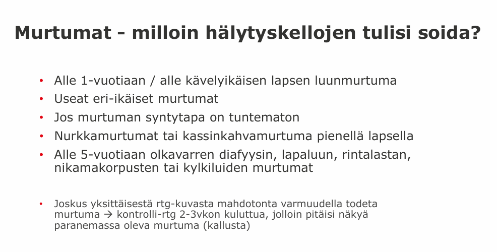
3.1.1.2 15v poika. Mikä murtuma ja hoito (kipsaus, repositio+kipsaus, leikkaus)
Ei esimerkkikuvaa tietystikään saatavilla, mutta tässä mahdollinen kysymykseen sopiva kuva
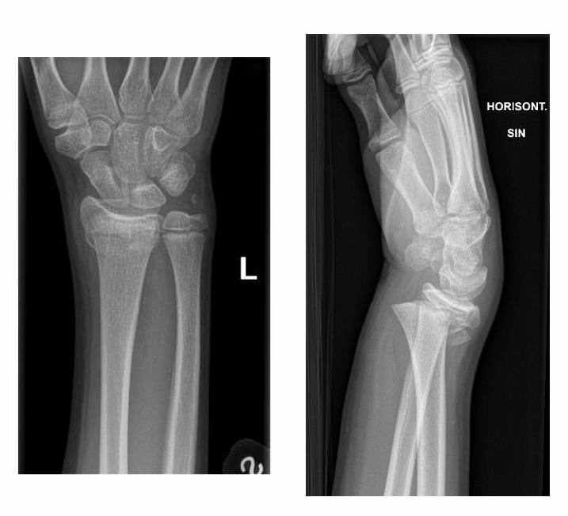
Radiuksen Salter-Harris tyypin 2 (SHII) murtuma + processus styloideus ulnaen (PSU) murtuma. Distaalinen radiusmurtuma on sen verran anguloitunut, että vaaditaan repositiota. Jos lapsen distaalisen radiusmurtuman repositio ei onnistu tai hyväksyttävää asentoa ei saada ylläpidettyä ulkoisen tuennan avulla, murtuma stabiloidaan k-piikeillä.
Vastaus siis todennäköisesti “repositio+kipsaus”
Lasten distaalisten radiusmurtumien hyväksyttävät virheasennot vaihtelevat lähteestä toiseen, mutta voi ajatella, että: Dorsaalinen kallistuskulma:
Jos olisi hyväksyttävän asentoinen, niin ei tarvitse pääsääntöisesti reponointia ja voi kipsata luun suoraan. Yleensä lyhyt dorsaalinen lasta riittää, mutta kyynärvarren murtumissa (molemmat luut murtuneet) käytetään immobilisaationa kulmalastaa. Kyynärluun puikkolisäkkeen murtuma värttiläluun murtuman yhteydessä ei kuitenkaan edellytä hoitoa kulmalastalla.
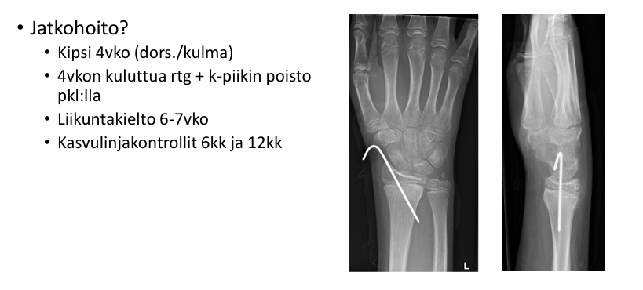
3.2 2025
Ei tarkkoja tehtävänantoja pääosassa listattuja asioita wikissä, joten käsitellään ne ns. “Selitä lyhyesti”-tyyppisinä kysymyksinä, joita on ollut ainakin aikaisempina vuosina wikin mukaan.
3.2.1 Selitä lyhyesti: asentoplagiokefalia
Yleisin vauvan kallon poikkeava muoto on takaraivon tois- tai molemminpuolinen litteys (posteriorinen plagiokefalia ilman synostoosia; asentoplagiokefalia). Suurin osa lasten takaraivon vinoudesta on ulkoisen voiman aiheuttamaa deformaatiotyyppiä, johon ei liity synostoosia.
Tämän on arveltu johtuvan syntymän jälkeisestä muotoutumisesta, lähinnä yksipuolisesta nukuttamisasennosta. On kuitenkin mahdollista, että suurella osalla näistä lapsista takaraivon litteys on kehittynyt jo kohdussa. Pään muovautuminen synnytyskanavassa voi väliaikaisesti peittää jo olemassa olevan vinouden, mutta se tulee uudelleen esiin muutaman viikon kuluttua synnytyksestä.
Jos on toispuoleista plagiokefaliaa, niin päältäpäin kalloa tarkasteltaessa todetaan rakenteiden kiertyneen samaan suuntaan; kallo on vinoneliön mallinen. Litteän puolen korva ja joskus otsa ovat edempänä kuin vastakkaisella puolella. Näillä potilaille saattaa esiintyä samanaikaista kireyttä päännyökkääjälihaksessa (torticollis), ja siksi varhaisvaiheen fysioterapia saattaa olla perusteltua.
Ilmaantuvuus on kasvanut huomattavasti vuoden 1992 jälkeen, jolloin maailmalla levisi suositus lasten makuuttamisesta selkäasennossa kätkytkuoleman ehkäisemiseksi. Muutos on hyvin yleinen: litteyttä tai vinoutta on raportoitu esiintyvän jopa 25–48 %:lla pikkulapsista. Saman raportin mukaan kallon litteyttä oli todettavissa teini-ikäisistä enää vain 2 %:lla. Useimmiten kallon muodon korjaantuminen itsestään alkaa jo ennen kuuden kuukauden ikää ja jatkuu sen jälkeen ainakin kolmen vuoden ikään saakka, mahdollisesti pitempäänkin. Korjautuminen johtuu aivojen nopeasta kasvuvauhdista ja lapsen kääntymisestä itsestään vatsa-asentoon.
Lapsia, joiden takaraivon vinouden katsotaan johtuneen ulkoisen voiman aiheuttamasta muovautumisesta, jäädään alkuvaiheessa seuraamaan. Hoitona pääasiassa lapsen kannustaminen pään kääntämiseen toiselle puolelle (ei tietystikään luonnollisesti tätä halua tehdä, koska litteällä puolella on helpompi maata); siis lähestytään lasta aina toiselta puolelta, laitetaan lelut sängyn toiselle puolelle yms.
Muotoa korjaava kypärähoito on suosittua Yhdysvalloissa ja joissakin Euroopan maissa, mutta Pohjoismaissa sitä käytetään harvoin. Yli 90 %:lla lapsista kallon muoto pääosin korjautuu itsestään 2−3 vuoden ikään mennessä.
Noin yhdellä kymmenestä lapsesta posteriorinen plagiokefalia ei kuitenkaan korjaannu seurannassa, ja osalla vinous saattaa jopa lisääntyä. Nämä lapset on syytä lähettää jatkotutkimuksiin, ja heille 3D-TT saattaa olla aiheellinen. Radiologiset löydökset voivat olla huomattavia ja leikkaushoito tarpeen, vaikka kraniosynostoosia ei olisikaan
Kirurginen hoito voi olla vaihtoehto myös lapsille, joilla litteyden lisäksi esiintyy neurologisia oireita tai kehitysviivettä. Tätä voidaankin pitää perusteena lapsen lähettämiselle asiaan perehtyneeseen yksikköön. Vaikka kallon painumalla ja neurologisella oireistolla ei olisikaan yhteyttä, on asia syytä selvittää. Takaraivon vinous terveellä lapsella ei sellaisenaan ole lähettämisen syy. Lasta on kuitenkin syytä seurata 4 kuukauden välein noin vuoden ikään saakka sen selvittämiseksi, onko kallon pyöristymistä tapahtumassa vai ei.
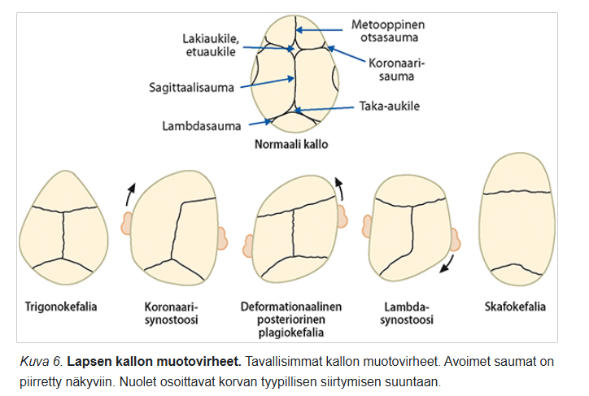
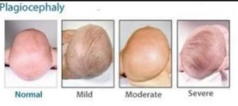
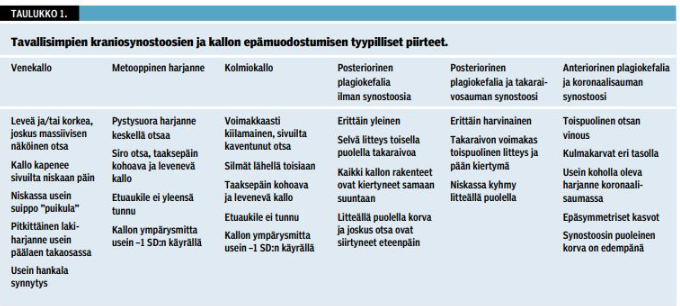
3.2.2 Selitä lyhyesti: Labiasynekia
Labiasynekia on kalvomainen kiinnike pienten häpyhuulten välissä, joka ilmenee yleensä sattumalöydöksenä neuvolatarkastuksessa tai vaipanvaihdossa. Tunnetaan myös nimellä häpyhuulikiinnike tai labiaaliadheesio.
Fysiologinen ilmiö prepubertaalisilla; vaaraton tila, jossa pienten häpyhuulten sisäreunat ovat liimautuneet tai kasvaneet yhteen.
Ei vaadi hoitoa tai seurantaa. Hoituu itsestään viimeistään hormonitoiminnan aktivoituessa. Ei yleensä kannata aukaista ”väkisin”.
Jos kiinnike on erittäin tiukka tai peittää lähes koko emättimen ja virtsaputken suun, oireina voi esiintyä virtsaamisongelmia, mutta tämä on todella harvinaista. Rakon tyhjeneminen syytä varmistaa ultraäänellä, jos epäilyä virtsaamisvaikeudesta. Voi joskus häiritä katetrointia (esim. leikkauksissa); jolloin voidaan sormella vetäen avata kiinnikettäsen verran että katetri saadaan laittetua paikalle. Jos kiinnike haittaa virtsaamista tai aiheuttaa tulehduksia, voi määrätä estrogeenivoidetta tai kortisonivoidetta. Voidetta levitetään kuuriluontoisesti suoraan kiinnityslinjaan, mikä pehmentää ihoa ja auttaa sitä avautumaan.
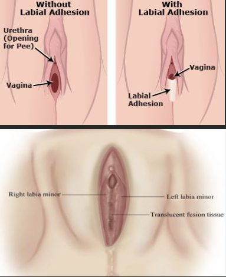
3.2.3 Selitä lyhyesti: Monteggian murtumaluksaatio
Monteggian murtuma tarkoittaa kyynärluun yläosan (proksimaalisen 1/3) murtumaa, johon liittyy proksimaalisen radioulnaarisen nivelen (PRUJ) luksaatio. Voi syntyä pienienergiaisenkin vamman seurauksena.
Lapsilla suhteellisesti yleisempi kuin aikuisilla; käsittävät kuitenkin alle 1 % lasten kyynärvarren murtumista
Vamma jää huomaamatta jopa noin neljänneksessä tapauksista ja voi johtaa hoitamattomana pitkäkestoisiin ongelmiin. Jälkikäteen asiaa arvioitaessa voi olla vaikeaa erottaa synnynnäistä värttinäluun pään luksaatiota Monteggian murtuman jälkitilasta. Vammaa tule epäillä herkästi kaikissa kyynärvarren vammoissa ja ottaa tarvittaessa erillinen kyynärniveleen kohdistettu röntgenkuva (laadukkaat etu- ja sivusuunnan kuvat tärkeät).
Hoidossa on olennaista korjata kyynärluun deformiteetti, jolloin värttinäluu yleensä reponoituu. Tämä onnistuu tuoreissa vammoissa useimmiten sulkeisesti (+kulmakipsi stabiloinniksi). Instabiili kyynärluunmurtuma (eli yleensä) kannattaa ydinnaulata antegradisesti kyynärlisäkkeen kärjestä/ylemmästä metafyysistä joko taipuisalla naulalla tai K-piikillä. Kyynärluun murtuman asennon korjaus tehdään tarvittaessa avoimesti, joko K-piikeillä tai yli 10-vuotiailla lapsilla levyllä. Radiohumeraalinivel reponoidaan avoimesti, jos värttinäluun pää ei reponoidu vaikka kyynärluun asento on korjattu.
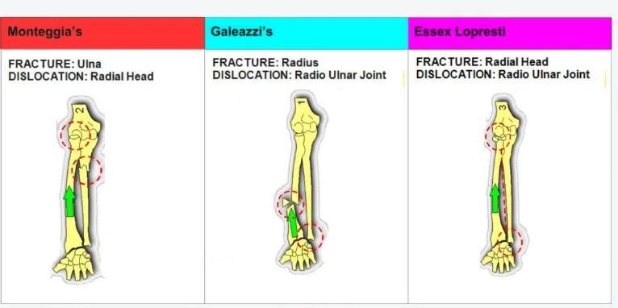
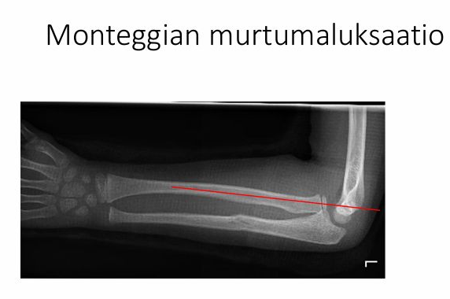
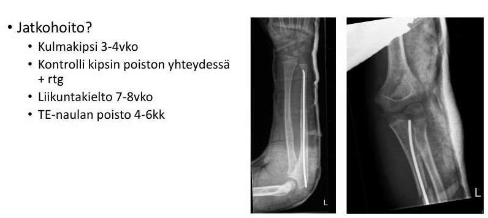
3.2.4 Selitä lyhyesti: Vesikoureteriaalinen refluksi (VUR)
Vesikoureteraalinen refluksi (VUR) tarkoittaa virtsan virtaamista rakosta takaisin virtsanjohtimeen; havaitaan yleensä lapsuudessa toistuvina pyelonefriitteinä. Voi johtua mm. ureterin poikkeavasta tulokulmasta rakkoon nähden tai synnynnäisestä rakennepoikkeavuudesta vesikoureteraalisessa läpässä.
Refluksia tapahtuu erityisesti paineen noustessa rakossa (esim. virtsaamisen yhteydessä). VUR:n lievässä muodossa (aste I) takaisinvirtaus rajoittuu virtsanjohtimiin, mutta virtsa voi kulkeutua myös munuaisaltaisiin (aste II) ja aiheuttaa painetta munuaiskudokseen (asteet III–V). Tilanteeseen voi liittyä myös virtsanjohtimen laajentuminen.
Lievä VUR on yleinen pienillä lapsilla ja useimmiten korjaantuu itsestään ajan kuluessa. Vaikeammat muodot (III–V) altistavat munuaistason infektioiden kehittymiselle ja niiden uusimisille. Toistuvat virtsatieinfektiot voivat johtaa krooniseen munuaisten vajaatoimintaan erityisesti, jos virtsateissä todetaan niitä ahtauttava rakennevika tai lapsella on munuaisten kehityshäiriö. Tietyissä tilanteissa virtsatieinfektioiden ehkäisemiseksi käytetään mikrobilääke-estohoitoa. Harvoin hoitona voi olla endoskooppinen tai jopa kirurginen hoito. Endoskopiassa sisäpuolelta virtsanjohtimen suuaukkoon voidaan ruiskuttaa täyteainetta, joka vahvistaa venttiiliä ja estää takaisinvirtausta. Kirurgiassa virtsanjohtimen ja rakon välinen liitoskohta voidaan korjata avo- tai tähystysleikkauksella.
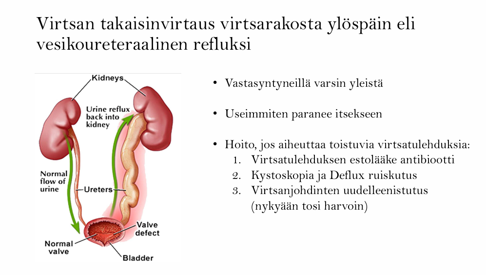
3.2.5 Selitä lyhyesti: Hirschsprungin tauti
Hirschsprungin tauti on synnynnäinen loppusuolen aganglionoosin aiheuttama sairaus, joka ilmenee useimmiten suolenvetovaikeutena jo vastasyntyneisyyskaudella. Gangliosolut, joiden laskeutuminen epäonnistuu Hirschsprungin taudissa, ovat peräisin hermopienasta. Hermopienasolujen kulkeutumisen puuttuminen distaalisen paksusuolen ja peräsuolen myenteeriseen ja submukosaaliseen pleksukseen johtaa näiden alueiden relaksaation ja peristaltiikan epäonnistumiseen -> dilataatio hermottomasta alueesta proksimaalisesti
Suurin osa, noin 75 % tapauksista rajoittuu peräsuolen alueelle, mutta hankalimmissa tilanteissa koko suolen hermotus voi olla poikkeava. Hirschsprungin tautia pitää epäillä, jos suolenvetovaikeus on alkanut heti syntymän jälkeen, etenkin jos ensimmäinen mekonium ei ole tullut normaalisti ensimmäisen 24-48h aikana. Suurin osa diagnosoidaan jo ennen sairaalasta kotiutumista, mutta lievemmissä tapauksissa oireena voi olla hankala, hoitoon reagoimaton ummetus, vatsan pömpötys ja huono painonnousu.
Diagnoosiin päästään koepalatutkimuksella ja loppusuolen varjoainekuvalla pystytään arvioimaan, kuinka pitkälle tauti ulottuu suolessa oraalisuuntaan. Valtaosa pystytään hoitamaan leikkauksella peräaukon kautta, jossa aganglionoottinen osa suolta poistetaan. Hirschsprungin tautiin liittyy noin 15–30 %:ssa tapauksista sille ominainen suolistotulehdus, enterokoliitti, joka voi ilmaantua joko taudin ensioireena ennen leikkausta tai myös leikkauksen jälkeen. Tämän oireena on vatsan pömpötys, poikkeuksellisen pahanhajuinen ripuli ja kuume. Tila voi olla pahimmillaan hengenvaarallinen, ja siksi nämä potilaat on syytä ohjata nopeasti sairaalaan jatkohoitoon.
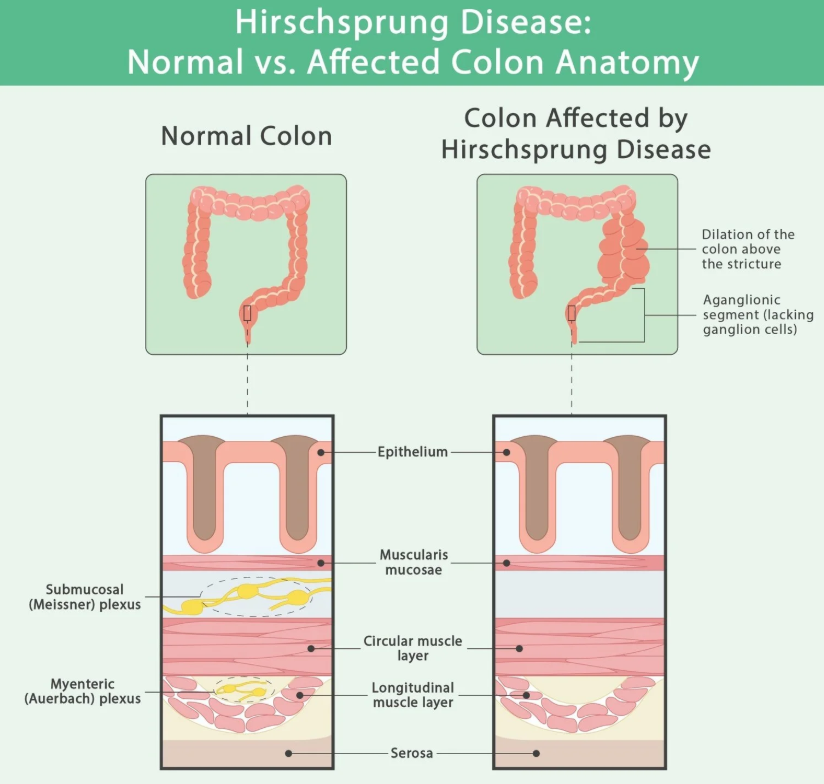
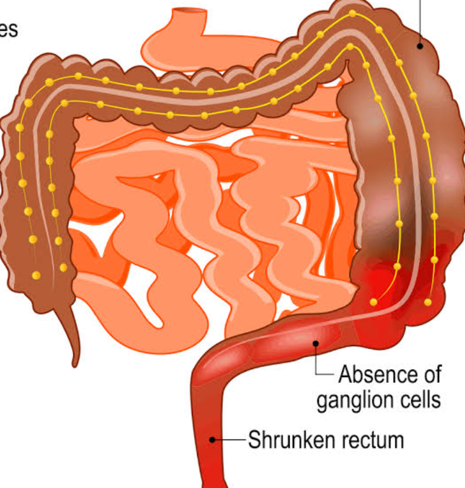
3.2.6 Selitä lyhyesti: Salter-Harris 3 luokan morfologia
Salter-Harrisin luokan 3 murtuma kulkee kasvulevyn kautta epifyysin läpi nivelpintaan.
Kasvulevyyn ulottuvat murtumat luokitellaan tavallisimmin Salter-Harris-luokituksen avulla. On myös Petersonin luokitus, joka on tarkempi on käytössä mm. Helsingissä enemmän; muuten maailmalla SH-luokitus on yleisemmin käytössä.
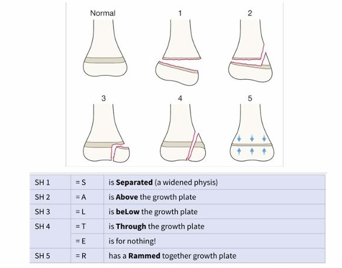
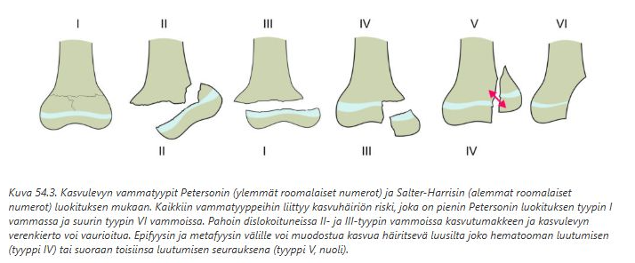
3.2.7 Selitä lyhyesti: Hypospadia
Virtsaputken alahalkio eli hypospadia on virtsaputken urogenitaalipoimujen sulkeutumishäiriö, jossa tavallisesta anatomiasta poiketen virtsaputki aukeaa siittimen alapinnalle eikä terskan kärkeen.
Hypospadian tausta on monitekijäinen ja esiintyvyys noin 20/10 000 syntynyttä. Hypospadia luokitellaan virtsaputken suuaukon mukaan: distaalinen, peniili, proksimaalinen. Virtsaputken suuaukon sijainti ei välttämättä riitä kuvaamaan vaikeusastetta, mistä johtuen käytännön luokittelussa huomioidaan lisäksi koko, terskan muoto, uretralevyn laatu ja peniksen käyryys.
Myös esinahka on hypospadiassa usein poikkeava. Piilokiveksisyyden ja nivustyrän esiintyvyys on hypospadiapotilailla noin 10 %. Epäselvän sukupuolen selvittelyt tulee tehdä niillä, joilla on proksimaalinen hypospadia ja piilokiveksisyys.
Mikäli virtsasuihku on poikkeava tai virtsaputki pullistuu virtsatessa, tulee virtsaputken suuaukon ahtauma poissulkea. Virtsanpidätyskyky on näillä lapsilla normaali. Hypospadia korjataan tilanteen mukaan leikkauksella useimmiten ensimmäisen ikävuoden jälkeen.
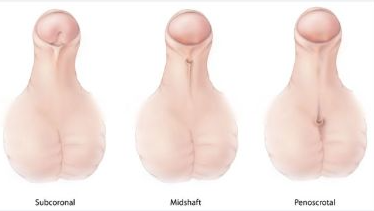
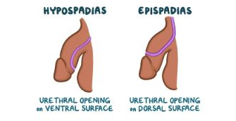
3.2.8 Selitä lyhyesti: Appendix testis
Kiveslisäke eli appendix testis on arviolta 90 %:lla miehistä kiveksen yläosissa tai lisäkiveksessä sikiökaudelta jäänyt muutaman millimetrin mittainen varrellinen lisäke, joka saattaa kiertyä oman vartensa ympäri ja mennä nekroosiin.
Kiveslisäkkeen kiertymässä kiveksen ja lisäkiveksen vieressä tuntuu aristava nappula, joka voi myös sinertää ihon läpi (blue dot sign).
Kiveslisäkkeen kiertymä ei välttämättä tarvitse leikkausta. Usein päädytään leikkaukseen epäselvän diagnostiikan takia (erotusdiagnostiikka testistorsion suhteen vaikea) ja toisaalta voimakkaat kivut paranevat nopeasti leikkauksella.
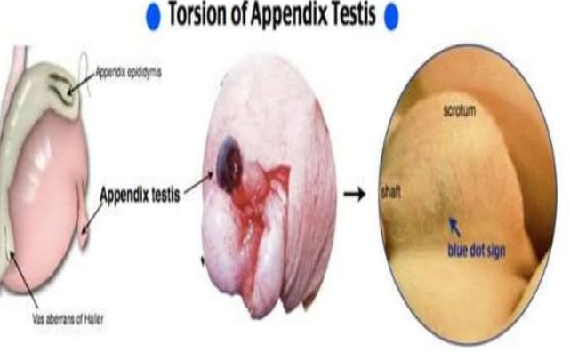
3.2.9 Selitä lyhyesti: Urakusjäänne
Napavarren irtoamisen jälkeen napaan voi jäädä erittävä granulooma. Se rauhoittuu yleensä puhdistuksella tai laapistuksella eli hopeanitraattikäsittelyllä. Jos napa erittää useita kuukausia, pitää epäillä napafisteliä, joka on sikiöaikaisen rakenteen jäänne.
Sikiökehityksen aikana siis sekä virtsateistä (urachus) että suolistosta (ductus omphalomesentericus) on yhteys napaan. Sikiöaikaiset jäänteet, kuten virtsarakon tai suolen limakalvojäänteet (urakusremnantti, omfalomesenteerinen remnantti; yhteyksiä siis joko rakosta tai suolesta napaan) muistuttavat granuloomaa, mutta erittävät mahdollisesti jopa virtsaa tai ulostetta eivätkä reagoi granulooman tavallisiin hoitoihin.
Näitä tutkimuksia varten vauva lähetetään kiireettömään lastenkirurgin arvioon. UÄ selvittelyssä, tarvittaessa MRI. Hoito on usein operatiivinen.

3.2.10 Selitä lyhyesti: BXO
Balanitis xerotica obliterans (BXO) on krooninen peniksen tulehdussairaus, joka esiintyy useimmiten esinahan ja terskan alueella. BXO:ta on pidetty valkojäkälän varianttina miehen genitaalialueella, ja sitä tavataan kaiken ikäisillä (yleisintä pojilla n. 9-11v ja aikuisilla n. 30-60v)
Etiologialtaan avoin. Taudissa epiteeli muuttuu ympäristöään vaaleammaksi ja fibrotisoituu. Osalle syntyy kiinnikkeitä. Fibrotisoituminen voi aiheuttaa patologista fimoosia.
Valkojäkälä on suurin yksittäinen ei-papilloomavirusinfektioihin liittyvien peniksen karsinoomien riskitekijä (lisääntynyt levyepiteelikarsinooman riski (4-5 %))
BXO diagnoosi tehdään yleensä kliinisesti todettaessa patologinen sekundaarinen fimoosi (esinahassa oleva vaalea kiristävä rengas)
BXO on tavallisin lääketieteellinen syy ympärileikkaukseen. Hoitamalla BXO:ta glukokortikoidivoiteella voidaan välttää ympärileikkaus noin kolmasosalla potilaista; kannattaakin yrittää hoitaa lievää esinahkaan rajoittuvaa BXO:ta ensin esim. bemetson 1x/vrk 4-8vk.
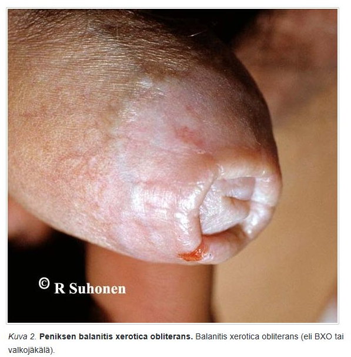
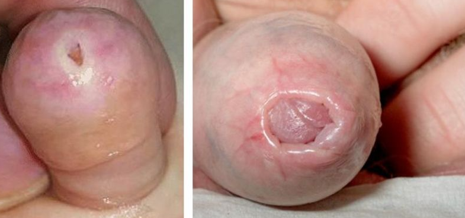
3.2.11 Selitä lyhyesti: NEC
Nekrotisoivaa suolitulehdusta eli enterokoliittia (Necrotizing enterocolitis, NEC) ilmenee erityisesti tehohoidossa olevilla, hyvin ennenaikaisilla lapsilla, mutta sitä ilmenee joskus myös esimerkiksi täysiaikaisilla vastasyntyneillä, joilla on vaikea synnynnäinen sydänvika tai suoliston alueen kehityshäiriö.
Nekroottisen enterokoliitin taustatekijöitä ovat mm. vähentynyt suoliston verenkierto ja tulehdus. Mikrobiologisen etiologian osuus on epäselvä. Korvikemaitoruokituilla pikkukeskosilla nekroottinen enterokoliitti on tavallisempi kuin rintamaitoa saaneilla lapsilla.
Vaikeassa suolitulehduksessa suoleen voi syntyä kuolioalueita ja jopa reikiä.
Vaikean nekroottisen enterokoliitin hoito on kirurginen. Lievempioireisia tapauksia voidaan hoitaa konservatiivisesti antibiooteilla ja suonensisäisellä ravitsemuksella, kunnes tulehdus suolessa on asettunut.
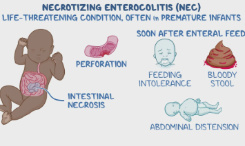
3.2.12 Selitä lyhyesti: Wilmsin tuumori
Yleisin munuaisen maligni kasvain aikaisessa lapsuudessa on Wilmsin tuumori eli nefroblastooma; nuorten lasten vatsan alueen malignin möykyn yleisin syy.
Wilmsin tuumori on pahanlaatuinen embryonaalinen kasvain, joka koostuu kolmesta eri komponentista: erilaistumaton blasteema (epäkypsä munuaisen mesenkyymi, pieniä ja niukkasytoplasmaisia soluja), epiteeli (tiehyitä, primitiivisiä glomeruluksia ja tubuluksia) ja strooma (yleensä fibrosyyttistä).
Valtaosa Wilmsin kasvaimista todetaan alle viisivuotiailla; keski-ikä diagnoosille n. 3v. Usein lapsella todetaan poikkeava resistenssi vatsalla, muuten useimmiten oireeton. Joskus ilmenee verivirtsaisuutta (minimaalisesta traumasta aiheutuu makroskooppinen hematuria; noin 20–30 %) tai kohonnut verenpaine (25 %). Vatsan palpointi tulee epäilyssä suorittaa varovasti, ettei tuumori repeä ja leviä. UÄ on hyvä primaaritutkimus. Ei ylitä keskilinjaa.
Leikkaus on usein helpompi tehdä lyhyen solunsalpaajahoidon jälkeen, jolloin kasvain on kutistunut. Samalla saadaan myös histologinen arvio lääkevasteesta. Paikallinen kasvain voidaan hoitaa kevyellä solunsalpaajalääkityksellä. Paikallisesti ja systeemisesti (keuhkot) levinneen Wilmsin kasvaimen hoitoon käytetään pidempää solunsalpaajahoitoa ja sädehoitoa.
Wilmsin kasvaimen ennuste on erinomainen, ja jopa keuhkojen etäpesäkkein uusiutuvan kasvaimen hoidossa on mahdollista saavuttaa pysyvä paraneminen.
3.2.13 Selitä lyhyesti: Parafimoosi
Parafimoosi (esinahan luiskahdus) tarkoittaa, että kireä esinahka luiskahtaa terskan taakse eikä enää palaudu. Voi obstruktoida terskan verenkiertoa ja jatkaa turpoamista, jonka takia hoidettava nopeasti päivystyksellisesti (ei nyt mikään älyttömän kiireinen hätätilanne kuitenkaan kyseessä). Hoitona siis vedetään esinahka takaisin paikalleen; varsinkin lapsilla kannattaa puudutegeelillä puuduttaa alue edeltävästi.
Fimoosi (esinahka on niin kireä, ettei sitä saa vedettyä kunnolla pois terskan päältä) voi johtaa parafimoosiin, jossa ahdas esinahka ei pääse taakse vetämisen jälkeen takaisin terskan päälle.
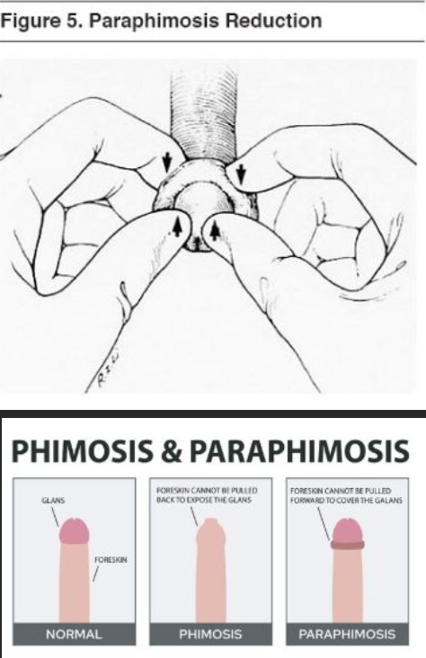
3.2.14 Selitä lyhyesti: Lonkan transientti synoviitti
Lonkan transientti synoviitti (aseptinen koksiitti, coxitis simplex) eli lonkan nivelkalvon ohimenevä tulehdus on yleisin 3-10(-12)-vuotiaan lapsen ontumisen syy. Kyseessä on äkillisesti alkanut, yleensä toispuoleinen, aseptinen tulehdus. Oireena on kivulias ontuminen tai varaamattomuus. Kipu voi tuntua nivusessa tai usein tyypillisen harhaanjohtavasti polvi- tai reisikipua. Tyypillisesti lonkka on fleksiossa ja ulkorotaatiossa. Tutkittaessa erityisesti lonkan kiertoliikkeet ovat rajoittuneet.
Yleisoireita ei ole, ja lasko ja CRP ovat normaalit tai vain lievästi suurentuneet.
Niveltulehduslöydös vahvistuu kaikukuvauksella, ja diagnoosi varmistuu, kun oirekuva ja löydökset väistyvät muutaman päivän - parin viikon kuluessa.
Hoito: lepo, NSAID; kontrolli tarvittaessa, jos oireet ei häviä 2 viikossa (harkinnan mukaan rtg). Voi uusia.
3.2.15 Selitä lyhyesti: Torusmurtuma
Lapsilla metafyysi voi aksiaalisen voiman vaikutuksesta murtua siten, että kompressiopuolen hohkaluu puristuu kasaan ja kuorikerros rypistyy, kun taas distraktiopuolen kuorikerros jää joko ehjäksi tai siihen tulee lievä taipuma.
Tällainen lapsille tavallinen murtuma (ns. torus- tai bucklemurtuma) on stabiili, eikä sitä ole syytä reponoida. Ryppymurtumaa voi luonnehtia lapselle ja vanhemmille luun “nitkahtamisena” eikä “murtumana”, sillä se on täysin stabiili luuvamma. Torusvammassa luun asento ei huonone eikä radiologista seurantaa tarvita. Ranteen torusmurtuma hoituu 1-3 viikon tarrakiinnitteisellä ortoosilla tai yksilöllisellä dorsaalisella kipsilastalla, jonka tarkoituksena on kivunhoito. Sen käyttö voidaan lopettaa sovitun ajan kuluttua kotona
Lapsen luu on elastisempaa ja periosti paksumpaa kuin aikuisen, jonka takia lapsilla tulee muistaa epätäydelliset murtumat, joita ovat torusmurtuma (buckle), pajunoksamurtuma (greenstick) ja taipuma.
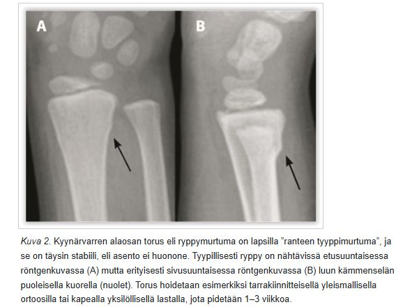
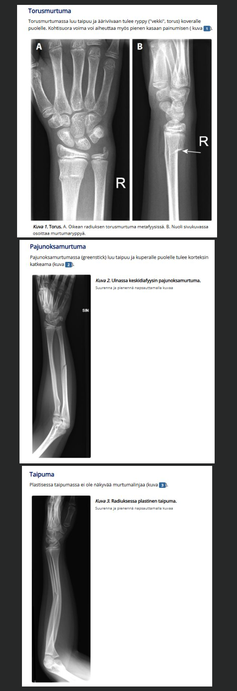
3.2.16 Selitä lyhyesti: Mesenteriaalinen lymfadeniitti
Mesenteriaalinen lymfadeniitti on virusinfektion / sen jälkitilan aiheuttama ileokekaalikulman imusolmukkeiden turvotus. Tyypillisin ikä on alle 15-vuotiaat lapset ja nuoret (esiintyvyyshuipentuma noin 3–10 vuoden iässä). Aikuisiällä vaiva on harvinainen.
Oirekuva matkii oireiltaan erityisesti äkillistä umpilisäkkeen tulehdusta ja onkin yleisin erotusdiagnostinen vaihtoehto appendisiitille. Kuumetta, pahoinvointia ja oksentelua, lievää ripulia/muita suolisto-oireita; usein taustalla edeltävä hengitystieinfektio.
Diagnoosi perustuu kliiniseen kuvaan ja vatsan alueen ultraäänitutkimukseen. Ultraäänessä nähdään suoliliepeessä useita suurentuneita imusolmukkeita (halkaisija lyhyellä akselilla >8 mm), kun taas umpilisäke todetaan normaaliksi. HUOM! Myös appendisiitti voi turvottaa imusolmukkeet, mutta tällöin tietysti umpilisäke olisi kuitenkin poikkeava (paksuseinäinen).
Paranee itsestään 1-4vkossa, hoito oireenmukainen. Jos ei parane / systeemioireita, niin poissuljettava IBD, maligniteetti, tuberkuloosi jne.
3.2.17 Selitä lyhyesti: Kampurajalka
Kampurajalka on yleisin (esiintyvyys on noin 1/1 000) synnynnäinen alaraajapoikkeavuus ja sille on tyypillistä latinankielisen nimensä talipes equinovarus mukaan jäykkä virheasento, jossa yhdistyy jalkaterän etuosan kääntyminen keskiviivaa kohti (adductus), jalkapohjan kiertyminen sisäänpäin (supinaatio) ja koko jalkaterän voimakas varvistusasento (ekvinus). Kaikki kampurajalat eivät kuitenkaan ole samanlaisia: eri virheasentojen osuus ja jalkaterän jäykkyys vaihtelevat.
Diagnoosi tehdään usein jo raskauden aikana kaikukuvauksen perusteella 18.-21. raskausviikolla (tosin kaikukuvaus ei kuitenkaan varmuudella pysty erottamaan kampurajalkaa sikiön normaalisti kehittyvästä jalasta (posturaalinen kampurajalka), joka on kampuramaisessa asennossa ahtaassa kohdussa).
Syntymän jälkeen oikea diagnoosi voidaan tehdä aina kliinisesti: todellinen kampurajalka on jäykkä, eikä sen asennon korjaus onnistu kuin osittain - posturaalisen kampurajalan asennon voi korjata helposti normaaliksi.
Kampurajalka voi liittyä erilaisiin oireyhtymiin ja neuromuskulaarisiin sairauksiin, kuten artrogrypoosiin, CP-vammaan tai meningomyeloseeleen, mutta suurin osa potilaista on muuten terveitä. Kampurajalan diagnoosin kannalta alkuvaiheessa otetuista röntgenkuvista ei ole hyötyä.
Hoitona käytetään niin sanottua toistokipsausta (Ponsetin metodi), jossa virheasentoa pyritään asteittain korjaamaan viikon välein vaihdettavilla kipseillä. Jalan etuosaa (veneluu ja sitä distaalisempi osa) painetaan sisäsivulta ja samalla tuetaan peukalolla jalkaterän ulkosivua telaluun kaulan kohdalta. Saavutettu asento säilytetään kipsaamalla.
Kipsihoidon päätteeksi valtaosa kampuravauvoista tarvitsee akillesjänteen katkaisun. Akillesjänteen katkaisu eli tenotomia tehdään yleensä 4-6 toistokipsauksen jälkeen, kun jalkaterä on saatu lähelle neutraaliasentoa. Tenotomian jälkeen asetetaan reisimittainen pitkä alaraajakipsi, niin, että polvi on 90 asteen kulmassa ja nilkka on lievässä dorsifleksiossa. Katkaistun jänteen päät kasvavat kipsihoidon aikana yhteen aiempaa pidemmäksi.
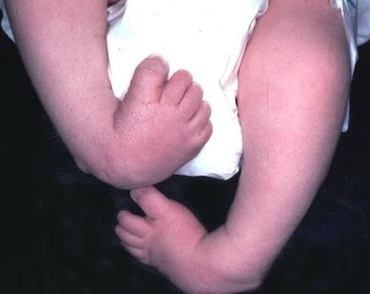
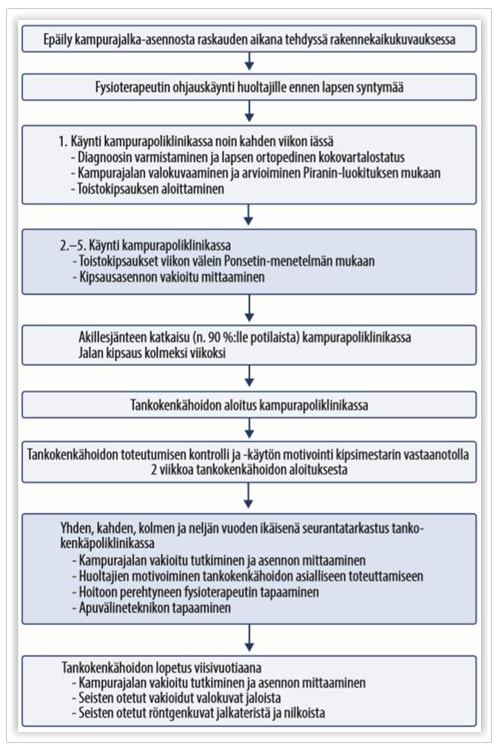
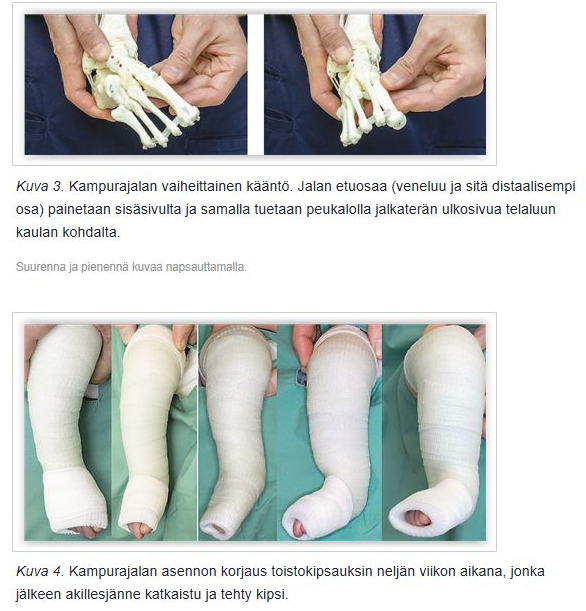
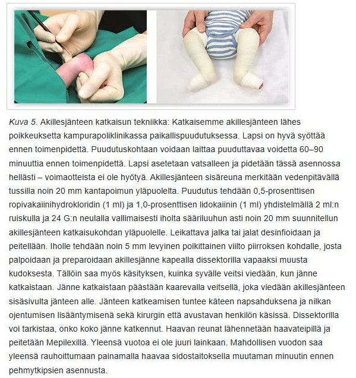
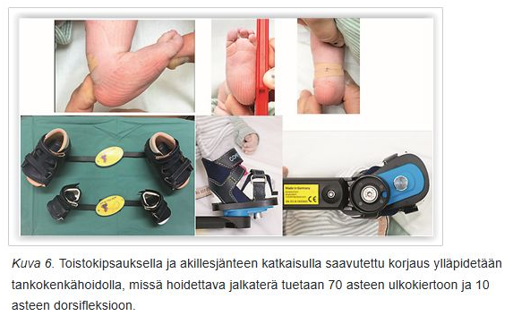
3.2.18 Selitä lyhyesti: Harjurinta
Pectus carinatum on kansankielellä harjurinta tai pulunrinta. Se on rintakehän rakennepoikkeama, jossa rintalasta ja kylkiluut työntyvät ulospäin
Tavallisimpia rintakehän epämuodostumia ovat kuopparinta (pectus excavatum, suutarinkuoppa) ja harjurinta (pectus carinatum, pulunrinta)
Näiden rakennepoikkeavuuksien tarkkaa syytä ei tunneta, mutta jossain määrin ne assosioituvat sidekudossairauksiin (Marfan, Ehlers–Danlos) ja osalla potilaista todetaan suvussa vastaavia epämuodostumia.
Ne ovat pääosin oireettomia ja haitta on yleensä kosmeettinen. Yleensä synnynnäisiä ongelmia ja pahenevat murrosiässä kasvun myötä.
Syvään kuopparintaan voidaan tarjota korjaavaa leikkausta, jos ongelma häiritsee. Leikkauksessa rintakehälle asetetaan metallitanko nostamaan rintalastaa. Kyseessä on iso leikkaus eikä siten ole ollenkaan riskitön.
Harjurintakaan ei tarvitse yleensä hoitoa, mutta varsinkin kasvuiässä aloitettu ortoosihoito vähentää virhemuodostumaa. Osa mukautuu ortoosin käyttöön ja kirurginen hoito on varsin harvinaista.
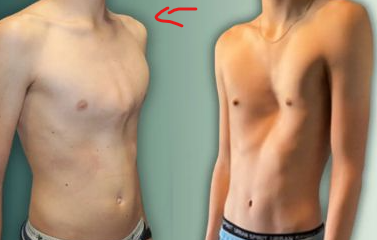
3.2.19 Selitä lyhyesti: Uretraläppä
Virtsaputken takaosan läppä (posterior urethral valve, PUV) eli uretraläppä on synnynnäinen rakennepoikkeama; virtsaputken sulkijalihaksen seudussa sijaitseva kalvomainen rakenne, joka esiintyy vain pojilla. Uretraläppä tukkii virtsaputkea ja aiheuttaa painetta virtsateihin. Tämä häiritsee virtsarakon ja munuaisten toimintaa.
Useimmiten uretraläppä todetaan jo sikiöaikana ultraäänitutkimuksessa. Jos uretraläppä havaitaan vasta syntymän jälkeen, se löydetään usein virtsatietulehduksen tutkimuksissa.
Syntymän jälkeen virtsateiden UÄ kuuluu tehdä mm, jos todetaan imeväisiällä virtsatieinfektio tai muutenkin lapsella kuumeinen virtsatieinfektio. Jos pojalla todetaan kuumeeton mutta diagnostisesti varma virtsatieinfektio imeväisiän jälkeen, ultraäänitutkimus on myös tarpeen, sillä pojilla virtsatieinfektiot ovat harvinaisia ja infektio voi liittyä todennäköisemmin merkittävään rakennepoikkeavuuteen. Lisäksi tulee huomioida ahtaan esinahan eli fimoosin mahdollisuus.
Ultraäänitutkimuksen tavoitteena on löytää varhain virtsateitä ahtauttavat synnynnäiset viat ja muut merkittävät synnynnäiset rakennepoikkeavuudet kuten munuaisen kehityshäiriö (munuaisen agenesia, aplasia tai dysplasia). Varhainen virtsateiden ahtauttavan vian löytäminen on tarpeellista riittävän aikaisen kirurgisen hoidon suunnittelua ja toteuttamista varten. Vaikea todettu rakennepoikkeavuus voi puolestaan vaikuttaa munuaisten toimintaan, ja lapsi voi vaatia munuaisten toiminnan seuraamista. Tärkeimpiä etsittäviä virtsankulkua estäviä eli ahtauttavia rakennepoikkeavuuksia ovat hydronefroosi ja uretraläppä. Toispuoleisen hydronefroosin voi aiheuttaa pelveoureteraalinen stenoosi. Uretraläppä on vakava, pojilla todettava poikkeavuus, jonka kliinisenä löydöksenä voidaan havaita huono virtsasuihku ja usein jo sikiöultraäänitutkimuksessa todettava molemminpuolinen hydronefroosi. Erityisesti uretraläppä voi aiheuttaa molempien munuaisten vaurioitumisen jo kohdussa, mikä voi johtaa munuaisten vajaatoimintaan syntymän jälkeisestä kirurgiasta huolimatta.
Vaikka läppäongelmaa olisikin epäilty jo ultraäänitutkimuksessa, tehdään varsinainen läppädiagnoosi miktiokystografia-tutkimuksella, kun lapsen yleiskunto on riittävän hyvä. Tutkimuksessa rakko täytetään katetrin avulla varjoaineella. Lapsen virtsatessa läppä saadaan näkyviin kuvauksella. Jos lapsi on riittävän iso (yleensä yli 2500 g) ja yleistila hyvä, tehdään diagnoosin varmistuttua virtsaputken ja -rakon tähystys, jonka yhteydessä läppä avataan. Toimenpiteen jälkeen lapsella on yleensä kestokatetri 1–3 päivää. Sen jälkeen katsotaan, että virtsaaminen sujuu ongelmitta ja nestetasapaino normalisoituu, minkä jälkeen lapsi voi kotiutua.
Aikaisemmin vaikeimmissa tapauksissa pyrittiin joskus tekemään toimenpiteitä jo sikiökaudella virtsankulun korjaamiseksi. Taustalla oli ajatus auttaa munuaisten kehitystä. Hoitotulokset eivät kuitenkaan olleet odotettuja ja hoitomuotoa voidaan edelleen pitää kokeellisena.
Nykyään sikiötoimenpidettä saatetaan harkita keuhkojen kehityksen auttamiseksi, jos lapsivesi uhkaa loppua. Jos vastasyntynyt on erittäin huonokuntoinen, saatetaan tarvita tehostettua hengityshoitoa. Näissä vaikeimmissa tapauksissa saattaa joskus olla tarpeen tehdä tilapäinen virtsa-avanne. Siinä useimmiten molemmin puolin virtsanjohtimet nostetaan iholle siten, että virtsa tulee näistä avanteista sekä myös alakautta normaalireittiä pitkin.
Avannevirtsa voi valua yleensä suoraan vaippaan tai haluttaessa avannepussiin. Useimmiten avanteet suljetaan vuoden iässä. Vaikeimmissa tapauksissa jopa vastasyntyneelle voi olla tarpeen aloittaa dialyysihoito eli keinomunuaishoito. Toisinaan munuaistoiminta näissäkin tapauksissa käynnistyy niin, että dialyyseistä voidaan luopua ainakin tilapäisesti.
Läpän avauksen jälkeen potilas kutsutaan yleensä kontrollitutkimuksiin useimmiten ensimmäisen kerran jo muutaman viikon kuluttua ja ensimmäisen vuoden aikana muutamaan otteeseen. Kontrollien yhteydessä laboratoriotutkimuksilla selvitetään munuaisten toiminta ja nestetasapaino. Ultraäänellä tarkistetaan, onko munuaisaltaan turvotus lievittynyt. Läpän aukaisualueelle saattaa kehittyä arpiahtautta tai läppäjäänne saattaa edelleen aiheuttaa ahtautta. Niinpä läppäalueen auki pysyminen voidaan varmistaa tähystystutkimuksella tai rakon varjoainekuvauksella tai molemmilla. Ensimmäisen ikävuoden aikana tehdään myös munuaisten isotooppitutkimus, jolla selvitetään kummankin munuaisen kunto erikseen.
Jatkossa potilaat tarvitsevat sekä seurantaa yleensä 1–2 vuoden välein läpi kasvuiän, elleivät mahdolliset ongelmat edellytä tiiviimpää seurantaa. Munuaistoimintaa seurataan ja tarvittaessa hoidetaan munuaisten vajaatoimintaa. Urologian poliklinikalla seurataan virtsateiden toimintaa ja rakon kokoa ja tyhjenemistä. Vastasyntyneisyyskaudella läppäpotilaan rakko on tyypillisesti erittäin pienikokoinen, voimakkaasti supisteleva ja korkeapaineinen. Lapselle tehdään tarpeen vaatiessa urodynamiatutkimus, jolla selvitetään rakon paineolosuhteita, varsinkin jos munuaisten turvotus ei ala helpottaa hoidon myötä tai lapsen kuivaksi oppimisessa on ongelmia.
Tyypillisesti läppäpotilaan kuivaksi oppiminen on jonkin verran hitaampaa kuin keskimäärin. Jos lapsella on munuaisvajaatoiminta, on virtsaeritys yleensä tavanomaista runsaampi, mikä osaltaan saattaa myös vaikeuttaa kastelua ja pitää yllä ylempien virtsateiden turvottelua. Myöhemmin rakko saattaa pyrkiä venymään lapsen pidättelytaipumuksen takia. Tällöin rakon tyhjeneminen saattaa vaikeutua, mikä osaltaan lisää tulehdusriskiä ja kasteluongelmaa. Seurannan aikana onkin syytä huolehtia, että lapsi käy säännöllisesti virtsalla ja että rakko tyhjenee.
Potilaan munuaisennuste on hyvin vaihteleva. Osalla potilaista munuaistoiminta on täysin normaali, mutta noin kolmasosa päätyy munuaissiirtoon ja näistä kolmasosa vasta aikuisina. Melko hyvän ennusteen munuaissiirtotarpeesta antaa varhaisvaiheen munuaistoiminta. Nuorilla aikuisilla potilailla esiintyy häiritseviä virtsaoireita, kuten kastelua tai virtsaamisvaikeutta jonkin verran enemmän kuin ikätovereilla. Kuitenkin useimmat potilaat ovat oireettomia rakon toiminnan suhteen.
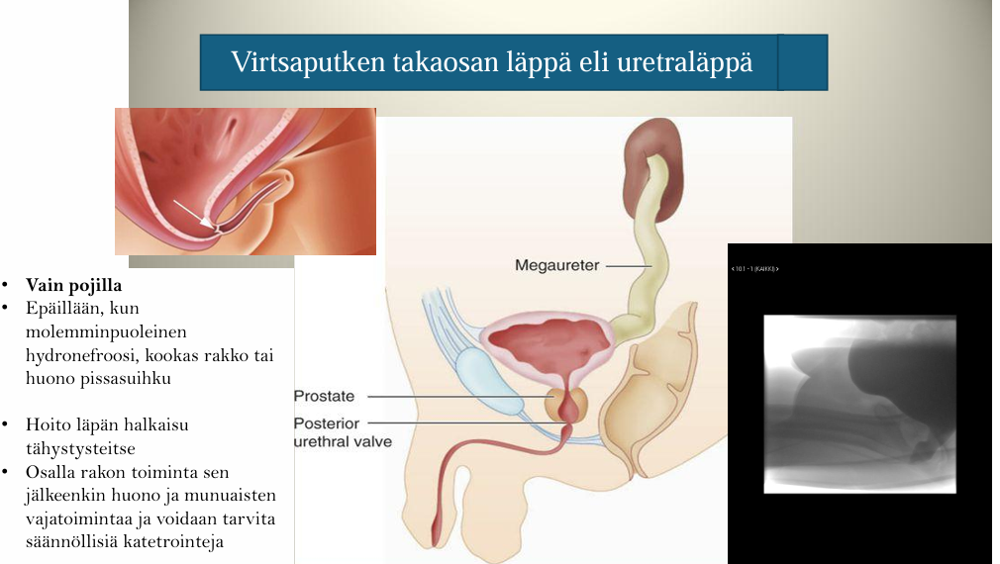
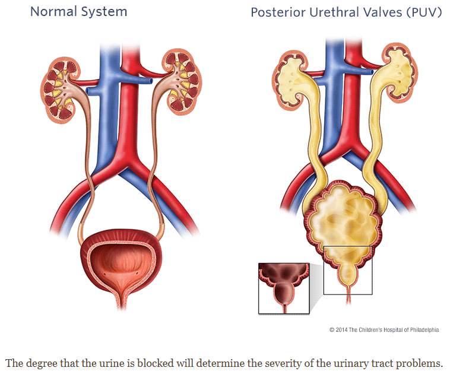
3.2.20 Selitä lyhyesti: Omfaloseele
Omfaloseele (napanuoratyrä) on vatsaontelon synnynnäinen sulkeutumishäiriö, missä suolistoa työntyy kroonisesti (hernioituu) napanuoraan. Suolea siis ympäröi peritoneumpussi (vrt. gastroskiisi, jossa ei suojaavaa kalvopussia). Normaalisti n. rvk 11 suolet palaavat vatsaonteloon, mutta omfaloseelessä suolet jäävät vatsaontelon ulkopuolelle.
Tyrän laajuus vaihtelee suuresti, ulos voi työntyä vain muutama suolenmutka tai sitten lähes koko suolisto ja osa maksaakin. Napanuoratyrään liittyy lähes puolissa tapauksista pään, kasvojen ja sydämen epämuodostumia sekä kromosomianomalioita.
Diagnoosi tehdään tavallisesti raskauden aikana ultraäänellä.
Hoito on kirurginen ja ennuste isoloiduissa tapauksissa hyvä, jos kirurgiaan päästään varhain. Esiintyvyydeksi on arvioitu 1/8500 syntyvää lasta.
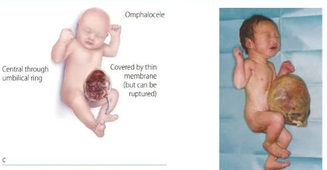
3.2.21 Selitä lyhyesti: Spondylolisteesi
Spondylolisteesi tarkoittaa nikamansiirtymää, ja se johtuu tyypillisesti spondylolyysistä lapsilla ja nuorilla
Lapsilla yleisimpiä selkäkivun aiheuttajia ovat rasitusmuutokset varsinkin urheilullisesti aktiivisilla nuorilla ja nämä ovat kehityksellisellä jatkumolla: rasitusosteopatia -> spondylolyysi (yleensä pars interarticulariksen rasitusmurtuma; nikamanhöltymä) -> spondylolisteesi (siirtymä). Tyypillisesti nämä esiintyvät L5-nikamassa.
Spondylolyysin ja spondylolisteesin yleisimpiä oireita nuorilla ovat selkäkipu ja kireät takareidet (harmstring-kireys).
Rasitusosteopatiassa useimmat lapset palaavat oireettomina entiseen lajiharrastukseensa. Todennäköisesti kuitenkin osassa tapauksista kehittyy spondylolyysi ja näistä osalle kehittyy spondylolisteesi. Jos etenee rasitusmurtumaksi: liikuntakielto 4 kk:n ajan.
Spondylolisteesissä oireilevan nuoren nikamasiirtymää seurataan lannerangan sivukuvalla puolen vuoden välein ja häntä kielletään rasittamasta selkää. Luudutusleikkaus on aiheellinen, jos selkä oireilee toistuvasti tai siirtymä on suurempi kuin ⅓ siirtyneen nikaman syvyydestä.
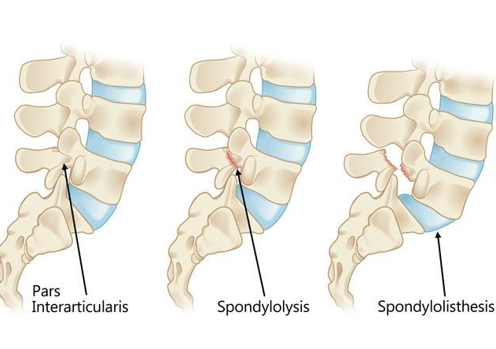
3.2.22 Selitä lyhyesti: Venekallo
Yleisin kraniosynostoosi eli kallon sauman ennenaikainen luutuminen on lakisauman (sagittaalisauma) ennenaikainen luutuminen. Tällöin kallo ei pysty kasvamaan leveyssuunnassa, vaan siitä tulee pitkä ja kapea, samalla otsa tulee prominentiksi ja kasvaa sekä eteenpäin että leveyssuunnassa, eli muodostuu niin sanottu venekallo. Kallo kapenee niskaan päin. Tämä on siis päinvastaista normaaliin kallon muotoon nähden, jossa otsa on kapeampi tai saman levyinen kallon takaosan kanssa. Sivuprofiilissa venekallon korkein kohta on etuaukileen tasolla ja profiili laskeutuu takaraivoa kohti.
Otsan massiivisuus korostuu ensimmäisen ikävuoden aikana, koska synostoosin vuoksi aivot työntyvät eteenpäin saadakseen lisää tilaa. Takaraivo muodostuu usein suipoksi, koska osa aivojen kasvusta suuntautuu tilanpuutteen vuoksi myös taakse alaviistoon.
Kraniosynostoosit aiheuttaa kallon muotovirheen lisäksi usein myös muita ongelmia, kuten kuuroutta, sokeutta, puheen ja oppimisen viivästymistä sekä sydän- ja keuhko-ongelmia. Otsasauma eli metooppinen (frontaalinen) sauma on kallon saumoista ainoa, joka saa olla sulkeutunut lapsen syntyessä. Aiheuttaa ns. metooppisen harjanteen, joka on harmiton.
Koronaarisauman, sagittaalisauman tai lambdasauman enneaikaiseen luutumiseen liittyvä progressiivinen kallon muodon poikkeavuus edellyttää plastiikkakirurgista konsultaatiota. Kraniosynostoosit hoidetaan leikkauksella. Koska leikkausikä vaikuttaa kirurgisen menetelmän valintaan, potilas olisi hyvä saada arvioon jo ensimmäisten elinkuukausien aikana.
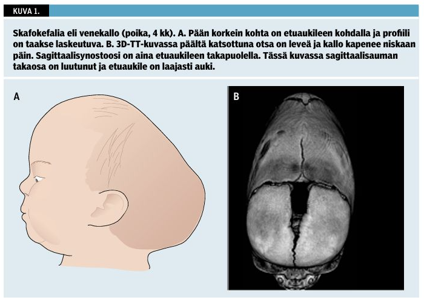
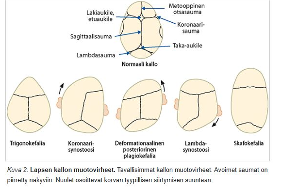
3.2.23 Selitä lyhyesti: Scheuermannin tauti
Kasvun muodostaman kyfoosin yleisin muoto on Scheuermannin tauti (morbus Scheuermann), jossa selkärangan nikamasolmu (corpus) kasvaa poikkeavasti. Scheuermannin tauti ilmenee kasvun loppuvaiheessa tyypillisimmin rintarangan alaosassa.
Tauti on osittain periytyvä, ja se on neljä kertaa yleisempi miehillä kuin naisilla. Ilmaantuvuuden arvellaan olevan noin 1–5 %.
Sairauden varsinaista etiologiaa ei tunneta, mutta kyseessä on osteokondrooseihin luokiteltava kasvuhäiriö nikaman päätelevyn kasvurustossa ennen sen luutumista, joka tytöillä tapahtuu 13–15 ikävuoden ja pojilla 15–17 ikävuoden välillä. Tautia ei juuri esiinny alle 10-vuotiailla. Kompression seurauksena nikaman etuosan kehitys hidastuu. Nikama muuttuu kiilamaiseksi, mikä useampien nikamien kasvuhäiriön myötä johtaa rintarangan hyperkyfoosiin. Bradfordin mukaan Scheuermannin taudin kriteerit ovat:
Useimmilla lapsilla ei ole mitään oireita. Mahdollisina oireina voi kasvuikäisillä esiintyä kipua rintarangan, mutta myös lannerangan alueella, jäykkyyttä selän liikkeissä ja kireyttä hamstring-lihaksissa.
Kivun etiologia on epäselvä, mutta sen ajatellaan liittyvän sagittaalisen tasapainon säilyttämiseen. Hyperkyfoosin seurauksena yläruumis taipuu eteenpäin, jolloin selkärangan posterioriset lihakset aktivoituvat ja lisäävät kompensatorisesti lannerangan lordoosia. Selkälihasten jatkuva aktivaatio aiheuttaa niiden väsymistä ja kipeytymistä. Lisäksi hyperlordoosi saattaa kuormittaa fasettiniveliä ja lisätä kipua. Etutaivutustestissä tyypillinen löydös on niin sanottu round back – korostunut köyryselkä. Potilaita häiritsevätkin tyypillisimmin kipu ja kosmeettinen haitta.
Ensisijainen ja lähes aina tarvittava diagnostinen kuvantamismenetelmä on natiiviröntgenkuva rinta- ja lannerangasta tai koko rangan käsittävä tasapainokuva. TT ja MRI näyttävät nikamien muodon sekä pääte- ja välilevyjen muutokset tarkemmin, mutta ne eivät ole välttämättömiä, ellei potilaalla ole selkäytimen tai hermojuurien ahtaumaan sopivia oireita tai ellei potilaalle suunnitella leikkaushoitoa.
Sairastuneet nikamat ovat radiologisesti kiilamaisia ja päätelevyt epämuotoisia. Nikamasolmut ovat usein myös tavallista hieman pidempiä. Myöhemmässä vaiheessa Schmorlin prolapsit (= päätelevyn painaumat nikamakorpukseen); eivät ole spesifisiä taudille.
Erotusdiagnoosi: tuberkuloosi, murtumat, tuumorit
Taudin pitkäaikaisennuste on hyvä, joskin vaikeaan (> 100°) kyfoosiin on kuvattu liittyvän selkäytimen ja keuhkojen toimintahäiriön riski, jotka lisäävät morbiditeettia huomattavasti. Potilaat säilyttävät normaalisti toiminta- ja työkykynsä. Hoito on siksi ensisijaisesti konservatiivinen.
On epäselvää, voidaanko kyfoosin etenemistä kasvun aikana hidastaa ekstensiotukiliivillä tai selän ojennusharjoituksilla. Mikäli selkä on erittäin kipeä ja tauti on alkanut kehittyä äkillisesti, voidaan joutua turvautumaan muutaman viikon vuodelepoon ja sen jälkeiseen tukikorsettihoitoon. Hitaasti kehittyvässä taudin kuvassa erityistä hoitoa ei tarvita. Raskasta fyysistä kuormitusta, kuten painonnostoa, pitäisi välttää kasvun loppuun asti. Korsettihoidon indikaationa pidetään yli 60 asteen kyfoosia kasvavalla lapsella. Korsettihoito on sitä tehokkaampi, mitä nuorempi potilas on ja mitä myötäävämpi selkä on. Leikkausta voidaan miettiä mm. > 75 asteessa tai kun on merkittäviä kipuja tai neurologisia puutosoireita. Ennen leikkaushoitoa varmistetaan kasvun päättyminen, koska kasvun jatkuminen vielä fuusioleikkauksen jälkeen voi altistaa junktionaaliselle kyfoosille (muodostuu selkäinstrumentin yläpuolelle luudutusalueen yläpuolisiin nikamaväleihin)
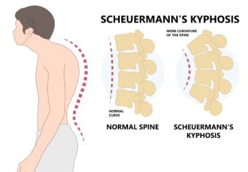
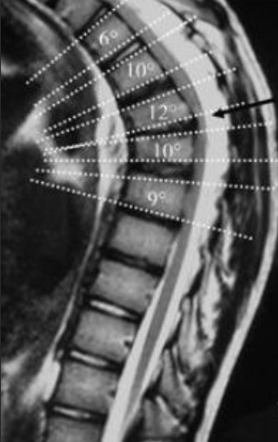
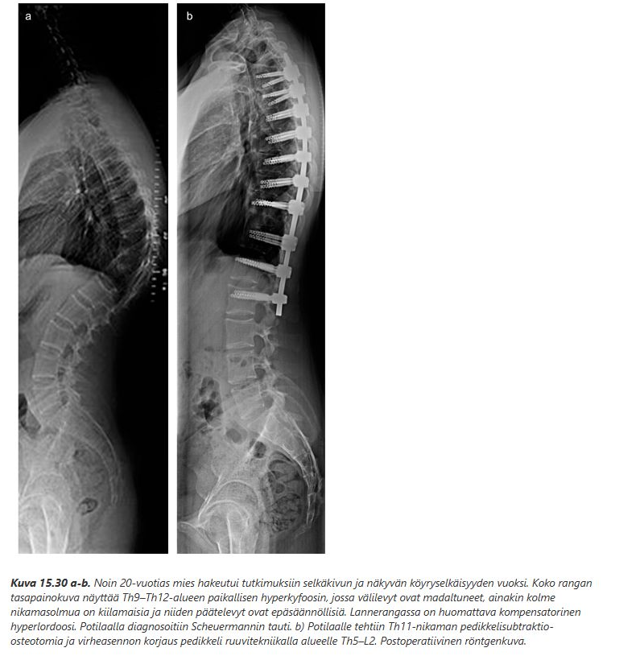
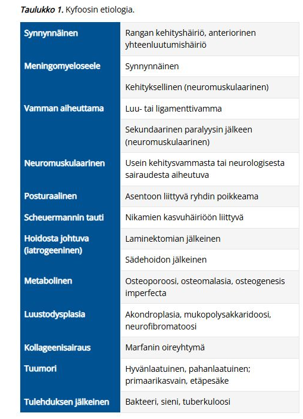
3.2.24 Selitä lyhyesti - Meningomyeloseele
Hermostoputken kaudaalisen (distaalisen) pään sulkeutumishäiriöt aiheuttavat selkärankahalkion (spina bifida). Hermostoputken sulkeutumishäiriöt syntyvät raskausviikolla 3-4 (päivät 18-28) tapahtuvan neurulaation häiriöstä. Riskitekijöitä ovat mm. riittämätön foolihapon eli B9-vitamiinin saanti, perimä, äidin diabetes ja tietyt lääkkeet (esim. valproaatti ja karbamatsepiini)
Spina bidifa on siis yleistermi hermoston putken kaudaalipään sulkeutumishäiriöille; ovat selvästi yleisempiä kuin proksimaalipään sulkeutumishäiriöt. Spina bifida voidaan vielä jakaa eri tyyppeihin:
- Yleensä nämä korjataan leikkauksella mahdollisimman pian syntymisen jälkeen.
- Hydrokefalus alkaa kehittyä tyypillisesti muutamia päiviä selkäaukileen sulun jälkeen, ja se hoidetaan yleensä aivokammiosta vatsaonteloon johdetulla (ventrikuloperitoneaalisella) suntilla tavallisimmin kolmen kuukauden ikään mennessä. Hydrokefalus kehittyy 85–90 %:lle lapsista, joilla on MMC. Hydrokefalus on sitä todennäköisempi, mitä ylempänä selkäytimen vaurio on. Yksi hydrokefalukseen johtavista syistä on Arnold–Chiarin tyypin II rakennepoikkeavuus, jossa aivojen takakuoppa on ahdas, pikkuaivot ovat dysplastiset ja ulottuvat niska-aukon (foramen magnum) alapuolelle, neljäs aivokammio on kapea ja ulottuu yleensä foramen magnumin tasolle ja aivorunko, ydinjatke sekä kaulaydin ovat siirtyneet alaspäin ja muodostavat noin 70 %:ssa tapauksista poikkeavan mutkan ydinjatkeen ja selkäytimen rajalle
- Meningomyeloseeleen liittyy myös monia muita poikkeavuuksia, kuten syringomyelia eli nestemäisten kystien muodostuminen selkäytimeen. Syringomyeliaa ilmenee itsekseenkin ja moniin muihinkin ongelmiin liittyen, ei ole spesifiä MMC:lle.
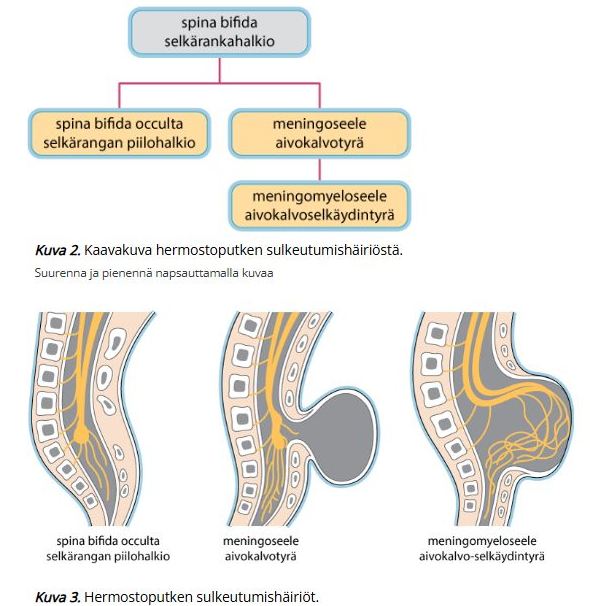
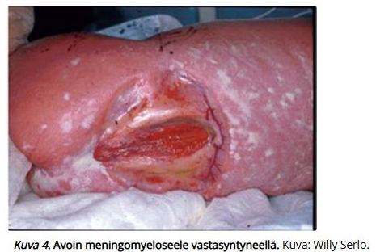
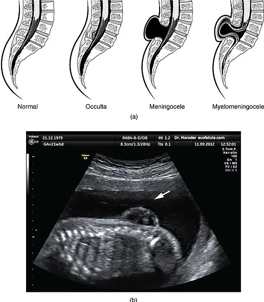
3.2.25 Akuutti scrotum: yleisin aiheuttaja, erotusdg, miksi on kiire, mikä on blue dot sign?
Akuutin kiveskivun aiheuttajia ovat kiveksen kiertymä, kiveslisäkkeen kiertymä, kuroutunut nivustyrä, trauma ja lisäkiveksen tulehdus. Yleisimmät kaksi näistä ovat kiveslisäkkeen kiertymä ja lisäkiveksen tulehdus, mutta kiveksen kiertymä on aina syytä pystyä poissulkemaan. Syyltään epäselväksi jäänyt akuutti kivespussin kipu on kiireellisen leikkausarvion aihe – pääasiassa juuri kiveskiertymän takia.
Kiveksen kiertymä esiintyy tyypillisimmillään vastasyntyneisyyskaudella tai murrosiän käynnistyttyä, mutta voi esiintyä missä iässä tahansa. Aiemmat samankaltaiset kiveskivut eivät sulje pois kiveksen kiertymää, sillä osalla potilaista esiintyy aiempia kipukohtauksia, jotka viittaavat mahdollisesti jaksoittaiseen kiveskiertymään. Kiveskiertymä ilmenee yleensä äkillisenä kiveskipuna, arkoina ja ylös vetäytyneinä kiveksinä ja cremaster-heijasteen puuttumisena. Tehdään välittömästi päivystyslähete yksikköön jossa kirurginen eksploraatio mahdollista; doppler-UÄ voi varmistaa torsion diagnoosin, mutta niiden suorittamiseen ei aina ole aikaa, sillä kiveksen kuolion vaara lisääntyy nopeasti ajan kuluessa. Kaikukuvaus voi myös osoittaa verenkiertoa kiveksessä vielä kiertymän alkuvaiheessa eikä ole kiertymän suhteen täysin luotettava tutkimus. Kiveskiertymä voi johtaa kiveksen hemorragiseen infarktiin. Ensiapuna kiveksen kiertymään voi manipulaatiolla yrittää purkaa torsiota kiertämällä kivestä ulospäin. Leikkaus tehdään kuitenkin mahdollisimman pian, viiden tunnin kuluessa, oireiden alkamisesta ja useimmiten kivespussin keskiviivaan tehdystä viillosta. Kiertynyt kives palautetaan oikeaan asentoon ja kiinnitetään. Koska taustalla oleva poikkeavuus saattaa olla molemminpuolinen, on tarkistettava ja kiinnitettävä myös toinen kives. Kuoliossa oleva kives poistetaan. Jos osoittautuukin, että kyseessä on kiveksen lisäkkeen kiertymä, riittää pelkkä lisäkkeen poisto eikä toista kivestä tarvitse paljastaa. Joissakin tapauksissa kiveksen kiertymä menee ohi spontaanisti tai kivespussin tutkimuksen yhteydessä. Näissäkin tapauksissa kiinnitysleikkaus on myöhemmin aiheellinen.
Kiveslisäkkeen kiertymässä kiveksen ja lisäkiveksen vieressä tuntuu aristava nappula, joka voi myös sinertää ihon läpi (blue dot sign). Kiveslisäkkeen kiertymä ei välttämättä tarvitse leikkausta. Usein päädytään leikkaukseen epäselvän diagnostiikan takia ja toisaalta voimakkaat kivut paranevat nopeasti leikkauksella.
Lisäkiveksen tulehdus voi pienillä pojilla johtua virtsatietulehduksesta, mutta myös manipulaatiot kuten esim. katetrointi voi altistaa lisäkivestulehdukselle. Aina lisäkivestulehdukseen ei liity bakteeri-infektiota vaan kyseessä on niin sanottu aseptinen/steriili tulehdusreaktio. Useimmiten kuitenkin syy epäselväksi ja potilas saa usein antibioottikuurin, vaikka tulehduskipulääke voisi olla riittävä. Paikallinen kipu alkaa yleensä vähitellen voimistuvana, mutta joskus kipu voi alkaa akuutisti, jolloin erotusdiagnostiikka kiveksen kiertymän suhteen voi olla hankalaa. Turvotuksen lisääntyessä rakenteiden erottaminen toisistaan palpoiden voi olla mahdotonta, ja myöhemmässä vaiheessa palpaatiolöydös voi olla samankaltainen kuin kiveksen pahanlaatuisissa kasvaimissa. Sairaan puolen kivespussi on turvonnut, kuumottava ja punoittava. Yleisoireena kuumeilu on tavallista. Usein tulehdus leviää kivekseen (epididymo-orkiitti) ja voi aiheuttaa absessimuodostusta. Kivespussin ultraäänitutkimus selkeyttää diagnostiikkaa epäselvissä tapauksissa ja paljastaa mahdolliset leikkaushoitoa vaativat absessit. Positiiviset viljelytulokset virtsasta tukevat diagnoosia. Klamydia- ja gonokokkimääritykset on myös syytä tehdä (nuorilla ja aikuisilla klamydia- tai gonokokkitartunta on yleinen taudin aiheuttaja)
Idiopaattisessa kivespussin turvotuksessa molemmat kivespussit turpoavat, mutta tilaan ei liity voimakasta kipua. Idiopaattinen kivespussin tulehdus paranee itsestään.
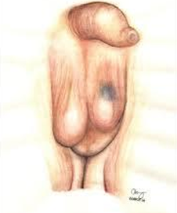
3.2.26 Alaraajojen pituusero: diagnoosit? tutkimukset? hoidot?
Alaraajojen pituusero on suhteellisen yleistä (arviolta 60–90 prosentilla ihmisistä esiintyy alaraajoissa pituuseroa.) ja sen tutkimisessa kliinisesti voidaan käyttää jalkojen pituuden arviota makuuasennossa tai optimaalisempi tapa on puupalikoilla (asetetaan palikkoja jalan alle, kunnes lantio on suorassa) Alaraajojen pituuseroa voidaan tutkia ja määrittää myös radiologisesti potilaan seistessä. Tämä on tarkin tapa; yleisin radiologinen kuvantamismenetelmä on röntgenkuvaus, jossa mitataan sääri- ja reisiluiden pituudet erikseen sekä alaraajan pituus kokonaisuutena – ei kylläkään aina tarvita.
On myös tärkeää arvioida kävelyä ja ryhtiä (etsi ontumista, kompensoivaa varvaskävelyä tai polven koukistusta, tutki selkä skolioosin varalta jalkojen pituuseron korjaamisen jälkeen).
Lapsen ja nuoren alaraajojen pituuseron erotusdiagnostiikka jaetaan rakenteellisiin ja toiminnallisiin syihin.
Rakenteellisia ovat mm. idiopaattinen pituusero (mahdollisesti perinnöllisiä tekijöitä), kehityshäiriöt (esim. synnynnäinen lonkkaluksaatio, kampurajalka…) tai geneettisistä syistä toisen puolen ylikasvu. Hankinnaisia syitä ovat mm. traumat (kasvulevyyn ulottuva murtuma voi pysäyttää pituuskasvun tai esim. erityisesti reisiluun varren murtuma voi vastoin stimuloida luun pituuskasvua) ja infektiot (osteomyeliitti/septinen artriitti voivat vaurioittaa kasvulevyä).
Toiminnallisia syitä ovat mm. neuromuskulaariset sairaudet (esim. CP-vammasta johtuva toisen puolen spastisiteetti ja kontraktuurat), skolioosi (vaikea selkärangan ryhtivirhe voi vetää lantion vinoon) ja nivelongelmat, kuten länkisäärisyys ja pihtipolvisuus tai polvien yliojentuminen.
Pituuseroon tulee kiinnittää huomioita viimeistään siinä vaiheessa, jos sen arvioidaan aiheuttavan ongelmia. Lapsilla alaraajojen pituusero muuten terveellä lapsella on yleistä ja hoito vaihtelee eron vaikeusasteen (ja tietysti aiheuttajan) mukaan:
3.2.27 Laskeutumaton kives (testisretentio): mihin asti voi seurata, milloin lähete, mihin mennessä tulisi tehdä leikkaus
Voi seurata 6kk ikään asti, jolloin tehdään myös lähete. Leikkaus tehdään 12kk ikään mennessä.
Kivekset laskeutuvat vatsaontelosta kivespussiin yleensä raskausviikoilla 28–32. Laskeutumaton kives todetaan noin 2 %:lla täysiaikaisista vastasyntyneistä ja keskosilla tila on huomattavasti yleisempi.
Kivesten tutkimus kannattaa tehdä lämpimin sormin pojan maatessa selällään tai istuessa räätälinasennossa vanhemman sylissä. Ennen palpaatiota on tärkeää ihan visuaalisesti arvioida tilannetta. Esim. saltans saattaa näkyä ennen koskemista ja paeta sitten ylemmäs. Tutkimuksessa kiinnitetään huomiota myös kivespussien kehittymiseen ja symmetrisyyteen. Jos kivespussit ovat asymmetriset, niin se puhuu siitä, että laskeutumaton kives ole viettänyt paljoa aikaa toisessa kivespussissa.
Kiveksen varovaisella “lypsämisellä” tai vetämisellä alaspäin on keskeinen rooli laskeutumattoman kiveksen diagnoosin tekemisessä
Jollei kives ole lypsettävissä kivespussiin tai palpaatiolla toista/molempia kiveksiä löydy kuuden kuukauden ikään mennessä, on lastenkirurgin konsultaatio aiheellinen. Jos vastasyntyneellä ei löydy kumpaakaan kivestä ja penis on poikkeava, on syytä tehdä epäselvän sukupuolen selvittelyt.
3.2.28 N. 10v lapsen rtg. Mikä murtuma? Miten hoidat (kipsi, repositio + kipsi, leikkaussaliin)?
Ei esimerkkikuvaa wikissä, mutta tekstin perusteella valitsin sopivan kuvan tähän tarkasteltavaksi.
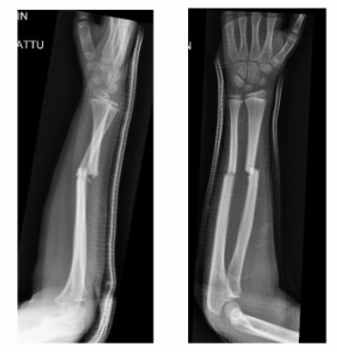
Kyseessä antebracchiummurtuma eli sekä radius että ulna ovat murtuneet. Yleensä antebrachium-murtumalla viitataan ulnan ja radiuksen distaalipäiden samanaikaiseen murtumaan (vain PSU:n murtuma esim. Collesin murtuman yhteydessä ei yleensä lasketa antebrachium-murtumaksi).
Värttinä- ja kyynärluun diafyysimurtumien repositiokriteerit ja leikkausindikaatiot riippuvat lapsen iästä. Remodellaatiopotentiaali on diafyysialueella vähäinen.
Yli 10-vuotiailla dislokoituneen kyynärvarren diafyysimurtuman hyvään asentoon luutuminen on syytä pääsääntöisesti varmistaa kiinnittämällä murtuma operatiivisesti, useimmiten taipuisilla ydinnauloilla (yleisin). Leikkaushoito on perusteltua myös tätä nuoremmilla lapsilla jos suljettu asennon korjaus/retentio ei onnistu.
3.2.29 Meckelin divertikkelin tyypillisin oire?
- Verenvuoto
- Ripuli
- Ummetus
aMeckelin divertikkelin aiheuttamat ongelmat/oireet ovat yleisyysjärjestyksessä.
- Divertikkelissä voi olla heterotrooppista mahalaukun (tai haiman) limakalvoa (kyseessä siis koristooma), jonka tuottamat hapot ärsyttää suolta ja voi aiheuttaa vuotavan haavauman
Meckelin divertikkeli on sikiöaikaisen omfalomesenteerisen tiehyen jäänne, joka sijaitsee suoliliepeen vastakkaisella puolella sykkyräsuolen alueella usein lähellä ileokekaalikulmaa. Kyseessä on ns. “todellinen” divertikkeli eli kaikki kolme suolen seinämän kerrosta pullistuvat. Vaikka esiintyvyys väestössä on noin 2 %, vain pieni osa näistä oireilee.
Useimmiten Meckelin divertikkeli todetaan sattumalöydöksenä muun toimenpiteen yhteydessä. Jos etsitään divertikkeliä ihan oireiden perusteella, niin usein diagnostisesti (ja samalla hoidollisesti) tehdään laparoskopia. Aikaisemmin on käytetty isotooppikuvantamista (teknetium-99m-perteknetaatti-Meckel scan), mutta tästä on pitkälti huonon herkkyyden vuoksi luovuttu (herkkyys n. 70-85%, spesifisyys 90%)
Hoitona kirurginen resektio. Oireettomia ei tarvitse poistaa.
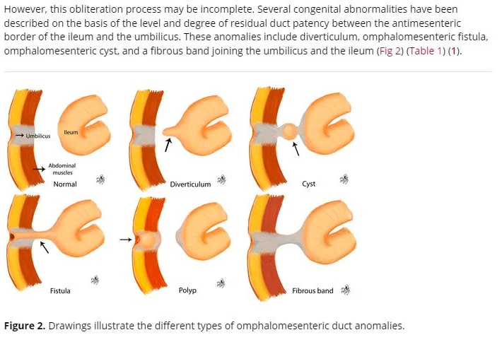
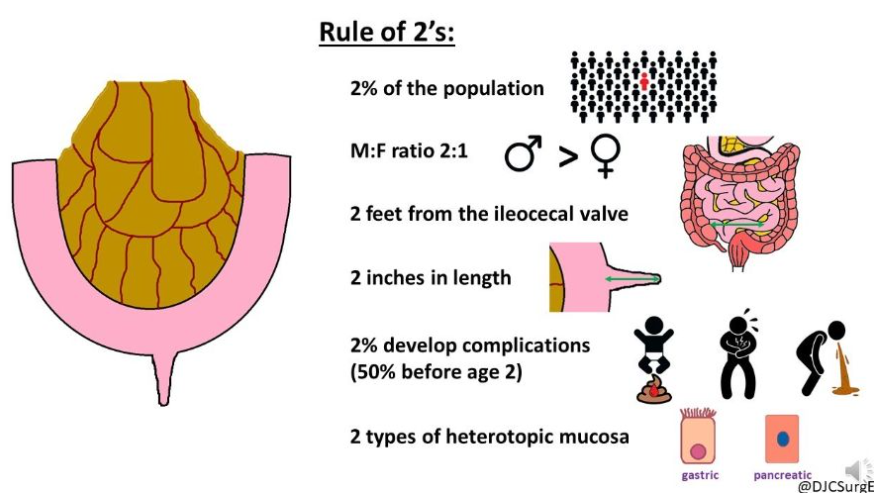
3.2.30 12-vuotias poika kaatunut jalkapalloillessa, liitteenä lonkan rtg, mikä diagnoosi ja hoito?
Ei esimerkkikuvaa, joten vaikeaa vastata järkevästi. Mikä olisi näistä pelkästään tehtävänannon anamneesin perusteella todennäköisin?
- Epifyseolyysi ja leikkausjonoon
- Septinen artriitti
- Perthesin tauti
- Lonkkamurtuma
aPelkästään anamneesin ja iän perusteella todennäköisin vaihtoehto on epifyseolyysi (Slipped Capital Femoral Epiphysis / SCFE). Tyypillinen potilas on (10-)11–16-vuotias lapsi, jonka kasvulevy (epifyysilinja) on tässä iässä hormonitoiminnan ja nopean kasvun seurauksena mekaanisesti heikommassa tilassa. Pojilla tauti on n. 2 kertaa yleisempi kuin tytöillä. Ylipaino on tärkein yksittäinen altistava tekijä, mutta epifyseolyysi voi myös liittyä endokrinologisiin sairauksiin, kuten kasvu- tai muiden aivolisäkehormonien sekä kilpirauhashormonin vajauksiin. Tarvittaessa konsultoidaan lastenlääkäriä.
Oire voi alkaa akuutisti tai useammin vähitellen. Lieviä oireita esiintyy tavallisesti usean viikon tai kuukauden ajan. Epifyseolyysin tyyppioire on ontuminen, joka on usein jatkunut pitkään ennen hoitoon hakeutumista. Potilas pitää raajaa ulkokierrossa (tai tutkijan koukistaessa lonkkaa jalka kääntyy ulkokiertoon). Akuutissa taudinkuvassa kipu alkaa äkillisesti eikä potilas välttämättä pysty varaamaan raajalle ollenkaan. Potilas voi paikallistaa kivun nivuseen, reiteen tai polveen. Lonkan sisäkierto, loitonnus ja koukistus ovat rajoittuneet.
Diagnoosi perustuu rtg-kuvaan. Siirtymä näkyy usein selvimmin Lauensteinin projektiossa (sivukuva), joka tulee aina ottaa. Etusuunnan kuvassa niin sanottu Kleinin linja (reisiluun kaulan yläreunaa pitkin vedetty linja) ei osu epifyysiin. Sivusuunnan kuvassa siirtymä näkyy selvemmin. Röntgenkuva tulee ottaa aina päivystyksellisesti, jos yli 10-vuotiaalla on ontumista aiheuttava lonkan tai polven kipu.
Tilanne vastaa reisiluun kaulan murtumaa: potilas lähetetään päivystyksellisesti lastenortopediseen yksikköön. Potilaalle annetaan kyynärsauvat ja häntä ohjeistetaan olemaan varaamatta kipeälle raajalle. Hoito on aina kirurginen: ensisijaisesti liukuman sulkeinen paikalleen asetus ja ruuvikiinnitys.
b: Septinen infektio olisi useimmiten kuumeinen ja antaisi toksisen yleiskuvan. Vammatausta voisi kylläkin olla, mutta ei tällä anamneesilla herää vahvaa epäilyä.
c: Perthesin tauti (reisiluun pään aseptinen nekroosi) on nuorempien lasten sairaus. Sen tyypillisin ilmenemisikä on 4–8 vuotta. Lisäksi oireilu on hiipivää ja pitkäaikaista, ei akuutti kaatumisen seuraus.
d: Varsinainen reisiluun kaulan murtuma vaatii suurienergiaisen vamman (esim. korkealta putoaminen tai liikenneonnettomuus) ja on harvinainen lapsella ilman taustasairautta. Lapsen lonkan urheiluvammassa useammin pettää nimenomaan kasvulevy, ei itse luu.
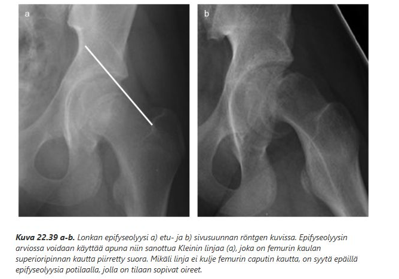
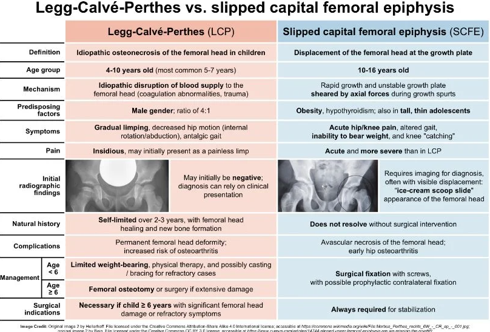
3.2.31 Invaginaation hoito
- seuranta
- leikkaus
- ilmarepositio
cMikäli ei kliinisesti ole epäilyä suolen puhkeamisesta, pyritään ileokoolinen invaginaatio hoitamaan ensisijaisesti ilma- tai varjoainerepositiolla peräaukon kautta, jossa kevyellä paineella läpivalokontrollissa pyritään työntämään invaginoitunut suoli takaisin paikoilleen. “Air enema”:ssa; ilmaa syötetään suolistoon (paine alle 100 cmH2O) ja sen tarkoituksena on työntää invaginoitunut suoli paikalleen; sama idea varjoaineella (varjoaine ainakin TYKS:ssä käytetympi).
Mikäli tämä ei onnistu tai epäillään perforaatiota (peritoniittioireet), pitää invaginaatio hoitaa leikkauksella. Leikkauksessa useimmiten riittää käsin tehty suolen repositio eikä suolen osan poistoa tarvita yleensä, ellei todeta patologista syytä invaginaatiolle.
Sairaalaseurantaa tarvitaan toimenpiteiden jälkeen siihen saakka, kunnes syöminen alkaa sujua ja kivut ovat hallinnassa. Perheitä on hyvä informoida noin 5 %:n uusimisriskistä.
Suolentuppeumassa (intussusseptio, invaginaatio) suolta työntyy toisen suolenosan sisään. Tyypillisesti tämä tapahtuu ileokekaalikulmassa, jolloin ohutsuolen loppuosa invaginoituu nousevaan paksusuoleen.
Invaginaation tyyppi-ikä on 6–18 kuukautta, ja tauti on yleisempi pojilla kuin tytöillä.
Suurin osa (yli 3/4) tapauksista on idiopaattisia, mutta toisinaan aiheuttajana voi olla poikkeava rakenne (lead point) kuten Meckelin divertikkeli tai polyyppi.
Suolentuppeuma aiheuttaa tyypillisesti erittäin voimakkaita, koliikkimaisia (aaltomaisia) vatsakipuja. Taudin edetessä oirekuvaan liittyy usein myös oksentelua ja suolen limakalvovaurion aiheuttamana verilimaisia ulosteita. Jos lapsi antaa tutkia vatsaa, voi invaginaatiokohta tuntua vatsan palpaatiossa makkaramaisena kyhmynä. Tuseerattaessa ampulla on aina tyhjä ulosteesta, mutta siellä voi olla vähän ”punaviinimarjamehua”.
Lapsi, jolla epäillään invaginaatiota, pitää lähettää välittömästi sairaalaan. Diagnoosi tehdään vatsan ultraäänitutkimuksella.
3.2.32 Lasten sormimurtumissa
- rotaatiovirheen korjaa kasvu
- UCL-vamma näkyy röntgenissä avulsiomurtumana
- Kynsipedin vammoja ei tarvitse korjata
- Kynsipedin vammoissa röntgentutkimus on turha
bLapsilla ja kasvuikäisillä nivelsiteet (kuten peukalon MCP-nivelen kyynärsyrjän puoleinen kollateraaliligamentti eli UCL, ulnar collateral ligament) ovat usein mekaanisesti vahvempia kuin niiden luukiinnityskohdat tai kasvulinjat. Tämän vuoksi ligamenttivamma ilmenee lapsella erittäin usein avulsiomurtumana, jossa kireälle joutunut nivelside repäisee pienen luupalan irti sormiluun tyvestä. Tämä irtonainen luukappale näkyy selvästi natiiviröntgenkuvassa.
Peukalon MP-nivelen UCL-vamma syntyy abdusoivan voiman vaikutuksesta eli tyypillisesti peukalon vääntyessä radiaalisesti esim. kaaduttaessa. Vanha nimi oli gamekeeper’s thumb (Nimensä se sai skotlantilaisista metsästäjistä, jotka lopettivat jäniseläimet asettamalla niskan peukalonhankaan ja nykäisemällä eläimen jaloista, jolloin tapahtui äkillinen kranioservikaalinen dislokaatio. MCP I -niveleen kohdistui näin voimakas hyperabduktio). Nykyään huomattavasti yleisempi syntymekanismi on kaatuminen hiihtäessä, joten nimitykseksi on vakiintunut hiihtäjän peukalo eli “skier’s thumb”.
Hoidetaan neljän viikon ajan kipsillä, jos nivel on tukeva ja avulsiokappaleessa on alle 2 mm verran siirtymää.
a: Lasten luuston muovautuminen pystyy korjaamaan merkittäviäkin kulmavirheitä nivelen liiketasossa, mutta kasvu ei korjaa rotaatiovirhettä lainkaan. Rotaatiovirhe arvioidaan kliinisesti (laitetaan käsi nyrkkiin ja katsotaan risteävätkö sormet), koska se ei näy rtg-kuvasta. Pienikin rotaatiovirhe on aina reponoitava anatomisesti oikeaan asentoon.
c: Kynsipedin repeämät ja vauriot täytyy korjata ja ommella huolellisesti (ohulla resorboituvalla langalla), jotta kynsipeti paranee tasaisesti ja vältytään kynnen pysyviltä kasvuhäiriöiltä (esim. kynnen halkeaminen tai epämuodostuma).
d: Röntgentutkimus on ehdottoman tärkeä ja rutiininomainen, sillä kynsipedin repeämään liittyy erittäin usein kärkijäsenen (phalanx distalis) murtuma (esim. Seymouren murtuma, joka on vain lapsilla esiintyvä kärkijäsenen kasvulinjan myötä kulkeva murtuma, joka aiheuttaa kynsivamman ja kynsipedin rikkoutumisen. Kynsipedin vaurio tekee kärkijäsenen murtumasta avomurtuman, joka vaatii perusteellisen puhdistuksen, murtuman reponoinnin ja usein infektioprofylaksin (antibiootin). Kynnen tyvi palautetaan paikalleen kynsitaskuun sekä kiinnitetään sulavin ompelein (onnistuu etenkin isommilla lapsilla usein johtopuudutuksessa). Hoitamatta jättäminen (vammaa ei tunnisteta avomurtumaksi) voi johtaa osteomyeliittiin.
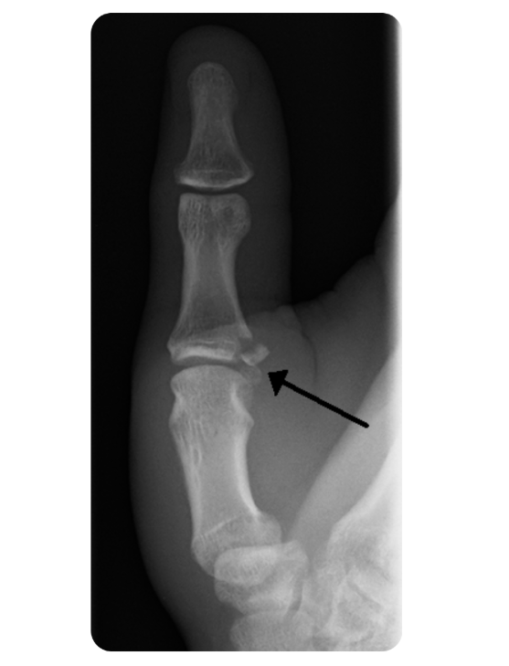
3.2.33 2 vuoden ikäinen aiemmin terve lapsi, verisiä ulosteita 2 päivän ajan, Hb ~70, todennäköisin syy?
- Meckelin divertikkeli
- gastroenteriitti
- peräpukamat
- ulkus
aMeckelin divertikkelin aiheuttamat ongelmat/oireet ovat yleisyysjärjestyksessä.
- Divertikkelissä voi olla heterotrooppista mahalaukun (tai haiman) limakalvoa (kyseessä siis koristooma), jonka tuottamat hapot ärsyttää suolta ja voi aiheuttaa vuotavan haavauman
Meckelin divertikkeli on sikiöaikaisen omfalomesenteerisen tiehyen jäänne, joka sijaitsee suoliliepeen vastakkaisella puolella sykkyräsuolen alueella usein lähellä ileokekaalikulmaa. Kyseessä on ns. “todellinen” divertikkeli eli kaikki kolme suolen seinämän kerrosta pullistuvat. Vaikka esiintyvyys väestössä on noin 2 %, vain pieni osa näistä oireilee.
Useimmiten Meckelin divertikkeli todetaan sattumalöydöksenä muun toimenpiteen yhteydessä. Jos etsitään divertikkeliä ihan oireiden perusteella, niin usein diagnostisesti (ja samalla hoidollisesti) tehdään laparoskopia. Aikaisemmin on käytetty isotooppikuvantamista (teknetium-99m-perteknetaatti-Meckel scan), mutta tästä on pitkälti huonon herkkyyden vuoksi luovuttu (herkkyys n. 70-85%, spesifisyys 90%)
Hoitona kirurginen resektio. Oireettomia ei tarvitse poistaa.
b: Jos mukana olisi kuumetta, kovia vatsakipuja ja ripulia, niin voisi olla todennäköisempi. Pelkkä gastroenteriitti ei myöskään yleensä romahduta hemoglobiinia tasolle 70 g/l ilman vaikeaa yleistilan laskua tai toksisuutta.
c: Lapsilla ei oikein ilmene aikuistyyppisiä peräpukamia. Ne aiheuttaisivat aikuisillakin korkeintaan pientä, kirkasta veriviirua ulosteen pinnalla, eivät koskaan syvää anemiaa.
d: Ulkukset ovat äärimmäisen harvinaisia lapsilla.
3.2.34 Sääriluun distaalimurtuma, jalka retrocurvatum-asennossa, ei tuntoa jalkapohjassa, minkä hermon vaurio
- Suralis
- peroneus
- tibialis
- safenus
cN. tibialis kulkee säären takaosassa ja laskeutuu nilkkaan sisäkehräsen takaa jalkapohjaan. Se vastaa koko jalkapohjan tunnosta.
Sääriluun distaalimurtuman retrocurvatum-virheasento (taaksepäin kulmautuminen) venyttää, puristaa tai leikkaa suoraan sen takana kulkevia anatomisia rakenteita, mistä seuraa jalkapohjan tuntopuutos.
a: N. suralis vastaa jalkaterän ja kantapään lateraalisivun tunnosta
b: Jalkapöydän tunnosta vastaa pääasiassa n. peroneus superficialis ja 1. ja 2. varpaan välisen ihopoimun tunnosta vastaa n. peroneus profundus
d: N. saphenus vastaa tibian sisäkehräsen alueen tunnosta vastaa
3.2.35 Taapero nielaissut nappipariston 3h sitten, mitä teet päivystyksessä
- kotiutus
- annat ruokaa ja juomaa ja katsot, pystyykö niellä
- ravinnotta ja seuranta
- röntgen ja ravinnotta
dEtenkin pienet lapset nielevät usein vahingossa erilaisia vierasesineitä kuten kolikoita ja lelun osia. Vatsan puolelle ulottuvalla keuhkojen röntgenkuvalla pystytään varmistamaan, onko (röntgenpositiivinen) vierasesine ruokatorvessa vai jo pidemmällä ruuansulatuskanavassa.
Erityisen vaarallisia ovat nappiparistot ja (multippelit) magneetit:
Jos niellyn esineen tiedetään tai epäillään olevan elohopeaparisto, lapsi lähetetään välittömästi sairaalaan, jossa otetaan kuva ja paristo poistetaan endoskooppisesti.
Kaikki ruokatorveen kiinni jääneet esineet poistetaan lapsilta yleisanestesiassa tähystimen avulla enintään 24 tunnin kuluessa. Varsinkin nappiparisto kuitenkin poistetaan välittömästi. Toimenpide tehdään, vaikka lapsi ei olisi ollut ravinnotta ennen anestesiaa. Jos diagnoosiin päästään viiveellä, vasta yli 12 tuntia nielemisestä, tulee harkita jo kehittyneiden komplikaatioiden poissulkemiseksi kaulan ja rintakehän tietokonekerroskuvausta ennen tähystystä.
Jos vähäoireista lasta, jonka ruokatorvessa on (röntgenpositiivinen) vierasesine, on kuitenkin seurattu yön yli, kannattaa harkita uusintakuvausta ennen tähystystutkimusta sijainnin varmistamiseksi ja turhien toimenpiteiden välttämiseksi.
3.2.36 Humerusmurtuma, miten varmistat käden verenkierron?
- Punakka käsi
- Avomurtuma josta suihkuaa verta
- Sormet liikkuu
- Sormissa tunto tallella
aKoska murtuma sijaitsee aivan kyynärnivelen yläpuolella, siinä on riski, että luun terävät päät tai turvotus painavat alueen tärkeitä verisuonia tai hermoja. Varsinkin dislokoituneissa suprakondylaarisissa humerusmurtumissa voi tapahtua a. brachialiksen vaurio, jonka takia verenkiertostatus on aina tärkeää tehdä. Tyypin 3 murtumassa (dislokoitunut huomattavasti) jopa 10-20%:ssa tapauksista ei radialis-pulssi tunnu (pulseless hand).
Kuitenkin käsi on tästä huolimatta yleensä lämmin ja pinkki (kollateraalivirtaus on hyvää), kapillaaritäyttö ok -> pink pulseless hand, jolloin verisuonikorjausta ei yleensä tarvita, hoito on murtuman nopea reduktio ja seuranta. Jos kollateraalivirtaus ei kata perfuusiota ja käsi kylmä/kalpea/iskeeminen, niin verisuonikirurgia tarpeellista. Todellinen korjausta vaativa verisuonivamma vain 0.3%:lla.
Jos pulssi ei palaudu heti reponoinnin jälkeen, niin voidaan seurantaa yleensä jatkaa; lähes aina palautuu (harvoin voidaan tehdä tarkempia kuvantamisia).
3.2.37 Vatsakipu lapsella
- Vatsakipuisen lapsen tuseeraus ei yleensä tarpeellista
- Kiveksiä ei tarvitse tutkia
- Umpilisäkkeen tulehduksia ei ole alle 5-vuotiailla
- Umpilisäkkeen tulehduksessa crp ja leukosyytit yleensä normaalit
aTuseeraus aiheuttaa lapselle usein huomattavaa pelkoa ja kipua, ja se harvoin tuo juurikaan lisäarvoa diagnostiikkaan verrattuna muihin tutkimuksiin ja muuhun statukseen.
b: Kivekset on aina tutkittava akutisti vatsakipuiselta pojalta, koska kyseessä voi olla kiveksen kiertymä (kivestorsio), joka vaatii välitöntä leikkaushoitoa.
c: Umpilisäkkeen tulehdus on alle 5-vuotiailla harvinaisempi kuin vanhemmilla lapsilla, mutta sitä esiintyy myös pikkulapsilla ja imeväisillä
d: Umpilisäkkeen tulehduksessa tulehdusarvot (CRP ja leukosyytit) ovat yleensä koholla, tosin CRP-pitoisuus ei suurene taudin alkuvaiheessa, joten se on harvoin suuri, jos oireiden kesto on alle vuorokauden. Myöhemmin n. 1/100 aikuispotilaasta leuk ja CRP ovat normaalit vaikka appendisiitti ja n. 6/100 lapsista leuk ja CRP normaalit, koska lasten immunologia hieman erilainen kuin aikuisilla. Appendisiittipotilaan suuri CRP-pitoisuus voi ennustaa komplisoitunutta appendisiittia, mutta pieni CRP-pitoisuus ei poissulje taudin mahdollisuutta. Mitään selvää erotusdiagnostista CRP:n raja-arvoa ei ole todettu.
3.2.38 Päivystyksessä 1v aaltomaista kovaa vatsakipua ja verensekaista ulostetta. Vatsakipukohtausten välillä vointi hyvä. Mikä diagnoosi tod näk:
- ummetus
- invaginaatio
- umppari
- gastroenteriitti
b
Suolentuppeumassa (intussusseptio, invaginaatio) suolta työntyy toisen suolenosan sisään. Tyypillisesti tämä tapahtuu ileokekaalikulmassa, jolloin ohutsuolen loppuosa invaginoituu nousevaan paksusuoleen.
Invaginaation tyyppi-ikä on 6–18 kuukautta, ja tauti on yleisempi pojilla kuin tytöillä.
Suurin osa (yli 3/4) tapauksista on idiopaattisia, mutta toisinaan aiheuttajana voi olla poikkeava rakenne (lead point) kuten Meckelin divertikkeli tai polyyppi.
Suolentuppeuma aiheuttaa tyypillisesti erittäin voimakkaita, koliikkimaisia (aaltomaisia) vatsakipuja; kipujen välillä lapsi voi olla täysin normaali. Taudin edetessä oirekuvaan liittyy usein myös oksentelua ja suolen limakalvovaurion aiheuttamana verilimaisia ulosteita. Jos lapsi antaa tutkia vatsaa, voi invaginaatiokohta tuntua vatsan palpaatiossa makkaramaisena kyhmynä. Tuseerattaessa ampulla on aina tyhjä ulosteesta, mutta siellä voi olla vähän ”punaviinimarjamehua”.
Lapsi, jolla epäillään invaginaatiota, pitää lähettää välittömästi sairaalaan. Diagnoosi tehdään vatsan ultraäänitutkimuksella.
Erotusdiagnostisia vaihtoehtoja ovat mm. akuutti gastroenteriitti (ei ole tyypillisesti syklistä kohtauskipua eikä ole palpoituvaa massaa tai UÄ-löydöstä), akuutti appendisiitti (harvinainen alle 2v, kipu on jatkuvaa ja paikantuu usein oikealle alavatsalle), kuroutunut nivustyrä (voi aiheuttaa oksentelua ja vatsakipua, mutta nivusalueelta palpoituu arka patti) ja volvulus (äkillinen, henkeä uhkaava suolitukos ja sappimainen oksentelu hyvin pienellä imeväisellä; potilas menee nopeasti huonokuntoiseksi).
Mikäli ei kliinisesti ole epäilyä suolen puhkeamisesta, pyritään ileokoolinen invaginaatio hoitamaan ensisijaisesti ilma- tai varjoainerepositiolla peräaukon kautta, jossa kevyellä paineella läpivalokontrollissa pyritään työntämään invaginoitunut suoli takaisin paikoilleen. “Air enema”:ssa; ilmaa syötetään suolistoon (paine alle 100 cmH2O) ja sen tarkoituksena on työntää invaginoitunut suoli paikalleen; sama idea varjoaineella (varjoaine ainakin TYKS:ssä käytetympi).
Mikäli tämä ei onnistu tai epäillään perforaatiota (peritoniittioireet), pitää invaginaatio hoitaa leikkauksella. Leikkauksessa useimmiten riittää käsin tehty suolen repositio eikä suolen osan poistoa tarvita yleensä, ellei todeta patologista syytä invaginaatiolle.
Sairaalaseurantaa tarvitaan toimenpiteiden jälkeen siihen saakka, kunnes syöminen alkaa sujua ja kivut ovat hallinnassa. Perheitä on hyvä informoida noin 5 %:n uusimisriskistä.
a: Voi aiheuttaa vatsakipua ja kovan ulosteen mekaanisesti aiheuttaman anaalifissuuran vuoksi pienen verenviirun ulosteen pinnalle, mutta ei selitä aaltomaista rajuoireista kohtauskipua ja verensekaista ulostetta
c: Appendisiitissa kipu on tyypillisesti jatkuvaa ja pahenevaa, ei aaltomaista. Lapsella on usein kuumetta. Lisäksi appendisiitti on 1-vuotiaalla harvinainen.
d: Aiheuttaa ripulia, oksentelua ja kuumetta. Kipu ei noudata näin selkeää aaltomaista kaavaa, jossa lapsi on välillä täysin oireeton.3.2.39 Kiveskipu
- Testistorsiota ei voi olla vastasyntyneellä
- Kiveskivun yleisimmät aiheuttajat ovat epididymiitti ja appendix testis -torsio
- Torsion leikkauspäätös vaatii aina kuvantamisen
- Kiveskivussa usein ei ole kyse mistään vakavasta
b
Lapsilla ja nuorilla akuutin kiveskivun (akuutti skrotum) kaksi yleisintä syytä ovat kiveksen lisäkkeen kiertymä (appendix testis -torsio, noin 40–60 % tapauksista) ja kiveslisäkkeen tulehdus (epididymiitti, noin 30–40 % tapauksista). Varsinainen kiveksen kiertymä (testistorsio) selittää vain noin 10–15 % akuuteista kiveskivuista, vaikka se on leikkaushoidon kannalta kriittisin.
a: Testistorsio voi tapahtua periaatteessa jo kohdussa tai heti synnytyksen jälkeen.
c: Testistorsio on periaatteessa kliininen diagnoosi ja aina ei edes ole aikaa kuvantamiselle. Jos epäily kiveskiertymästä on vahva, potilas pitää viedä välittömästi leikkaussaliin ilman viivyttäviä kuvantamistutkimuksia (ensisijaisesti UÄ).
d: Akuuttiin kiveskipuun suhtaudutaan aina mahdollisena leikkaushätätilanteena, kunnes kiveskiertymä on varmuudella suljettu pois3.2.40 Antebrachiumin diafyysimurtuman kipsityyppi, missä ei toteudu kolmen pisteen periaate
- Sirkulaarinen kulmakipsi
- Kyynärvarren dorsaalinen kipsilasta volaarisella tuella
- Dorsaalinen kulmakipsilasta
bKolmen pisteen tuen periaate on murtumien kipsauksessa ja lastoituksessa käytettävä biomekaaninen periaate, jonka mukaan murtuma tulisi tukea kolmella voimalla eri pisteissä: murtumakohdassa, murtumakohdasta distaalisesti ja murtumakohdasta proksimaalisesti.
Antebrachiumin (kyynärvarren) diafyysi- eli varren murtumissa lihasvoimat pyrkivät kiertämään ja taivuttamaan murtumakappaleita. Murtuman pysyvyyden takaamiseksi tarvitaan aina kulmakipsi (kipsi, joka ulottuu kyynärnivelen yli olkavarteen saakka), jotta kyynärvarren kiertoliike (pro-supinaatio) estetään ja kolmen pisteen periaate (murtumakohdan tuenta vastakkaiselta puolelta sekä murtuman proksimaalis- ja distaalipuolelta saman puolen tuennalla) toteutuu mekaanisesti. Pelkkä kyynärvarren lyhyt lasta ei lukitse kyynärniveltä eikä pysty muodostamaan tarvittavaa kolmen pisteen biomekaanista tukea diafyysimurtumassa.
3.2.41 Imeväisen (tai vastasyntyneen) nivustyrä kuroutuu helpommin kuin lapsella?
- Kyllä
- Ei
a (Kyllä)Lapsilla nivustyrän kuroutumisriski on merkittävästi korkeampi kuin aikuisilla; suurin riski on alle 1-vuotiailla.
Lapsilla rutiinisti kaikki nivustyrät aina hoidetaan operatiivisesti, vaikka olisivatkin oireettomia. Leikkaus suoritetaan pääasiassa kureutumisriskin takia. Aikuisilla voisi sanoa, että nivustyrät leikataan myös hyvin usein, mutta oireettomia nivustyriä ei välttämättä tarvitse leikata, mutta inkarseraatioriskistä tulee informoida ja ohjata potilas palaamaan hoitoon nopeasti, jos ilmenee huomattavaa kipua tai tyrä ei reponoidu
Jos tyrä kuroutuu eikä ole painettavissa pois, kun lapsi on pitkällään ja rauhoittunut, lapsi pitää viedä päivystyksenä lääkäriin. Kuroutunut tyrä saadaan yleensä painettua takaisin. Toisella kädellä tuetaan nivuskanavan ulkosuulta, ja toisella kädellä painetaan tyrää tasaisella kompressiolla nivuskanavan suuntaisesti vatsaonteloon päin. Painamisen pitää olla tasainen ja riittävän pitkä. Kokenut reponoitsija saa lähes aina nivustyrän reponoitua. Jos on epävarma tyrän reponoitumisesta, lapsi pitää lähettää sairaalaan. Kun kuroutunut tyrä on saatu reponoitua, odotetaan turvotuksen laskeutumista 1–2 vuorokautta, jonka jälkeen tyrä leikataan.
3.2.42 Meckelin divertikkelin sijainti suolistossa
Ei vaihtoehtoja wikissä, mutta yritä vastata ilman.
Meckelin divertikkeli on sikiöaikaisen omfalomesenteerisen tiehyen jäänne, joka sijaitsee suoliliepeen vastakkaisella puolella sykkyräsuolen alueella usein lähellä ileokekaalikulmaa (keskiarvolta n. 60cm siitä proksimaalisesti). Kyseessä on ns. “todellinen” divertikkeli eli kaikki kolme suolen seinämän kerrosta pullistuvat. Vaikka esiintyvyys väestössä on noin 2 %, vain pieni osa näistä oireilee.
Meckelin divertikkelin aiheuttamat ongelmat/oireet ovat yleisyysjärjestyksessä.
- Divertikkelissä voi olla heterotrooppista mahalaukun (tai haiman) limakalvoa (kyseessä siis koristooma), jonka tuottamat hapot ärsyttää suolta ja voi aiheuttaa vuotavan haavauman
Meckelin divertikkeli on sikiöaikaisen omfalomesenteerisen tiehyen jäänne, joka sijaitsee suoliliepeen vastakkaisella puolella sykkyräsuolen alueella usein lähellä ileokekaalikulmaa. Kyseessä on ns. “todellinen” divertikkeli eli kaikki kolme suolen seinämän kerrosta pullistuvat. Vaikka esiintyvyys väestössä on noin 2 %, vain pieni osa näistä oireilee.
Useimmiten Meckelin divertikkeli todetaan sattumalöydöksenä muun toimenpiteen yhteydessä. Jos etsitään divertikkeliä ihan oireiden perusteella, niin usein diagnostisesti (ja samalla hoidollisesti) tehdään laparoskopia. Aikaisemmin on käytetty isotooppikuvantamista (teknetium-99m-perteknetaatti-Meckel scan), mutta tästä on pitkälti huonon herkkyyden vuoksi luovuttu (herkkyys n. 70-85%, spesifisyys 90%)
Hoitona kirurginen resektio. Oireettomia ei tarvitse poistaa.
3.3 2024
3.3.1 Selitä lyhyesti: Testis saltans
Hyppivä kives (testis saltans) on erittäin tavallinen leikki-ikäisillä ja tarkoittaa, että yliaktiivisen kremasterrefleksin takia kivekset sijaitsevat vain ajoittain kivespussissa.
Kiveksen varovaisella “lypsämisellä” tai vetämisellä alaspäin on keskeinen rooli laskeutumattoman kiveksen diagnoosin tekemisessä
Jollei kives ole lypsettävissä kivespussiin tai palpaatiolla toista/molempia kiveksiä löydy kuuden kuukauden ikään mennessä, on lastenkirurgin konsultaatio aiheellinen. Jos vastasyntyneellä ei löydy kumpaakaan kivestä ja penis on poikkeava, on syytä tehdä epäselvän sukupuolen selvittelyt.
3.3.2 Selitä lyhyesti: Gastroskiisi
Gastroskiisi (vatsahalkio) on synnynnäinen rakennehäiriö, jossa sisäelimet työntyvät ulos vatsaontelosta anteriorisesti ilman suojaavaa kalvopussia (vrt. omfaloseelessä (napanuoratyrä) taas työntyvää suolistoa ympäröi kalvopussi). Gastroskiisissa suolisto on raskauden aikana vapaasti kosketuksissa lapsiveden kanssa aiheuttaen usein suolen turvotusta ja joskus katteisuutta.
Gastroskiisin tarkkaa syytä ei tunneta, mutta tunnettuja riskitekijöitä ovat äidin nuori ikä ja tupakointi. Toisaalta äidin lihavuus tai ylipaino vaikuttavat suojaavan gastroskiisilta. Esiintyvyys Suomessa on noin 1:5 000 elävänä syntynyttä. Yli 90 % tapauksista havaitaan jo raskauden aikana, mikä helpottaa synnytysten keskittämistä lastenkirurgiseen yksikköön.
Gastroskiisiin liittyy harvoin muita synnynnäisiä kehityspoikkeamia, mutta suoliatresiaa esiintyy noin 10–20 %:lla, ja pienellä osalla esiintyy sydämen rakennepoikkeavuuksia, joten sydämen ultraäänitutkimus tulee tehdä ensimmäisen hoitojakson aikana. Omfaloseele on useammin yhteydessä muihin epämuodostumiin -> huonompi ennuste (isoloituna kuitenkin hyvä ennuste, kuten gastroskiisissakin)
Normaali alatiesynnytys on usein mahdollista. Syntymän jälkeen suoli ja vatsan alue peitetään muovikelmulla lämpö- ja nestehukan minimimoimiseksi ja lapsi siirretään vastasyntyneiden teho-osastolle odottamaan toimenpidettä nenä-mahaletkun kanssa.
Toimenpiteessä suoli pyritään palauttamaan vatsaontelon puolelle ja faskiadefekti suljetaan joko ompelein tai teippaamalla napanuora defektin yli sen peitoksi. Jos suolistoa ei saada takaisin vatsaonteloon ilman merkittävää vatsaontelon paineen nousua, asetetaan faskia-aukkoon silikonisiilo. Siiloon jätetty suolisto pyritään reponoimaan painovoiman ja vaiheittaisen puristamisen keinoin tähdäten defektin sulkuun, joko suoraan tai paikkamateriaalia hyödyntäen, muutaman päivän sisään. Mahdollinen suoliatresia hoidetaan vasta vatsanpeitteiden sulun jälkeen.
Gastroskiisin ennuste on pääsääntöisesti hyvä ja imeväiskuolleisuus on alle 10 %. Etenkin alkuvaiheissa gastroskiisiin liittyy usein merkittäviä suolen motiliteettivaikeuksia, ja sen vuoksi pääsy täyteen enteraaliseen ravitsemukseen kestää usein viikoista jopa kuukausiin. Tämän vuoksi keskuslaskimoyhteys asetetaan käytännössä rutiinisti kaikille gastroskiisin sulun yhteydessä. Myöhemmällä iällä kiinnikkeiden vuoksi toimenpiteitä tarvitsee vain noin viisi prosenttia.
3.3.3 Lapsen lonkkaluksaation riskitekijät, tutkiminen ja hoidot
Tarkoitetaan todennäköisesti epätukevaa lonkkaniveltä vauvalla eli synnynnäistä lonkkaluksaatio (Developmental dysplasia of the hip, DDH); kyseessä on lonkkanivelen kehityshäiriö, joka aiheuttaa nivelen epävakauden ja osittaisen tai täydellisen sijoiltaanmenon. Reisiluun pää on osittain tai kokonaan siirrettävissä lonkkamaljan ulkopuolelle.
Riskitekijöitä ovat mm.
Diagnoosi perustuu kliiniseen tutkimukseen. Vastasyntyneen kotiinlähtö- ja neuvolalääkärin tarkastuksissa 2 vuoteen saakka tutkitaan lonkkastatus arvioimalla Galeazzin oiretta ja täyden abduktion symmetrisyyttä sekä tutkimalla lonkkanivelten tukevuus Ortolanin testillä ja Barlow’n testillä.
Aluksi silmämääräisesti arvioidaan, näyttävätkö lapsen raajat ja selkä normaaleilta tai onko niissä virheasentoja, pituuseroa tai muuta epäsymmetriaa
Sitten lonkat tutkitaan vauvan maatessa selällään reidet 90°:n koukistuksessa, jolloin arvioidaan, ovatko lapsen polvet eri tasolla (Galeazzin oire) - kokonaan luksaatiossa olevan lonkan vuoksi polvi on tervettä puolta alempana.
Seuraavaksi rekisteröidään lonkkien loitonnus asteina (rajoittunut tai epäsymmetrinen loitonnus voi viitata lonkkaluksaatioon).
Lonkkanivelten tukevuus tutkitaan Ortolanin ja Barlow’n testeillä
Asianmukainen lonkkien tutkimus tehdään lämpimin käsin ja rauhallisin liikkein, eikä se aiheuta lapselle kipua. Tutkimuksen tekemiseen voi mennä aikaa, koska jotkut lapset liikehtivät paljon eikä sopivaa hetkeä tahdo löytyä tutkimuksen tekemiseksi luotettavasti. Tutkimus onnistuu yleensä, kun vauva on kylläinen.
Jos lonkkastatus poikkeava –> lähete lastenkirurgialle. Jos havaittu kotiutustarkastuksessa, niin ensimmäinen tutkimus on lastenkirurgian polilla noin kahden viikon iässä (UÄ + kliininen tutkimus).
Mikäli 2vk tutkimuksessa on poikkeavaa, hoidetaan lonkkaluksaatio yleisimmin niin sanotuilla Pavlikin valjailla (tai von Rosenin lastalla; tämä yleisempää Helsingissä ja Kuopiossa). Valjaita pidetään vaatteiden päällä, tavoitteena 23h / vrk. Hoidon pituus on lähtökohtaisesti kuusi viikkoa (yksi väliktrl 3vk kohdalla (valjassäätö), minkä jälkeen hoitovaste arvioidaan.
Jos 2 vkon iässä lonkat tutkittaessa normaalit, tarkistetaan vielä noin 6 vkon kuluttua uä -> tarv voidaan vielä aloittaa valjashoito. Vastasyntyneenä todettu ja hoidettu lonkkaluksaatio paranee täysin ja lopputuloksena on normaalit lonkat.
Tutkiminen on aina tärkeää, koska jos aikainen diagnoosi mahdollistaa tehokkaan, ei-kirurgisen hoidon ja ehkäisee pysyviä nivelvaurioita. Jos diagnoosi viivästyy, niin tarvitaan usein avoin lonkan paikoilleen asettaminen ja kipsaus. Ajoissa aloitettu ja onnistunut hoito myös varmistaa, että lapsen liikkuminen kehittyy aikataulussa eikä vaiva viivästytä kävelemään oppimista. Hoitamaton tai myöhään hoidettu lonkkaluksaatio johtaa myöhemmällä iällä ontumiseen, alaraajojen pituuseroon, kroonisiin kipuihin sekä ennenaikaiseen nivelrikkoon jo nuorella aikuisiällä.
3.3.4 Missä ajassa nappiparisto pitää poistaa, kun lapsi on sellaisen nielaissut
Ei vaihtoehtoja, koita vastata ilman.
2 tunnissaEtenkin pienet lapset nielevät usein vahingossa erilaisia vierasesineitä kuten kolikoita ja lelun osia. Vatsan puolelle ulottuvalla keuhkojen röntgenkuvalla pystytään varmistamaan, onko (röntgenpositiivinen) vierasesine ruokatorvessa vai jo pidemmällä ruuansulatuskanavassa.
Erityisen vaarallisia ovat nappiparistot ja (multippelit) magneetit:
Jos niellyn esineen tiedetään tai epäillään olevan elohopeaparisto, lapsi lähetetään välittömästi sairaalaan, jossa otetaan kuva ja paristo poistetaan endoskooppisesti.
Kaikki ruokatorveen kiinni jääneet esineet poistetaan lapsilta yleisanestesiassa tähystimen avulla enintään 24 tunnin kuluessa. Varsinkin nappiparisto kuitenkin poistetaan välittömästi. Toimenpide tehdään, vaikka lapsi ei olisi ollut ravinnotta ennen anestesiaa. Jos diagnoosiin päästään viiveellä, vasta yli 12 tuntia nielemisestä, tulee harkita jo kehittyneiden komplikaatioiden poissulkemiseksi kaulan ja rintakehän tietokonekerroskuvausta ennen tähystystä.
Jos vähäoireista lasta, jonka ruokatorvessa on (röntgenpositiivinen) vierasesine, on kuitenkin seurattu yön yli, kannattaa harkita uusintakuvausta ennen tähystystutkimusta sijainnin varmistamiseksi ja turhien toimenpiteiden välttämiseksi.
3.3.5 Monivalintakysymys radiusmurtuman angulaatiosta
Ei vaihtoehtoja, koita hieman miettiä hyväksytyn asennon ohjeita lasten radiusmurtumissa.
Lasten ja aikuisten distaalisten radiusmurtumien hyväksyttävän asennon kriteerit eroavat toisistaan. Yleisohjetta rannemurtuman “hyväksyttävästä virheasennosta” on vaikeaa määritellä, eikä asiasta sen vuoksi ole yksituumaisuutta asiantuntijoidenkaan kesken.
Kasvuikäisillä lapsilla ranteen liikelaajuuden suunnassa oleva kallistuma eteen tai taaksepäin kuitenkin korjautuu keskimäärin nopealla tahdilla, jopa 2-8 asteen kuukausivauhtia. Hyväksytyn dorsaalisen kallistuksen ohjeistukset eroavat lähteestä toiseen ja työpaikasta toiseen. Nyrkkisääntö on, että yleensä lapsen rannemurtumassa mitä nuorempi lapsi, niin sitä löysemmät ovat hyväksyttyjen virheasentojen rajat. Tällä hetkellä TYKS:ssä käytetään ohjeistusta:
Silmämääräisesti näkyvä deformiteetti reponoidaan usein riippumatta radiologisesta kulmasta, koska vaikka ei ylittäisikään niin päällepäin näkyvää deformiteettia eivät potilaat eivätkä heidän vanhempansa hevin hyväksy.
3.3.6 Monivalintakysymys kastelusta
Ei vaihtoehtoja. Ehkä voi miettiä vastausta kysymykseen: “Onko lapsen kastelu yleensä kirurgisesti hoidettavasta ongelmasta johtuvaa?”
Niin yö- taikka päiväkastelu ei yleensä johdu kirurgisesta syystä – varsinkaan yökastelu, joka voidaan pääsääntöisesti hoitaa PTH:ssa.
Päiväkastelu sen sijaan yleensä kuuluu ESH:n selvittelyihin, jossa yleensä tehdään kertaalleen virtsaelinten kaikukuvaus ja tarvittaessa muita erityistutkimuksia. Virtsateiden anatomiaan tai hermotukseen liittyviä poikkeavuuksia todetaan kuitenkin vain pienellä osalla päiväkastelijoista – yleisin syy on virtsaustapoihin liittyvät ongelmat. Myös mm. VTI, ummetus yms voi olla taustalla.

3.4 2023
3.4.1 Neuvola case: 3vk ikäisellä vauvalla napatynkä irronnut 1vk iässä. Navan seutu erittää ja tuhrii vaatteet
- Mitä kysyt vielä äidiltä? Mikä tod.näk. diagnoosi? Miten hoidetaan? Jos hoito ei auta, mitä tehdään?
Napavarren irtoamisen jälkeen vauvan napaan voi jäädä erittävä granulooma, joka on paranemisreaktion aiheuttama hyvänlaatuinen liikakasvumassa.
Napatynkä kuivuu ja irtoaa yleensä 1–2 viikon kuluessa syntymästä. Tämän jälkeen navan pohjalle muodostuu normaalisti granulaatiokudosta (uudiskudosta) suojaamaan haavapintaa. Jos ihosolukko ei kasva ajoissa granulaatiokudoksen yli, kyseinen kudos jatkaa kasvamistaan muodostaen punaisen, kostean kudosmöykyn eli granulooman. Granuloomassa ei ole hermopäätteitä, joten se ei ole lapselle kivulias.
Tyypillisimpiä oireita ovat navan kirkas, kellertävä tai lievästi verinen limainen eritys. Kosteus voi ärsyttää ja punottaa napakuopan ympärillä olevaa ihoa. Voi haiskahtaa hieman, mutta merkittävää infektioon viittaavaa ei ole todettavissa. Kannattaa kysyä varsinkin, onko selkeästi virtsaa tai ulosteita tullut navasta.
Hoito on neuvolassa laapistus (sama laapistikku siis kuin esim. nenäverenvuodoissa). Hopeanitraatti syövyttää ja kuivattaa kudosnystyrän, jolloin se muuttuu tummaksi ja kuivuu pois muutamassa päivässä.
Kotihoitona voi myös kokeilla vaihtoehtoisesti ruokasuolahoitoa, jossa ensin napa puhdistetaan kevyesti vedellä/saippualla ja kuivataan, jonka jälkeen granulooman päälle laitetaan pieni hyppysellinen hienoa ruokasuolaa. Napa peitetään puhtaalla harsolla tai teipillä ja anna suolan vaikuttaa noin 30 minuuttia, jonka jälkeen se huuhdellaan pois. Tätä toistetaan 2x/vrk 3-5pv, jonka aikana kudos kuivuu ja kutistuu.
Jos ei hoidu laapistuksella ja napa erittää useita kuukausia, niin voi miettiä eri vaihtoehtoja ja varsinkin napafisteleitä. Sikiöaikaiset jäänteet, kuten virtsarakon tai suolen limakalvojäänteet (urakusremnantti, omfalomesenteerinen remnantti;: yhteyksiä siis joko rakosta tai suolesta napaan) muistuttavat granuloomaa, mutta erittävät mahdollisesti jopa virtsaa tai ulostetta eivätkä reagoi granulooman tavallisiin hoitoihin. Sikiökehityksen aikana siis sekä virtsateistä (urachus) että suolistosta (ductus omphalomesentericus) on yhteys napaan. Näitä tutkimuksia varten vauva lähetetään kiireettömään lastenkirurgin arvioon.
3.4.2 Ontuva 5-vuotias: todennäköinen dg, erotusdg, miten tutkit?
Lapsen ontuminen on aina selvittelyjä vaativa asia. Ontuminen on lapsella aina merkki jostain: kivusta, liikerajoituksesta tai mekaanisesta ongelmasta alaraajassa tai lantiossa. Lapsi ei onnu “tottumuksesta” tai syyttä, minkä vuoksi syy on aina selvitettävä – vaikka kyseessä olisi useimmiten vaaraton ja itsestään ohi menevä vaiva.
Etenkin pienen lapsen on vaikea paikantaa kipua tarkkaan, joten alaraajat on syytä tutkia lonkista varpaisiin erikseen luurakenteiden ja nivelten liikkeiden osalta. Säteilykipu on tavallista (erityisesti lonkkanivelen ongelmat tuntuvat tyypillisesti kipuna reidessä tai polvessa). Vanhemmilta pyritään selvittämään mahdolliset vammat tai infektio-oireet.
Anamneesissa:
- Lapsuusiän idiopaattisessa niveltulehduksessa (lastenreuma) lapsen valittama kipu on harvoin ensimmäinen oire. Ensiksi havaitaan yleensä nivelen käytön varominen tai turvotus. Sen sijaan infektioartriitissa ja lonkan transientissa synoviitissa kipu alkaa sangen äkisti ja on usein voimakasta. Lastenreumassa ontuminen tai nivelen jäykkyys on vaikeampaa aamuisin, kun taas ei-tulehduksellisissa (ortopedisissä) nivelsairauksissa nivelen tai raajan kipu yleensä pahenee päivän mittaan ja rasituksessa.
Statuksessa:
Lonkan nivelkalvon ohimenevä tulehdus eli transientti synoviitti on yleisin 3-10(-12)-vuotiaan lapsen ontumisen syy. Kyseessä on äkillisesti alkanut, yleensä toispuoleinen, aseptinen tulehdus. Oireena on kivulias ontuminen tai varaamattomuus. Kipu voi tuntua nivusessa tai usein tyypillisen harhaanjohtavasti polvi- tai reisikipua. Tyypillisesti lonkka on fleksiossa ja ulkorotaatiossa. Tutkittaessa erityisesti lonkan kiertoliikkeet ovat rajoittuneet. Yleisoireita ei ole, ja lasko ja CRP ovat normaalit tai vain lievästi suurentuneet.
Niveltulehduslöydös vahvistuu kaikukuvauksella, ja diagnoosi varmistuu, kun oirekuva ja löydökset väistyvät muutaman päivän - parin viikon kuluessa. Hoito: lepo, NSAID; kontrolli tarvittaessa, jos oireet ei häviä 2 viikossa (harkinnan mukaan rtg). Voi uusia.
Toisia syitä ovat mm. Perthesin tauti, trauma/vamma ja päivystyksellisesti vakavat syyt (septinen artriitti, osteomyeliitti, akuutti leukemia).
Infektiosyytä tutkien etsitään mahdolliset paikalliset aristukset, turvotukset, kuumotukset ja punoitukset. Paikalliset tai yleistyneet infektio-oireet voivat olla merkki luun tai nivelen bakteeri-infektiosta, ja tuolloin vaaditaan päivystykselliset selvittelyt erikoissairaanhoidossa. PVK ja CRP voidaan tutkia, jos ei varaa raajalle / merkittävän kivulias, vaikka olisikin kuumeeton.
Trauman suhteen voi olla murtuma, pehmytkudosvamma tai jopa puutikku/vierasesine jalkapohjassa (muista aina tarkistaa jalkapohjat!)
Perthesin taudin eli idiopaattisen reisiluun pään nekroosin taudinkuva muistuttaa lonkan ohimenevää synoviittia, mutta oireilu alkaa hitaammin ja kestää pitkään. Oireena on ajoittaista tai rasituksessa tuntuvaa lonkkakipua, johon lepo auttaa. Kipu voi tuntua nivusen, reiden tai polven alueella. Tautia esiintyy 5-12-vuotiailla ja pojilla jopa viisi kertaa enemmän kuin tytöillä. Trendelenburgin testi on positiivinen ja lonkka voi olla sisärotaatiossa. Röntgentutkimus varmistaa diagnoosin. Tauti paranee ajan kanssa itsestään. Perthesin taudin hoito kuuluu erikoissairaahoitoon. Lähete tehdään kiireellisenä (ei päivystyksellisenä).
On paljon monia muitakin syitä.
Jos lapsella ei ole yleisoireita eikä mitään poikkeavia tutkimuslöydöksiä, voidaan tilannetta seurata. Mikäli selvää kipukohtaa tai muutoin paikantuvaa ongelmaa ei löydy, diagnoosi ei ole aivan selvä ja oire on pitkittynyt, lapsi tulee lähettää erikoissairaanhoitoon. Yleisoireinen tai infektioepäily päivystyksellisesti.
Jos kattavassa statuksessa todetaan poikkeava löydös, on oireisen alueen röntgenkuvaus aiheellinen. Poikkeuksena tyypillinen rasitusapofysiitti ja lonkan transientti synoviitti. Selvä nivelen turvotus tai liikerajoitus ilman poikkeavaa röntgenlöydöstä viittaa niveltulehdukseen


3.4.3 Selkäkipuinen lapsi
Selkäkipu on epätavallinen oire alle kymmenvuotiaalla lapsella, mutta selkäkivun esiintyvyys alkaa lisääntyä murrosiän kasvupyrähdyksen jälkeen. Alle kouluikäisen lapsen selkäkivun taustalta on useimmiten tunnistettavissa selvä orgaaninen syy, ja hoito edellyttää usein nopeaa diagnostiikkaa ja suunnittelua. Tästä syystä alle kouluikäisen selkäkipu on lähes aina aihe erikoissairaanhoidon tutkimuksiin.
Valtaosa vanhempien lapsen selkäkivuista ohittuu nopeasti eikä edellytä laajoja jatkotutkimuksia. Yli 10-vuotiaalla lapsella voidaan hyvällä kliinisellä tutkimuksella ja lannerangan natiiviröntgenkuvauksella useimmiten sulkea pois ”ikävät” leikkaushoitoa vaativat alaselän kipua aiheuttavat sairaudet, kuten suuriasteinen spondylolisteesi ja luun kasvaimet sekä myös mm. spondylodiskiitti eli selkärangan bakteeritulehdus kannattaa pitää mielessä. Jos kliininen tilanne vaatii kuvantamista, on lastenortopedin konsultaatio yleensä tarpeen; jatkotutkimuksena usein voidaan tarvita MRI:tä. Vakaville selkäsairauksille tyypillisiä piirteitä ovat muun muassa toistuva tulehduskipulääkkeen tarve, yöllinen selkäkipu, selkäkivun säteileminen alaraajoihin, kävelyn vaikeutuminen, alaraajojen heikkous, virtsaamisvaikeudet ja bakteeritulehduksien yhteydessä kuumeilu. Mikäli kliininen tutkimus on täysin normaali, lapsi voidaan kutsua uudelleen arvioon 1-2 viikon kuluttua, ennen kuin edetään kuvantamistutkimuksiin. Akuutin päivystyksellisen selkäkipukäynnin yhteydessä tai epäselvää pitkittynyttä selkäkipua tutkittaessa on perusteltua tutkia perusverenkuva, CRP-pitoisuus ja lasko.
Yleisimpiä syitä selkäkivulle ovat rasitusosteopatia, spondylolyysi ja spondylolisteesi, välilevypullistumat ja selän virheasennot (esim. idiopaattinen skolioosi tai Scheuermannin tauti).
- Yleisin lokaatio spondylolyysille ja -listeesille on presakraaliväli eli L5. Tyypillinen potilas on yli 10-vuotias liikunnallisesti aktiivinen lapsi, jolla on rasitukseen liittyvää alaselkäkipua ja “kireät takareidet”. Kliinisenä löydöksenä voidaan todeta L5-nikaman okahaarakkeen palpaatioarkuus.
- Rasitusosteopatia paranee liikunnan kahden kuukauden tauottamisella ja soveltuu perusterveydenhuollossa hoidettavaksi.
- Tuore spondylolyysi paranee kahdella kolmasosalla lapsipotilaista mutta vaatii liikunnan tauottamisen neljäksi kuukaudeksi. Toispuolinen tai tuore molemminpuolinen spondylolyysi voidaan myös hoitaa neljän kuukauden korsettihoidolla. Ilman ortoosihoitoa merkittävä osa rasitusmurtumista jää luutumatta. Merkittävä osa spondylolyyseistä muuttuu kuitenkin vähäoireisiksi, vaikka itse lyysikohta ei olisikaan parantunut.
- Spondylolisteesissäkin hoito on liikunnan tauottaminen ja tuoreissa murtumissa korsetti. Lapsuusiässä leikkaushoitoa tarvitaan, kun siirtymä kehittyy suuriasteiseksi (yli 50 % nikaman pituudesta) tai potilaalla on hankala alaraajoihin säteilevä selkäkipuoireisto.
- Välilevypullistuman hoito on myös lapsella ensisijaisesti konservatiivinen, mikäli ei kehity neurologista puutosoiretta. Pullistuma ei lapselle aiheuta aina selkäkipua tai alaraajaan säteilevää kipua, vaan oireena voi olla myös pelkästään kipuskolioosi. Lapsella vaivan spontaani paranemistaipumus ja ennuste eivät ole yhtä hyvät kuin aikuisella ja oireiston helpottuminen kestää pidempään. Leikkaushoitoon joudutaan, mikäli oirekuva ei riittävän pitkän seurannan (vähintään 3 kk) jälkeen helpotu.
- Välilevyn pullistuman kaltaisen oirekuvan voi myös aiheuttaa niin kutsuttu apofyysin nurkkamurtuma, joka on kuvantamislöydösten perusteella erotettavissa välilevyn pullistumasta
- Kivuliaan skolioosin taustalta tulee kuitenkin sulkea pois muut syyt. Muiden syiden todennäköisyys kasvaa, jos käyryys on epätyypillinen, esimerkiksi vasemmalle kupera rintarangan käyryys.
- Skolioosin suhteen PTH:ssa skoliometri ja mm. jalkojen pituuseron tarkistaminen. Jos skoliometri >6º -> lähete erikoissairaanhoitoon lastenkirurgian poliklinikalle.
3.4.4 Selitä lyhyesti: Fysiologinen fimoosi
Ahdas esinahka on vastasyntyneellä ja leikki-ikäisellä pojalla fysiologinen ilmiö (fysiologinen fimoosi).
Fimoosi voi kyllä myös johtua jostain sairaudesta; tärkein on arpinen fimoosi, jonka yleisin aiheuttaja on balanitis xerotica obliterans (BXO). Fysiologisen fimoosin ja patologisen fimoosin voi erottaa varsinkin siitä, että fysiologisessa fimoosissa esinnahka menee kevyesti vedettäessä tötterölle suppilomaisesti, mutta se on kiinnikkeiden vuoksi vielä kiinni terskassa. Patologisessa fimoosissa esinahka muodostaa tiukan, joustamattoman “renkaan”, joka ei veny.
Murrosiän lähestyessä esinahka löystyy itsekseen hormonitoiminnan aktivoituessa. Esinahka on tiukka kouluiän kynnyksellä noin 8 %:lla pojista ja 16-vuotiaista enää noin yhdellä prosentilla. Näin ollen olennaisin hoitokeino on ajan kuluminen. Ei saa pestessä väkisin vetää nahkaa taakse, ettei tule vaurioita esinahkaan tai parafimoosia.
3.4.5 Rtg-kuva nilkasta: onko murtumaa, miten tutkit, miten hoidat
Ei vaihtoehtoja. Vastaa näihin kysymyksiin
- Mikä on Tillaux-murtuma? Mikä on sen ensisijainen hoito?
- Mikä on tavallisin lasten distaaliseen kasvulinjaan ulottuva säärimurtuma? Mikä on sen ensisijainen hoito?
Tillaux-murtuma tarkoittaa erityisesti teini-ikäisillä esiintyvää sääriluun etulateraalinurkan avulsiomurtumaa (lig. tibiofibulare anterior).
Tyypillinen juuri kasvulinjojen sulkeutumisen transitiovaiheessa; aluksi keskimmäiset ja mediaaliset osat kasvulevystä sulkeutuvat ja lateraalinen pysyy auki -> altistaa epätasaisesti vahvat kasvulevyn murtumille. On Salter-Harris III -tyypin murtuma. Syntyy supinaatio-ulkorotaatiomekanismilla.
Näiden murtumien asento korjataan nukutuksessa ja murtuma tuetaan saapaskipsillä 4-6 viikoksi. Varaamatta ensimmäiset 4vk. Avoin asennonkorjaus ja ruuvikiinnitys ovat aiheellisia, ellei nivelpintaa saada sulkeisesti anatomiseksi. Merkittävää deformiteettia ei yleensä ehdi kehittyä, vaikka murtuma aiheuttaisi osittaisen kasvulukon, koska kasvu on yleensä päättymässä murtuman tapahtuessa. Liikuntakielto 8-10vk.
Salter–Harrisin luokittelun II tyypin murtuma, jossa sääriluun alaosan epifyysi on liukunut taaksepäin. Ns. kahden tason murtuma on kiivaan pituuskasvun ja kasvun loppuvaiheen aikana tavallinen murtumatyyppi. Murtumalinja kulkee vaakasuoraan pitkin kasvulevyä ja pitkittäin metafyysissä, lähes kohtisuorassa kasvulevyn tasoa vastaan. Nilkkanivel jää ehjäksi.
Hoidetaan ensisijaisesti asettamalla paikalleen ja tukemalla nilkka neutraaliasentoon 4–6 viikoksi, n. 2kk liikuntakielto. Toistuvat ja viivästyneet repositioyritykset lisäävät kasvulukon riskiä, joten niitä tulee välttää. Hyväksyttävä nivelpinnan kallistuma on potilaan iän mukaan 5–10 astetta. Jos hyväksyttävää asentoa ei saavuteta, murtuma asetetaan paikalleen tarvittaessa avoimesti ja kiinnitetään metafyysialueelta ruuvilla. Röntgenkuva otetaan 6kk kuluttua vammasta kasvulukon varalta.
Tarvittaessa otetaan herkästi TT, jos epäillään nivelpinnalle tulevaa murtumalinjaa.
Aitiopaineoireyhtymän mahdollisuus aina muistettava nilkan ja varsinkin säären diafyysialueen murtumissa. Tutki siis verenkierto-, hermo- ja kipustatus tarkasti. Nilkkamurtumissa tulee myös aina muistaa palpoida koko tibia ja fibula, voi olla murtunut myös ylempää (Maisonneuven murtuma tarkoittaa, että on todettavissa korkea fibulamurtuma + epästabiili nilkkavamma; proksimaalinen fibula tulisi aina kuvata mm. jos 1) proksimaalinen fibula aristaa palpoitaessa 2) kyseessä on takakolmion isoloitunut murtuma 3) mediaalinen nivelrako on leventynyt ilman murtumaa 4) mediaalimalleolissa on isoloitunut repeämismurtuma TC-nivelen distaalipuolella; pelkkä isoloitu mediaalimalleolin murtuma vaatii usein operaation ja hoitolinjan valinta tehdään ESH:ssa).
3.4.6 Nivustyrä ja hydrocele, mistä johtuu, mitä eroa, miten hoidetaan
Vesikives eli hydroseele tarkoittaa tunica vaginaliksen eli kiveksen tuppikalvon viskeraali- ja parietaalikalvojen väliin kehittynyttä nestekertymää. Voi olla synnynnäinen tai hankinnainen.
Lapsilla vesikiveksen (hydroseele) taustalla on useimmiten synnynnäinen vesikives, joka johtuu auki jääneestä vatsakalvon tuppilisäkkeestä (processus vaginalis). Hankinnainen vesikives voisi olla primaarinen (idiopaattinen) tai sekundaarinen. Primaarisessa vesikiveksessä nesteenkertymiselle ei ole osoittaa erityistä syytä. Sekundaarisen hydroseelen syynä voi olla vamma, kiveksen kiertymä, tulehdus tai kasvain.
Erotus:
Hoito:
3.4.7 Selitä lyhyesti: Salter harris 2
Salter-Harrisin luokan 2 murtuma kulkee kasvulevyn halki metafyysiin; on yleisin lasten kasvulevymurtumamorfologia.
Kasvulevyyn ulottuvat murtumat luokitellaan tavallisimmin Salter-Harris-luokituksen avulla. On myös Petersonin luokitus, joka on tarkempi on käytössä mm. Helsingissä enemmän; muuten maailmalla SH-luokitus on yleisemmin käytössä.
3.4.8 2-vuotiaan akuutti vatsakipu: tutkimukset, erotusdg, tavallisimmat syyt
Lapsen ikä on syytä ottaa huomioon selvitettäessä vatsakivun tai -vaivojen syytä, koska osa taudeista esiintyy tyypillisesti tietyssä iässä.
Yleisimpiä syitä 2-vuotiaan akuutille vatsalle ovat:
- Suolentuppeumassa suolta työntyy toisen suolenosan sisään; tyypillisimmin ileokekaalikulmassa. Kipu on aaltoilevaa. Diagnoosi tehdään vatsan ultraäänitutkimuksella. Hoitona ilma- tai varjoainerepositio peräaukon kautta, jos ei epäilyä suolen puhkeamisesta.
- Suolen epätäydellinen sikiöaikainen kiertyminen on tila, jota kutsutaan suolen virhekiertymäksi eli malrotaatioksi. Altistaa volvulukselle, jossa suoli kiertyy oman liepeensä ympärille. Volvulus voi oireilla akuutisti tai kroonisesti. Akuutissa volvuluksessa lapsi voi huonosti, oksentelee sapen värjäämää nestettä. Pahimmillaan koko suolen verenkierto on estynyt, ja lapselle kehittyy metabolinen asidoosi. Vatsa on kipeä. Ulosteet voivat olla verisiä (hematoketsia) johtuen suolen limakalvon kuoliosta (strangulaatio ja infarkti) myöhäisvaiheessa. Akuutti muoto todetaan useimmiten ensimmäisten elinviikkojen aikana tai viimeistään ensimmäisen elinvuoden aikana. Krooninen muoto voi paljastua missä iässä tahansa useimmiten toistuvien oksenteluepisodien selvittelyjen pohjalta.
- Diagnoosi saadaan ruuansulatuskanavan suolistovarjoainekuvalla (passage-tutkimus)
Anamneesissa tärkeää selvittää:
Statuksessa yleistila ja kattava yleisstatus. Varsinkin vatsan palpaatio (tarvittaessa ärsytystestejä, kuten psoaskoe tai obturatorkoe tai Rovsingin koe) ja mm. kivesten tutkiminen tärkeää.
Vatsan UÄ useimmiten ensisijainen monissa akuuteissa vatsaepäilyissä (appendisiitti, invaginaatio). Volvuluksessa diagnoosi saadaan ruuansulatuskanavan varjoainekuvalla. Natiivirtg vierasesine-epäilyissä.
3.4.9 Akuutti vatsa imeväisellä: tavallisimmat syyt
Imeväisiällä taas tärkeimmät akuutin vatsan aiheuttajat ovat:
- Tyypillisesti vanhemmat kertovat vauvan syövän halukkaasti, mutta oksentelu alkaa pian syömisen jälkeen. Taudin edetessä oksennus tulee usein paineella (kaaressa) ja sisältää ainoastaan mahan sisältöä (maitoa) eikä ole sapen värjäämää. Pylorusstenoosiin liittyy usein painon kehityksen hidastuminen tai jopa painon lasku, ja lisäksi se voi aiheuttaa kuivumista ja neste- ja elektrolyyttitasapainon ongelmia.
- Dg UÄ:llä, labroissa ainakin astrup. Hoitona on leikkaus, jossa halkaistaan pyloruslihas pitkittäissuunnassa (pyloromyotomia) joko avoleikkauksessa tai laparoskooppisesti. Leikkaus suoritetaan vasta, kun ollaan saatu nestetasapaino korjattua suonensisäisellä nesteytyksellä. Kyseessä ei siis ole niin välittömästi hengenvaarallinen asia, että tarvitsisi siirtyä välittömästi leikkauspöydälle ja altistaa lapsi turhan vaaralliselle yleisanestesialle, jossa hän olisi vielä merkittävässä kuivumassa ja hypokaleemisessa alkaloosissa.
3.4.10 Perthesin tauti
- oireet
- diagnostiikka
- erotusdiagnostiikka
- missä iässä
- hoito
(Legg–Calvé–)Perthesin tauti on reisiluun pään luutumistumakkeen verenkiertohäiriö tai kuolio, jonka syy on tuntematon. Perthesin tauti on yleisempi pojilla kuin tytöillä (4:1). Molemminpuolinen Perthesin tauti on harvinainen (10 %) ja yleensä eritahtinen.
Oireet alkavat yleensä vähitellen ja aaltoilevasti. Perthesin tauti on alkuun oireeton. Reisiluun luutumistumake menee osittain tai kokonaan kuolioon. Verenkierto palaa itsestään, mistä seuraa ensin luutumistumakkeen painumamurtuma. Tässä vaiheessa lonkkaan tulee tulehdus, joka aiheuttaa kipua, liikerajoitusta ja ontumista. Kipu voi tuntua lonkan sijasta polvessa.
Diagnoosi perustuu röntgenkuvaan, jossa reisiluun luutumistumake näkyy aluksi epäsäännöllisempänä verrattuna terveeseen puoleen. Taudin edetessä luutumistumake painuu kasaan ja näyttää tervettä puolta skleroottisemmalta. Tautipuolen nivelrako leviää. Hitaan paranemisvaiheen (2–4 vuotta) aikana reisiluun luutumistumake vahvistuu pikkuhiljaa. Luutumistumakkeen muoto palautuu sitä paremmin entiselleen, mitä nuorempana tauti on alkanut.
Mahdollisesti voidaan joskus olla otettu kaikukuvaus, jossa todettu lisääntynyt nivelnesteily lonkkanivelessä voi olla taudin alkuvaiheen ainoa löydös muistuttaen transientin synoviitin ultraäänilöydöstä ja johtaen diagnostiikassa harhaan.Yleisimpiä erotusdiagnostisia vaihtoehtoja ovat mm:
- Lonkan nivelkalvon ohimenevä tulehdus eli transientti synoviitti on yleisin 3-10(-12)-vuotiaan lapsen ontumisen syy. Kyseessä on äkillisesti alkanut, yleensä toispuoleinen, aseptinen tulehdus. Oireena on kivulias ontuminen tai varaamattomuus. Kipu voi tuntua nivusessa tai usein tyypillisen harhaanjohtavasti polvi- tai reisikipua. Tyypillisesti lonkka on fleksiossa ja ulkorotaatiossa. Tutkittaessa erityisesti lonkan kiertoliikkeet ovat rajoittuneet.
- Yleisoireita ei ole, ja lasko ja CRP ovat normaalit tai vain lievästi suurentuneet.
- RTG-kuva on normaali. Niveltulehduslöydös vahvistuu kaikukuvauksella, ja diagnoosi varmistuu, kun oirekuva ja löydökset väistyvät muutaman päivän - parin viikon kuluessa. Hoito: lepo, NSAID; kontrolli tarvittaessa, jos oireet ei häviä 2 viikossa (harkinnan mukaan rtg). Voi uusia.
- Kuume, ei varaa jalalle lainkaan, tulehdusarvot koholla, yleisvointi huono…
- Esiintyy vanhemmilla lapsilla ja varhaisnuorilla (tyypillisesti 10–15 v), usein ylipainoisilla tai kasvupyrähdyksessä olevilla. Röntgenkuvassa todetaan epifyysilinjan liukuma.
- Yli 6 viikkoa kestänyt niveltulehdus, johon liittyy aamujäykkyyttä. Usein useampi kuin yksi nivel oireinen. Poissulkudiagnoosi.
- Yleensä polvessa, taustalla punkinpisto. Joskus erythema migrans -ihottuma muistettuna. Borrelia-vasta-aineet-koholla. Yleensä ei kuumetta; tulehdusarvot korkeintaan kohtalaisesti suurentuneet.
- ALL voi oireilla epämääräisenä raaja- ja luustokipuna. Luukipu on usein yöllistä lepokipua, johon voi liittyä poikkeavuuksia verenkuvassa (anemia, leukopenia/leukosytoosi, trombosytopenia) ja näiden aiheuttamia oireita.
Alkaa tyypillisesti (4-)5–9 vuoden iässä.
Tauti paranee ajan kanssa itsestään.
Perthesin taudin hoito kuuluu erikoissairaahoitoon. Lähete tehdään kiireellisenä (ei päivystyksellisenä)
3.4.11 Selitä lyhyesti: Epifyseolyysi
Reisiluun kaulan kasvulinjan liukuma (lonkan epifyseolyysi/SCFE/SUFE, slipped capital femoral epiphysis); toisin sanoen reisiluun pää eli epifyysi liukuu paikaltaan reisiluun kaulan suhteen.
Tyypillinen potilas on (10-)11–16-vuotias ylipainoinen lapsi. Pojilla tauti on n. 2 kertaa yleisempi kuin tytöillä. Tummaihoisilla noin neljä kertaa yleisempi vaaleaihoisiin verrattuna. Yleensä ei sairautta taustalla, mutta epifyseolyysi voi liittyä endokrinologisiin sairauksiin, kuten kasvu- tai muiden aivolisäkehormonien sekä kilpirauhashormonin vajauksiin. Tarvittaessa konsultoidaan lastenlääkäriä.
Oire voi alkaa akuutisti (voi siis liittyä traumaan laukaisevana tekijänä) tai useammin vähitellen. Lieviä oireita esiintyy tavallisesti usean viikon tai kuukauden ajan.
Diagnoosi perustuu rtg-kuvaan. Siirtymä näkyy usein selvimmin Lauensteinin projektiossa (sivukuva), joka tulee aina ottaa
Tilanne vastaa reisiluun kaulan murtumaa: potilas lähetetään päivystyksellisesti lastenortopediseen yksikköön. Potilaalle annetaan kyynärsauvat ja häntä ohjeistetaan olemaan varaamatta kipeälle raajalle
3.4.12 Ahtaan esinahan syyt, eri syiden oireet ja hoito
Ahtaan esinahan (fimoosi) taustalla voi olla normaali kehityksellinen ilmiö tai arpeuttava sairaus. Hoito ja lähestymistapa määräytyvät täysin sen mukaan, onko kyseessä fysiologinen vai patologinen ahtaus.
Ahdas esinahka on vastasyntyneellä ja leikki-ikäisellä pojalla useimmitten fysiologinen ilmiö (fysiologinen fimoosi).
Fimoosi voi kyllä myös johtua jostain sairaudesta. Fysiologisen fimoosin ja patologisen fimoosin voi erottaa varsinkin siitä, että fysiologisessa fimoosissa esinnahka menee kevyesti vedettäessä tötterölle suppilomaisesti, mutta se on kiinnikkeiden vuoksi vielä kiinni terskassa. Patologisessa fimoosissa esinnahka muodostaa tiukan, joustamattoman “renkaan”, joka ei veny. Fysiologisessakin fimoosissa virtsatessa esinahka saattaa hieman “palloilla” (laajentua pussimaisesti), mikä on vaaratonta, jos virtsaaminen ei ole kivuliasta eikä esty. Esinahan alla voi näkyä vaaleita, vaarattomia talikertymiä (smegma).
Murrosiän lähestyessä esinahka löystyy itsekseen hormonitoiminnan aktivoituessa. Esinahka on tiukka kouluiän kynnyksellä noin 8 %:lla pojista ja 16-vuotiaista enää noin yhdellä prosentilla. Näin ollen olennaisin hoitokeino on ajan kuluminen. Ei saa pestessä väkisin vetää nahkaa taakse, ettei tule vaurioita esinahkaan tai parafimoosia. Normaali pesu ulkoisesti vedellä ilman esinahan väkivaltaista vetämistä riittää.
Patologisen fimoosin tärkeimpiä syitä ovat arpeuttavat syyt: balanitis xerotica obliterans (BXO), toistuvat balanopostiitit ja trauma.
- Etiologialtaan avoin. Taudissa epiteeli muuttuu ympäristöään vaaleammaksi ja fibrotisoituu. Osalle syntyy kiinnikkeitä. Fibrotisoituminen voi aiheuttaa patologista fimoosia.
- Valkojäkälä on suurin yksittäinen ei-papilloomavirusinfektioihin liittyvien peniksen karsinoomien riskitekijä (lisääntynyt levyepiteelikarsinooman riski (4-5 %))
- BXO diagnoosi tehdään yleensä kliinisesti todettaessa patologinen sekundaarinen fimoosi (esinahassa oleva vaalea kiristävä rengas).
- BXO on tavallisin lääketieteellinen syy ympärileikkaukseen. Hoitamalla BXO:ta glukokortikoidivoiteella voidaan välttää ympärileikkaus noin kolmasosalla potilaista; kannattaakin yrittää hoitaa lievää esinahkaan rajoittuvaa BXO:ta ensin esim. bemetson 1x/vrk 4-8vk.
- Infektioiden hoito. Hygienia. Paikalliset kortikosteroidit, tarvittaessa ympärileikkaus.
- Hygienia. Paikalliset kortikosteroidit, tarvittaessa ympärileikkaus.
3.4.13 Lapsi kaatunut pyörällä ja tanko osunut vatsaan voimakkaasti
- miten tutkit (status, labrat, yms.)
- mikä ensisijainen kuvantamismenetelmä
- mitkä elimet todennäköisimmin vaurioituneet
- miten lähdetään hoitamaan vaurioita
ABCDE aluksi, sitten tarkempi status, tutkitaan päästä varpaisiin.
Traumalabrat: PVK, astrup, veriryhmä+x-koe, virtsanäyte, Na, K, Krea, glukoosi, ALAT, ASAT, Amyl; vaikka ei olisi selkeitä viitteitä merkittävästä vammasta.
Asetetaan IV-yhteys
Periaatteessa voidaan tehdä FAST-UÄ-tyylinen kuvantaminen aina traumatilanteissa, mutta lapsilla vatsan alueen vammoissa kliinisen tutkimuksen lisäksi tärkeimmät tutkimukset ovat TT-tutkimus varjoainetehosteisena (ja yleensä thorax-rtg, jos ei oteta täyttä trauma-tt:tä traumahälytyksissä (esim. tippunut korkealta). Ultraäänikuvauksella nähdään osa vammoista, mutta se ei aina ole riittävä vamman laajuuden arvioimiseksi. Joskus harvoin stabiileissa tilanteissa voidaan tehdä varjoaine-UÄ-tutkimuksia.
Tavallisin intra-abdominaalisen vuodon aiheuttaja on pernarepeämä. Vammamekanismina on tylppä isku tavallisimmin putoamisen tai liikennetapaturman seurauksena.
Maksarepeämä on lapsilla joissakin aineistoissa jopa tavallisempi tylpän väkivallan aiheuttama vatsaontelon elinten vamma kuin pernaruptuura.
Varsinkin haimavammassa tavallinen vammamekanismi on polkupyörän ohjaustangon aiheuttama isku keskelle ylävatsaa, jolloin usein nähdään rengasmainen mustelma ylävatsan iholla. Haimavamma liittyy myös liikennetapaturmiin. Alkuvaiheen oireet voivat olla lievät, mutta anamneesin ja kliinisen löydöksen perusteella seuranta sairaalassa on aina perusteltua. Haimavammalle on tyypillistä vakavien oireiden ilmaantuminen viiveellä. Seerumin amylaasipitoisuuden seuranta on tärkeää. TT-tutkimuksella selvitetään haimatiehyiden tila ja parenkyymivaurion laajuus. Haimavammaan voi samanaikaisesti liittyä pohjukaissuolen vamma.
Voi tietysti myös mm. olla munuaisvamma tai kylkiluuvamman kautta keuhkolaseraatiokin.
Kansainvälinen parenkyymielinvammojen luokittelu perustuu TT-kuvausten löydöksiin ja antaa suuntaviivoja konservatiivisen hoidon linjauksille.
Ensilinjan hoito lasten sisäelinvammoissa on lähes aina konservatiivinen. Interventio on lähtökohtaisesti indisoitu, jos potilaan hemodynamiikka on epästabiili konservatiivisesta hoidosta huolimatta -> tällöin voidaan tilanteesta riippuen ensiksi yrittää esim. embolisaatiota ja sitten vasta siirtyä laparotomiseen hoitoon, jos se ei onnistu. Voidaan myös siirtyä suoraan laparotomiaan, jos massiivinen jatkuva vuoto (vuoto >40ml/kg/h) tai peritoniitti tai runsaasti ilmaa vatsaontelossa.
Potilas tarvitsee kuitenkin teho-osastoseurannan. Siellä tarvittaessa mm. punasoluja ja trombosyyttejä ja voidaan seurata vointia arteriakanyylillä. UÄ-kontrolli tehdään ainakin ennen kotiutumista. Pernavammoissa rokostusharkinta pediatrian kautta kotiutuksen jälkeen (pernan vamma voi jättää potilaan hypospleeniseksi ja altistaa kapselillisille infektioille) ja jatkoon lastenurologin kontrolli (renografia).
Haiman vammoissa tarvitaan usein alkuun ravinnotta oloa, iv-nesteytystä ja tarvittaessa tilanteen pitkittyssä parenteraalista nutritiota.
3.4.14 Neuvola case: 2-vuotiaalla pojalla aikaisemmissa merkinnöissä kivekset +/+. Uhmaikäisenä vastustaa kaikkea tutkimista, hoitaja ja äiti pitävät kiinni ja saat palpoitua oikean puolen kiveksen nivuskanavassa, vedettyä tämän alas muttei pysy siellä. Vasemmalla puolella olet epävarma.
- Miten tarkennat anamneesia ja mihin kiinnität tutkiessa huomiota? Miten etenet? Millä indikaatiolla lähetät eteenpäin?
Anamneesissa tulisi selvittää, että onko kivekset siis todettu olevan kivespusseissa lääkärin toimesta (ja onko tämä toistetusti varmasti) vai ovatko vanhemmat vain nähneet ne kotona.
Myös kannattaa kysyä muista oireista ja historiasta: onko nivusalueella ollut kipua, turvotusta tai aiempia leikkauksia (esim. tyräleikkausta)? Traumaa kivesten alueelle?
Jos kivekset ovat varmasti todettu olevan kivespussissa aikaisemmin, niin kyseessä on pääsääntöisesti hyvänlaatuinen hyppivä kives, joka johtuu yliherkästä cremasterrefleksistä. Tietysti on mahdollista, että on hankittu kryptorkidismi esim. liian nopeasti pituuskasvusta tai toisista harvinaisista syistä, joita ei edes kaikkia tunneta.
Tärkeintä tutkiessa on yrittää saada lapsi hetkeksi rentoutumaan, koska pelko, kipu, itku ja laitteista/pitelystä aiheutuva stressi laukaisevat voimakkaan kremasteriheijasteen, joka vetää kivekset välittömästi ylös nivuskanavaan. Lapsen piteleminen kiinni väkisin tekee luotettavan tutkimuksen mahdottomaksi ja antaa lähes aina virheellisen löydöksen. Tutkimusasento kannattaa tehdä räätälinasennossa vanhemman sylissä. Kives lypsetään nivuskanavaa pitkin alaspäin kohti kivespussia, suljetaan nivuskanava toisella kädellä.
Jos kivespussi on normaalisti ja symmetrisesti kehittynyt, niin se viittaa siihen, että kives viettää siellä aikaa -> puhuu hyppivän kiveksen puolesta.
Jos kives saadaan lypsettyä kivespussin pohjalle asti ja se pysyy siellä hetken ilman jännitystä, niin kyseessä on testis saltans eli hyppivä kives. Jos taas vetäytyy välittömästi takaisin ylös kuin kuminauha (joustamaton siemennuora) -> aito piilokives / nouseva kives (tämäkin kyllä kannattaa varmistaa rauhallisessa ja lämpimässä ympäristössä, jos nyt vaikuttaa tältä).
Jos ei saada luotettavaa statusta tehtyä ja lapsi vastustaa tutkimusta edelleen, ei tehdä hätiköityjä johtopäätöksiä. Annetaan vanhemmille ohje seurata kiveksiä kotona esim. kylvyn yhteydessä. Varataan myös uusi lyhyt kontrolliaika esim. 1-2vk päästä.
Oikean piilokiveksen hoitoikä olisi tavoitteellisesti alle 12kk, joten 2-vuotiaalla selvä piilokives vaatisi viivytyksettä erikoissairaanhoidon arviota. Tehdään lähete LKIR, jos kotona/kontrollissakaan ei todeta kivestä kivespussissa tai saada sitä sinne lypsetyksi/ei pysy hetkeäkään siellä lypsämisen jälkeen. Mikäli kontrollissa todetaan klassinen hissikives, joka laskeutuu kivespussin pohjalle ja jää sinne itsekseen ilman jännitystä, lähetettä ei tarvita, vaan tilannetta seurataan neuvolassa.
3.4.15 13-v potilas. Kaatunut lasketellessa. Onko murtumaa, jos on niin mikä? Hoito terkassa ja hoito sairaalassa?
Ei esimerkkikuvaa, mutta wikin vastauksen perusteella valittu sopiva kuva ja muokattu tehtävänantoa hieman.
Tibian diafyysimurtuma, ei kasvulevyaffisiota.
Suurimmassa osassa sääriluun varren murtumista sääriluu on hyvässä asennossa ja pohjeluu on ehjä. Murtuma on huomattavasti vakaampi kuin tyypillinen aikuispotilaan säärimurtuma.
Konsultoidaan ESH hoidosta, mutta periaatteessa voidaan hoitaa PTH:kin (nuori potilas ja kestänee kipsauksen). Todennäköisesti kuitenkin ottavat ESH. Tietysti tutkitaan ensin ABCDE, arvioidaan neurovaskulaaristatus, ihon kunto, avomurtumamahdollisuus ja aitiopaineoireyhtymän oireita. Kivunhoito, immobilisaatio kourulla. Sitten rtg.
Ensisijainen hoito on pitkä sirkulaarinen umpinainen saapaskipsi 4vk, sitten 2vk lyhyt saapaskipsi. Korkeaenergiaisen vamman jälkeen kannattaa kipsi halkaista ja potilaan tilannetta seurata ainakin muutaman tunnin ajan kipsauksen jälkeen (aitiopaikkaoireyhtymä). Yleensä varauslupien aloitus 4vkon kohdalla. Kontrolli (rtg) 1vk + 2vk + 4vk + 6vk. Liikuntakielto 8-12vk.
Jos murtuman asentoa ei saada tuettua kipsillä, voidaan käyttää joustavia ydinnauloja.

3.4.16 10v tyttö vääntänyt nilkan koulussa. Aristaa lateraalimalleolin palpointia, kohdassa hematooma. Liitteenä rtg-kuva. Dg, onko murtumaa? Kliininen tutkiminen? Miten hoidetaan? Jatkohoito?
Ei esimerkkikuvaa tai mainintaa oikeasta vastauksesta, mutta leikitään, että ei ollut murtumaa. Miten vastaat muihin kysymyksiin? Lisäksi myös: Milloin nilkkavammoissa otetaan rtg?
Tutkimisessa anamneesi ja status tärkeitä varsinkin sen päättämisessä, otetaanko rtg. Vammamekanismi tärkeää selvittää, yleensä nilkan nyrjähdyksissä kyseessä plantaarifleksio+inversiovamma. Statuksessa turvotus, hematooma, liikerajoitukset, varaaminen, aristukset, vetolaatikkotestit, inversio- ja eversiotestit, syndesmoositestit (”Squeeze”-testissä puristetaan sääriluun ja pohjeluun alaosaa yhteen) ja koko säären/jalan alueen palpaatio (tarvittaessa siis esim. fibulan proksimaalipään kuvantaminen, jos siellä kipua).
Kuva otetaan Ottawan nilkkasäännöstön mukaan: Nilkan röntgenkuvaus on aiheellinen, jos kehräsluuseudussa on kipua ja lisäksi ainakin yksi seuraavista ehdoista täyttyy:
Jos ei ole murtumaa tai siihen viittaavaa rtg:ssä, niin kyseessä on vain tyypillinen nilkan nyrjähdys tai nilkan nivelsiteen repeämä. Nilkan nyrjähdysvamman hoito on konservatiivinen, hoitoprotokollaksi suositellaan nykyään PEACE (akuutti hoito) - LOVE (jatkohoito)
Jos on vain lievä (gr I-II eli nilkka vetolaatikkotestissä tukeva ja pystyy varaamaan ontuen) nilkan nyrjähdys, niin ei yleensä tarvita mitään immobilisaatiota/tukea, mutta sivuttaisväännön estävällä irrotettavalla nilkkaortoosilla/ilmalastalla voidaan tarvittaessa tukea nilkkaa lyhytaikaisesti (1-4vk).
Jos on vaikeampi vamma eli gr III, niin silloin potilas ei yleensä pysty varaamaan nilkalle ja nilkka saattaa antaa periksi vetolaatikkotestissä (yleisimmin anteriorisesti johtuen FTA-ligamentin repeämästä). Tällöin voidaan asettaa kipsisaapas 1-2vk, jonka jälkeen jatkotukea ilmalastalla tai nilkkatuella 4-6 viikkoa. Varaaminen ja nilkan liikeharjoitteet, nilkka tukilastaan tuettuna, aloitetaan heti kivun salliessa. Samoin toimitaan, jos on harvinaisempi mediaalinen ligamenttivamma tai molemminpuolinen vamma.
3.5 2022
3.5.1 Invaginaatio. Oireet, hoito, kuvantaminen, tyyppi-ikä ja erotusdg
Suolentuppeumassa (intussusseptio, invaginaatio) suolta työntyy toisen suolenosan sisään. Tyypillisesti tämä tapahtuu ileokekaalikulmassa, jolloin ohutsuolen loppuosa invaginoituu nousevaan paksusuoleen.
Invaginaation tyyppi-ikä on 6–18 kuukautta, ja tauti on yleisempi pojilla kuin tytöillä.
Suurin osa (yli 3/4) tapauksista on idiopaattisia, mutta toisinaan aiheuttajana voi olla poikkeava rakenne (lead point) kuten Meckelin divertikkeli tai polyyppi.
Suolentuppeuma aiheuttaa tyypillisesti erittäin voimakkaita, koliikkimaisia (aaltomaisia) vatsakipuja. Taudin edetessä oirekuvaan liittyy usein myös oksentelua ja suolen limakalvovaurion aiheuttamana verilimaisia ulosteita. Jos lapsi antaa tutkia vatsaa, voi invaginaatiokohta tuntua vatsan palpaatiossa makkaramaisena kyhmynä. Tuseerattaessa ampulla on aina tyhjä ulosteesta, mutta siellä voi olla vähän ”punaviinimarjamehua”.
Lapsi, jolla epäillään invaginaatiota, pitää lähettää välittömästi sairaalaan. Diagnoosi tehdään vatsan ultraäänitutkimuksella.
Erotusdiagnostisia vaihtoehtoja ovat mm. akuutti gastroenteriitti (ei ole tyypillisesti syklistä kohtauskipua eikä ole palpoituvaa massaa tai UÄ-löydöstä), akuutti appendisiitti (harvinainen alle 2v, kipu on jatkuvaa ja paikantuu usein oikealle alavatsalle), kuroutunut nivustyrä (voi aiheuttaa oksentelua ja vatsakipua, mutta nivusalueelta palpoituu arka patti) ja volvulus (äkillinen, henkeä uhkaava suolitukos ja sappimainen oksentelu hyvin pienellä imeväisellä; potilas menee nopeasti huonokuntoiseksi).
Mikäli ei kliinisesti ole epäilyä suolen puhkeamisesta, pyritään ileokoolinen invaginaatio hoitamaan ensisijaisesti ilma- tai varjoainerepositiolla peräaukon kautta, jossa kevyellä paineella läpivalokontrollissa pyritään työntämään invaginoitunut suoli takaisin paikoilleen. “Air enema”:ssa; ilmaa syötetään suolistoon (paine alle 100 cmH2O) ja sen tarkoituksena on työntää invaginoitunut suoli paikalleen; sama idea varjoaineella (varjoaine ainakin TYKS:ssä käytetympi).
Mikäli tämä ei onnistu tai epäillään perforaatiota (peritoniittioireet), pitää invaginaatio hoitaa leikkauksella. Leikkauksessa useimmiten riittää käsin tehty suolen repositio eikä suolen osan poistoa tarvita yleensä, ellei todeta patologista syytä invaginaatiolle.
Sairaalaseurantaa tarvitaan toimenpiteiden jälkeen siihen saakka, kunnes syöminen alkaa sujua ja kivut ovat hallinnassa. Perheitä on hyvä informoida noin 5 %:n uusimisriskistä.
3.5.2 Selitä lyhyesti: Osgood-Schlatterin tauti
Osgood–Schlatterin tauti on yleinen polvivaivan aiheuttaja aktiivisesti urheilevilla nuorilla useimmiten kasvupyrähdyksen aikaan. Patellajänteen ja sen kiinnitysalueen rusto tulehtuu liian voimakkaan vetorasituksen (traktioapofysiitti) takia tyypillisesti 12–15-vuotiaalla urheilijalla, jonka lajiin kuluu paljon hyppyjä (kori-, lento- ja jalkapallo tai juoksu). Tytöillä Osgood–Schlatterin tauti on harvinaisempi, ja oireet alkavat aikaisemmin (8–12 vuoden iässä).
Kipu paikantuu sääriluun kyhmyn (tuberositas tibiae) seutuun. Tuberositas tibiaen kohdalla todetaan usein selvä kyhmy. Akuutissa vaiheessa kyhmyä särkee, ja se on selvästi aristava. Akuutin tilanteen rauhoituttua särky ja painoarkuus häviävät, mutta lievää kipua esiintyy usein edelleen rasituksen jälkeen.
Kuvantamistutkimuksia ei tarvita, mikäli tila on molemminpuolinen. Toispuoleisissa tapauksissa on hyvä poissulkea muu patologia (kasvain, infektio) AP- ja sivuröntgenkuvin.
Hoidossa tärkeintä on perheelle annettava informaatio. Liikuntarajoitukset jätetään potilaan ja vanhempien päätettäviksi. Oireiden voimakkuus vaihtelee niin paljon, että tarkkoja ajallisia ohjeita esim. urheilutauon kestosta yksittäisen potilaan kohdalla ei voida antaa.
Osgood–Schlatterin taudin oireet kestävät muutamasta kuukaudesta pariin vuoteen ja häviävät valtaosalla potilaista viimeistään kasvun päättyessä. Kyhmy jää, ja yli puolet potilaista kokee polvilla seisomisen pysyvästi kipeäksi. Komplikaatiot (apofyysin ennenaikainen luutuminen, akuutti murtuma) ovat hyvin harvinaisia.
3.5.3 Selitä lyhyesti: Napsusormi
Napsusormi (trigger finger) tarkoittaa sormen koukistajajänteen jännetupen tulehdusta (tenosynoviitti), joka aiheuttaa jännetupen ahtautumisen. Sormien koukistajajänteiden jännetuppitulehdus (ns. napsusormi) on tavallisin käden alueen tenosynoviiteista.
Se esiintyy tavallisimmin peukalossa, nimettömässä sormessa tai keskisormessa. Peukalon napsusormea esiintyy myös vastasyntyneillä, ja sitä saatetaan luulla ojentajajänteen toimimattomuudeksi tai sormen kärjen sijoiltaanmenoksi. Peukalo ei suoristu tai napsahtaa suoristuessaan. Esiintyy n. 1:2000 lasta.
Tavallisimmin napsusormi esiintyy kuitenkin 40–50-vuotiailla naisilla sormissa III ja IV. Erityisen yleistä diabeetikoilla.
Hellittää yleensä itsestään kouluikään mennessä! -> Ei pistetä kortisonia (vrt. muuten napsusormen hoito, joka on ensisijaisesti kortisonipistos)
Tarvittaessa leikkaus 5. ikävuonna ennen kouluun siirtymistä, jos peukalo ei lähde suoristumaan normaalisti (on syytä, jottei kehity pysyvää nivelkuroumaa)
3.5.4 Selitä lyhyesti: Kuopparinta
Tavallisimpia rintakehän epämuodostumia ovat kuopparinta (pectus excavatum, suutarinkuoppa) ja harjurinta (pectus carinatum, pulunrinta). Kupparinnassa nimensä mukaan rinta on kuopalla ja harjurinnassa koholla.
Näiden rakennepoikkeavuuksien tarkkaa syytä ei tunneta, mutta jossain määrin ne assosioituvat sidekudossairauksiin (Marfan, Ehlers–Danlos) ja osalla potilaista todetaan suvussa vastaavia epämuodostumia.
Ne ovat pääosin oireettomia ja haitta on yleensä kosmeettinen. Yleensä synnynnäisiä ongelmia ja pahenevat murrosiässä kasvun myötä.
Syvään kuopparintaan voidaan tarjota korjaavaa leikkausta, jos ongelma häiritsee. Leikkauksessa rintakehälle asetetaan metallitanko nostamaan rintalastaa. Kyseessä on iso leikkaus eikä siten ole ollenkaan riskitön, jonka takia sen toteuttamista tulee harkita vain vakavin perustein.
Harjurintakaan ei tarvitse yleensä hoitoa, mutta varsinkin kasvuiässä aloitettu ortoosihoito vähentää virhemuodostumaa. Osa mukautuu ortoosin käyttöön ja kirurginen hoito on varsin harvinaista.
3.5.5 7v poika tippunut kiipeilytelineestä. Kuva humeruksesta. Diagnoosi? Hoito pth ja esh?
Ei esimerkkikuvaa; leikitään, että tämänlainen kuva olisi ollut kyseessä:
Humeruksen diadyysimurtuma; hoidetaan yleensä konservatiivisesti. 30 asteen kulmavirhe kaikkiin suuntiin hyväksytään, jos kasvupyrähdystä ei vielä ole tapahtunut. Alle kouluikäisillä voidaan hyväksyä suurempikin asentovirhe.
Hoitona on rannekaulalenkki ja isommilla lapsilla tarvittaessa lisäksi yksilöllinen ortoosi. Kuukauden immobilisaatio on pääsääntöisesti riittävä murtuman tukevoitumiseksi. Tämän jälkeen voimakasta kuormitusta ja raajan varaan kaatumista tulisi välttää kahteen kuukauteen asti uusintamurtuman riskin vuoksi.
Murtuman asento tulee tarkistaa 1–2 viikon kuluttua hoidon aloittamisesta. Urheilukielto on 2–3 kuukauden ajan potilaan iästä ja urheilulajista riippuen.
Käytännössä sama hoito metafyysimurtumissakin (alla). Eli siis kantoside 3-4vk, kontrolliröntgenit ohjeista riippuen 1+4vk, liikuntakielto n. 2kk; pendelöinnit sallittu viikon jälkeen. Hyvinkin suuri virhekulma sallittu, koska hyvä remodelaatiokapasiteetti ja kyseessä pallonivel.
3.5.6 11-v tyttö, jolla rintarangan alueella skoliometrilla 9 asteen heitto. Mitä tutkit lisää kliinisesti? Mitä kuvantamisia tarvitaan esh:ssa? Hoitovaihtoehdot?
Skolioosin diagnostiikassa tärkeintä on status (ja nyt siis lisää tarvitaan varsinkin alaraajojen pituuseron arviointi) ja kuvantaminen
Statuksessa aloitetaan vartalon symmetrian arvioimisella. Lisäksi on tärkeää mitata etutaivutuksessa (Adamsin testi) selkään piirtyvän kylkikohouman määrä asteina - tässä käytetään skoliometria. Aseta se tasaisesti selän poikki, kohtisuoraan selkärankaan nähden ja keskitettynä okahaarakkeiden päälle. Siirrä sitä hitaasti yläselästä alaselkään ja pysähdy jokaisen alueen kohdalla. Kirjaa suurin lukema ja sen sijainti. Merkintä ”8°, oikea rintaranka” on puolen vuoden kuluttua paljon hyödyllisempi kuin pelkkä ”8°”. Alaraajojen pituusero määritetään tarvittaessa lyhyemmän raajan alle asetettujen korotuspalojen avulla. Poikkeava löydös skoliometrillä on >6º -> lähete erikoissairaanhoitoon lastenkirurgian poliklinikalle
Jos skoliometrilukema on 7° tai enemmän, on perusteltua ottaa skolioosiröntgenkuva seisten taka-etusuunnassa; sivukuvaa ei yleensä tarvita. Kuvaus voidaan periaatteessa tehdä perusterveydenhuollon lähetteellä, kannattaa tutustua oman alueen sopimuksiin porrastuksesta. Kuvasta tarkistetaan Cobbin kulma (käyrän eniten kallellaan olevien äärinikamien päätelevyjen suuntaisiin viivoihin piirretään kohtisuorat, joiden leikkauskulma on haettu tulos) jonka ollessa >10 astetta on skolioosi diagnosoitu. Sen perusteella myös voidaan päätellä hoitolinjaa. Lieväkin kivulias skolioosi tulee tutkia natiiviröntgenkuvien lisäksi myös magneettikuvauksella. Magneettikuvaus tehdään myös ennen leikkaushoitoa tai jos taudinkuva on poikkeava. Natiivirtg:n suhteen otetaan myös taivutuskuvia ennen leikkaushoitoa.
Skolioosin hoitovaihtoehtoja ovat seuranta, korsettihoito tai leikkaushoito. Hoidon valinta riippuu käyrän suuruudesta, etenemisestä, sijainnista ja potilaan luustoiästä. Selän pituuskasvu on virheasennon etenemisen kannalta keskeisin ennusteellinen tekijä, ja siksi kasvuvaiheen arviointi on tärkeää virheasentopotilasta arvioitaessa. Tytöillä kuukautisten (menarche) alkaminen lopettaa nopeimman pituuskasvun ja on siksi erinomainen ennustetekijä selän pituuskasvun loppumiselle. Käden röntgenkuva soveltuu erinomaisesti kasvuvaiheen arviointiin. Lantion takasiiven kasvurustojen (Risserin apofyysit) ja selkänikaman rengasrustojen sulkeutumisen jälkeen kasvu on päättynyt, eikä skolioosin pahenemista enää tapahdu suuriasteisimpia muutoksia lukuun ottamatta.
3.6 2020
3.6.1 Humeruksen suprakondylaarinen murtuma, miten hoidat PTH:ssa ja ESH:ssa?
Suprakondylaarinen humerusmurtuma käsittää yli puolet kaikista kyynärseudun vammoista lapsilla. Esiintyvyyshuippu on 5–10 ikävuoden välillä.
Olkaluun suprakondylaarimurtuma syntyy lapsen kaatuessa tai pudotessa ojennetun yläraajan varaan siten, että kyynärnivel vääntyy yliojennukseen. Kyynärlisäke kampeaa olkaluun poikki fossa olecranin tasolta sen ohuimmasta kohdasta, jolloin murtuman distaalikappale taittuu/siirtyy taaksepäin. Anatomia siis altistaa.
Statuksessa tärkeää on kuten aina raajamurtumissa: verenkierto- ja hermostatus.
- Koska murtuma sijaitsee aivan kyynärnivelen yläpuolella, siinä on riski, että luun terävät päät tai turvotus painavat alueen tärkeitä verisuonia tai hermoja. Varsinkin dislokoituneissa suprakondylaarisissa humerusmurtumissa voi tapahtua a. brachialiksen vaurio, jonka takia verenkiertostatus on aina tärkeää tehdä. Tyypin 3 murtumassa (dislokoitunut huomattavasti) jopa 10-20%:ssa tapauksista ei radialis-pulssi tunnu (pulseless hand). Kuitenkin käsi on tästä huolimatta yleensä lämmin ja pinkki (kollateraalivirtaus on hyvää), kapillaaritäyttö ok -> pink pulseless hand, jolloin verisuonikorjausta ei yleensä tarvita, hoito on murtuman nopea reduktio ja seuranta. Jos kollateraalivirtaus ei kata perfuusiota ja käsi kylmä/kalpea/iskeeminen, niin verisuonikirurgia tarpeellista. Todellinen korjausta vaativa verisuonivamma vain 0.3%:lla. Jos pulssi ei palaudu heti reponoinnin jälkeen, niin voidaan seurantaa yleensä jatkaa; lähes aina palautuu (harvoin voidaan tehdä tarkempia kuvantamisia).
Suprakondylaariset murtumat luokitellaan yleensä seuraavasti:
Hoitoperiaatteet:
3.6.2 Adoleskentti idiopaattinen skolioosi. Mitä tarkoittaa? Oireet, diagnostiikka, hoidon periaatteet?
Normaali selkäranka on takaa katsottuna lähes suora. Poikkeavuutta tästä eli selkärangan sivuttaista kaareutumista, johon liittyy kiertyminen, kutsutaan nimellä skolioosi eli selän vinous. Skolioosi on siis selkärangan kolmiulotteinen virheasento. Etu-takasuunnassa otetussa röntgenkuvassa nähdään nikamien välinen vinous, joka on määritelmän mukaan yli 10 astetta (Cobb-kulma). Etu-takasuuntaisen vinouden lisäksi skolioosi tekee rankaan kiertymää.
Skolioosi on erittäin yleinen: suomessa skolioosi todetaan noin 1–3 %:lla nuorista (jopa 9%:lla suomalaistytöistä on lievä skolioosi; todetaan useammin tytöillä); hoitoa vaatii noin 0,2 % ikäluokasta. Skolioosi voi kehittyä pitkään ilman näkyviä vartalon muutoksia. Kouluterveydenhuollossa tehtävä ryhtitarkistus etutaivutuksin on keskeinen idiopaattisen (tuntemattomasta syystä johtuvan) skolioosin varhaisessa diagnoosissa. Skolioosi on alkuvaiheessa lähes aina kivuton.
Skolioosi on yleensä idiopaattista ja se jaotellaan toteamisiän perusteella infantiiliin (imeväisiän, 0–3 v), juveniiliin (lapsuusiän, 4–10 v) ja adoleskenttiin (nuoruusiän, yli 10 v) tautimuotoon. Nuoruusiän idiopaattinen skolioosi on lasten ja nuorten tavallisin leikkaushoitoa vaativa selkäsairaus.
Voi myös olla synnynnäistä (nikamaepämuodostumista johtuvaa, esim. puolinikamat) tai sekundaarista (vammat, infektiot, tuumorit, alaraajojen pituusero, neuromuskulaariset ongelmat, Marfanin oireyhtymä yms.)
Skolioosi voi sijaita pääosin rintarangan alueella (torakaalinen), rinta-lannerangan rajalla (torakolumbaalinen), lannerangan alueella (lumbaalinen) tai edellisten yhdistelmänä (torakaalinen ja lumbaalinen). Tyypillisessä idiopaattisessa skolioosissa torakaalinen käyristymä on oikealle konveksi ja lumbaalinen vasemmalle. Jos käyryydet ovat päinvastoin, on aihetta epäillä, että skolioosin taustalta löytyykin jokin etiologinen tekijä, esimerkiksi selkäytimen anomalia.
Skolioosin diagnostiikassa tärkeintä on status ja kuvantaminen.
Statuksessa aloitetaan vartalon symmetrian arvioimisella. Lisäksi on tärkeää mitata etutaivutuksessa (Adamsin testi) selkään piirtyvän kylkikohouman määrä asteina - tässä käytetään skoliometria. Aseta se tasaisesti selän poikki, kohtisuoraan selkärankaan nähden ja keskitettynä okahaarakkeiden päälle. Siirrä sitä hitaasti yläselästä alaselkään ja pysähdy jokaisen alueen kohdalla. Kirjaa suurin lukema ja sen sijainti. Merkintä ”8°, oikea rintaranka” on puolen vuoden kuluttua paljon hyödyllisempi kuin pelkkä ”8°”. Alaraajojen pituusero määritetään tarvittaessa lyhyemmän raajan alle asetettujen korotuspalojen avulla. Poikkeava löydös skoliometrillä on >6º -> lähete erikoissairaanhoitoon lastenkirurgian poliklinikalle
Jos skoliometrilukema on 7° tai enemmän, on perusteltua ottaa skolioosiröntgenkuva seisten taka-etusuunnassa; sivukuvaa ei yleensä tarvita. Kuvaus voidaan periaatteessa tehdä perusterveydenhuollon lähetteellä, kannattaa tutustua oman alueen sopimuksiin porrastuksesta. Kuvasta tarkistetaan Cobbin kulma (käyrän eniten kallellaan olevien äärinikamien päätelevyjen suuntaisiin viivoihin piirretään kohtisuorat, joiden leikkauskulma on haettu tulos) jonka ollessa >10 astetta on skolioosi diagnosoitu. Sen perusteella myös voidaan päätellä hoitolinjaa. Lieväkin kivulias skolioosi tulee tutkia natiiviröntgenkuvien lisäksi myös magneettikuvauksella. Magneettikuvaus tehdään myös ennen leikkaushoitoa tai jos taudinkuva on poikkeava. Natiivirtg:n suhteen otetaan myös taivutuskuvia ennen leikkaushoitoa.
Skolioosin hoitovaihtoehtoja ovat seuranta, korsettihoito tai leikkaushoito. Hoidon valinta riippuu käyrän suuruudesta, etenemisestä, sijainnista ja potilaan luustoiästä. Selän pituuskasvu on virheasennon etenemisen kannalta keskeisin ennusteellinen tekijä, ja siksi kasvuvaiheen arviointi on tärkeää virheasentopotilasta arvioitaessa. Tytöillä kuukautisten (menarche) alkaminen lopettaa nopeimman pituuskasvun ja on siksi erinomainen ennustetekijä selän pituuskasvun loppumiselle. Käden röntgenkuva soveltuu erinomaisesti kasvuvaiheen arviointiin. Lantion takasiiven kasvurustojen (Risserin apofyysit) ja selkänikaman rengasrustojen sulkeutumisen jälkeen kasvu on päättynyt, eikä skolioosin pahenemista enää tapahdu suuriasteisimpia muutoksia lukuun ottamatta.
3.7 2019
3.7.1 Selitä lyhyesti: Malrotaatiovolvulus
Suolen epätäydellinen sikiöaikainen kiertyminen on tila, jota kutsutaan suolen virhekiertymäksi eli malrotaatioksi. Malrotaatiossa suolen anatomia ja kiinnittyminen ovat poikkeavia. Ilmenee n. 1/500 lapsista, mutta oireita kehittyy vain osalle.
Ohutsuolen suolilieve on hyvin kapea ja altistaa sen vuoksi suolen kiertymälle (volvulus). Volvulus = intraperitoneaalisen suolen kiertyminen sen oman suolilipeen (mesenteria) ympäri, mikä aiheuttaa verenkierron stranguloitumisen (ja sitä kautta infarktin) ja mekaanisen suoliobstruktion.
Volvulus voi oireilla akuutisti tai kroonisesti.
Akuutti volvulus on aina kirurginen hätätilanne, ja sitä pitäisi epäillä aina, jos imeväisellä esiintyy vihertäviä oksennuksia ilman muuta selittävää syytä.
Volvuluksen hoito on kirurginen (Laddin leikkaus): laparotomiassa kierre vapautetaan ja kapea suolilieve pyritään levittämään mahdollisimman leveäksi. Tyypillisesti appendix poistetaan samalla, koska Laddin toimenpiteessä suolisto järjestellään uudelleen siten, että ohutsuoli sijoitetaan vatsaontelon oikealle puolelle ja paksusuoli vasemmalle puolelle. Tämän seurauksena umpilisäke jää vatsan vasemmalle puolelle (normaalin oikean alavatsan sijaan). Poistaminen vähentää tulevaisuudessa appendisiitin diagnosointiongelmia.
Suolta ei kiinnitetä paikalleen, vaan suolen uudelleenasettelu ja uusiutuvien kiertymien ehkäisy perustuu täysin suoliliepeen (mesenteriumin) leventämiseen ja anatomiseen uudelleenjärjestelyyn. Riski uusiutumiselle on lähteestä riippuen n. 2-10%.
Leikkaus tehdään päivystyksellisesti niin nopeasti kuin ehditään. Pahimmillaan diagnoosin viivästyessä voidaan suolen kuolion vuoksi joutua laajoihinkin suolen poistoihin, mikä johtaa lyhytsuolioireyhtymään.
3.7.2 Gastroskiisin ja omfaloseelen vertailu taulukossa
Ei tarvitse nyt taulukkoa täyttää, mutta mieti eroja mielessäsi.
Sijainti: Gastroskiisi sijaitsee paraumbilikaalisesti lähinnä navan oikealla puolella. Omfaloseele taas sijaitsee suoraan napanuoran tyvessä keskilinjassa napa-aukossa.
Suojakalvo: Gastroskiisi (vatsahalkio) on synnynnäinen rakennehäiriö, jossa sisäelimet työntyvät ulos vatsaontelosta anteriorisesti ilman suojaavaa kalvopussia. Vrt. omfaloseelessä (napanuoratyrä) taas työntyvää suolistoa ympäröi kalvopussi.
Tyräytyneet elimet: Gastroskiisissä maksa ei juuri koskaan tyräydy, pääasiassa ohut- ja paksusuolta. Omfaloseelessä taas suoliston lisäksi mm. maksa, perna ja munasarjat/kivekset aika usein tyräytyvät.
Suolen kunto synnyttäessä: Gastroskiisissa usein turvonnut ja paksuuntunut sekä katteinen, koska sisältö vapaassa kosketuksessa sikiöveteen. Omfaloseelessä kalvo suojaa sikiöveden ärsytykseltä ja on hyvässä kunnossa.
Liitännäissairaudet: Gastroskiisissä harvinaisia (<10%) ja rajoittuvat lähinnä suoliston kehityshäiriöihin. Omfaloseelessä erittäin tavallisia ja mm. trisomiat, vakavat sydänviat yms ovat yleisiä.
Sikiöseulonta: Gastroskiisissa äidin seerumin ja sikiöveden alfa-fetoproteiini (AFP) erittäin korkea (suora yhteys sikiöveteen sikiön sisäelimistä), omfaloseelessä koholla matalammin.
Synnytystapa: Molemmat voidaan periaatteessa synnyttää alatieteitse, suurissa omfaloseeleissä maksarepeämän ehkäisemiseksi usein keisarileikkauksella.
Ennuste: Molemmissa isoloituna erinomainen; riippuu liitännäissairauksista.
3.8 2018
3.8.1 Vastasyntynyt, joka pyörittelee sylkeä suussa, kröhii ymym., nenämahaletku ei mene kuin 10 cm perille. Mikä dg, mitä teet, miten hoidat ja mitä kerrot vanhemmille?
Vastasyntyneen limaisuus, hengitysvaikeudet, kuolaaminen ja maidon välitön oksentaminen sekä erityisesti se, ettei nenämahaletku etene pitkälle, viittaavat vahviten esofagusatresiaan.
Diagnoosi tehdään lapsen natiiviröntgenkuvauksella, jossa nenä-mahaletku pysähtyy 10–13 cm:n päähän hammasrivistä (kuva otetaan siis niin, että röntgenpositiivinen letku on asetettu). Ilman näkyminen suolistossa viittaa ruokatorven alaosan ja henkitorven väliseen fisteliin ja ilmaton suolisto fistelin puuttumiseen.
Atresia voidaan siis jakaa viiteen anatomiseen ryhmään A-E. Yleisin tyyppi on C, jossa on esofagusatresia ja alasegmentin fisteli.
Taas henkitorvifisteli ilman atresiaa aiheuttaa hengitysvaikeuksia syödessä ja keuhkokuumeita. Diagnoosi tehdään tähystyksellä tai varjoainekuvauksella usein vasta imeväisiässä. Synnynnäinen ruokatorvistenoosi on usein rustoinen ruokatorven alaosan ahtautuma. Synnynnäinen ruokatorvistenoosi hoidetaan pallolaajennuksella tai resektiolla.
Yli puolella potilaista on muita kehityspoikkeamia sydämessä (20 %), maha-suolikanavassa (15 %), virtsa- ja sukupuolielimissä (15 %), tuki- ja liikuntaelimissä (> 50 %), kasvojen ja pään alueella (10 %, suulakihalkio, nenä-nieluaukon atresia, korva-kehityspoikkeamat, keskushermostossa (5–10 %) ja kromosomeissa (5 %).
Ruokatorviatresia liittyy yhtenä osana VACTERL-assosiaatioon (Vertebral, Cardiovascular, Anal, Tracheoesophageal, Renal, Limbs).
Usein tehdään sydämen UÄ ennen leikkausta liitännäisvikojen selvittelyksi.
Hoito:
- Hyvin pienipainoiselta ja huonokuntoiselta keskoselta on ensimmäisessä leikkauksessa turvallisempaa sulkea vain henkitorvifisteli ja korjata ruokatorvi myöhemmin.
- Tapauksissa, joissa ruokatorven alaosan ja henkitorven välinen fisteli puuttuu, lapsen annetaan kasvaa sylki-imun ja gastrostoomaan annettavan ravitsemuksen avulla. 2–4 kuukauden kuluttua ruokatorven päät yhdistetään joko suoraan, käyttämällä verisuonivarrellista ohutsuolisiirrettä tai yhdistämällä ruokatorven yläosa välikarsinaan nostettuun mahalaukkuun.
Vanhemmille voi kertoa (ainakin diagnoosin jälkeen), että vauvalla on todettu synnynnäinen rakennevirhe ruokatorvessa, jota kutsutaan ruokatorven atresiaksi. Tarkoittaa, että ruokatorvi ei ole kehittynyt yhtenäiseksi putkeksi suusta mahaan asti, vaan se päättyy umpipussiin. Tämän vuoksi nielty sylki ei pääse mahaan, vaan kertyy suuhun ja aiheuttaa yskimistä ja kröhimistä. Tämän vuoksi vauvaa ei saa nyt syöttää suun kautta, jotta maito ei pääsisi keuhkoihin. Vauva saa nyt tarvitsemansa nesteet suoraan verisuoneen ja siirrämme vauvan lastenkirurgiseen yliopistosairaalaan, jossa rakennevirhe arvioidaan tarkemmin ja voidaan korjata leikkauksella. Tulokset ovat nykyään hyviä.
3.8.2 Selitä lyhyesti - Palleatyrä
Lapsella palleatyrä voi olla joko vakava, jo syntymässä todettu synnynnäinen palleatyrä tai harvinaisempi myöhemmin ilmenevä hiatustyrä.
Aikuisilla palleatyrä on yleensä ns. hiatushernia, mahalaukun osa luisuu pallean ruokatorvihiatuksen läpi. Hiatushernioiden katsotaan aikauisilla olevan tavallisesti hankittuja, eli ne ovat kehittyneet kudosten löystymisen seurauksena ajan myötä. Normaalitilanteessa ruokatorvi kulkee palleassa olevan hiatusaukon kautta vatsaontelon puolelle. Vatsaontelon puolelle ruokatorvea ulottuu normaalitilanteessa hiatusaukon läpi vähintään 2 cm. Tällöin mahalaukun kardia muodostaa jyrkän kulman ruokatorven kanssa toimien takaiskuventtiilin tavoin vatsaontelon paineen lisääntyessä ja estäen näin refluksia mahalaukusta ruokatorveen.
Synnynnäinen palleatyrä (Congenital Diaphragmatic Hernia, CDH) tarkoittaa kehityspoikkeamaa, jossa palleaan jää vaihtelevan kokoinen posterolateraalinen (Bochdalekin tyrä; yleisempi) tai anteriorinen aukko (Morgagnin tyrä). Esiintyvyys on noin 1:3 000 elävänä syntynyttä lasta.
Sallii suoliston ja pernan sekä joskus mahalaukun ja maksan työntymisen rintaonteloon. Tähän liittyy keuhkojen vajavainen kehitys ja keuhkoverenkierron suurentunut vastus molemmissa keuhkoissa. Palleatyrä aiheuttaa yleensä vastasyntyneelle nopeasti merkittävän hengitysvajauksen.
Palleatyrä näkyy sikiöllä ultraäänitutkimuksessa 20.–24. raskausviikon kohdalla ja noin 60 %:ssa tapauksista diagnoosi tehdään ennen syntymää.
Maksan työntyminen rintaonteloon ja raskausviikkoihin nähden pieni keuhkotilavuus korreloivat syntymänjälkeiseen kuolleisuuteen. Sikiöaikana todettuun palleatyrään liittyy merkittävä syntymänjälkeisen menehtymisen riski ja siksi synnytykset tulee keskittää keskukseen, jossa on kaikki tarvittavat valmiudet palleatyrän hoitoon. Jotta sikiön keuhkojen kypsyminen olisi mahdollisimman pitkällä ennen syntymää, raskautta pyritään jatkamaan yli 38. raskausviikon.
Syntymän jälkeen hengityksen tukihoidossa pyritään välttämään korkeita hengitystiepaineita ja näin estämään keuhkojen painevamma ja ilmarinta. Tehohoidossa käytetään tavallista tai korkeataajuista hengityskonehoitoa yhdistettynä lääkehoitoon (typpioksiduuli, sildenafiili ja milrinoni) keuhkoverenpaineen ja sydämen oikean kammion kuormituksen vähentämiseksi. Huonontuva happeutuminen ja kaasujen vaihto ja jatkuva epävakaa tila voivat vaatia kehonulkoista happeutusta (ECMO).
Palleatyrä pyritään leikkaamaan vasta potilaan tilan vakiinnuttua ja keuhkoverenkierron vastuksen vähennyttyä. Yli puolet potilaista tarvitsee palleaan keinoainepaikan. Syntymän jälkeinen kuolleisuus on 20–30 % parhaissakin keskuksissa. Myöhäissairastavuutta aiheuttavat palleatyrän uusiminen, krooninen hengitysvajaus, gastroesofageaalinen refluksi ja tukirangan ongelmat.
Morgagnin tyrässä tai pienessä Bochdalekin tyrässä suoliston työntyminen rintaonteloon voi olla vähäistä tai tapahtua vasta syntymän jälkeen, jolloin sikiön keuhkot kehittyvät normaalisti. Röntgenkuvassa näkyvä toisen puolen pallean kohoasento voi johtua palleaeventraatiosta tai pallearelaksaatiosta. Palleaeventraatio johtuu kalvomaisesta pallealihaksen keskusosasta ja pallearelaksaatio taas palleahermon iatrogeenisesta vauriosta. Oireinen palleaeventraatio tai pallearelaksaatio tulee hoitaa pallean kiristysompeleilla ensimmäisen ikävuoden aikana ja aikaisemmin, mikäli hengityksen tukihoitojen tarve pitkittyy.

3.8.3 3 vko ikäinen vauva, oksentelee sappimaisia oksennuksia. Mitä epäilet, miten hoidat, mitä kerrot vanhemmille?
Vastasyntyneen tai imeväisen sappimainen (vihreä tai keltavihreä) oksennus on aina päivystysluonteinen lastenkirurginen hätätilanne, kunnes toisin todistetaan. Sappitiet avautuvat pohjukaissuoleen (Papilla Vateri), joten sappimainen oksennus tarkoittaa aina sitä, että suoliston tukos sijaitsee tämän kohdan distaalipuolella.
Ensisijainen ja tärkein epäily on volvulus (malrotaatiovolvulus) eli sikiöaikainen suoliston kiertymishäiriö, jossa ohutsuolen lieve jää kapeaksi ja suoli pääsee kiertymään itsensä ympäri. Tämä johtaa nopeasti ohutsuolen verenkierron estymiseen, iskemiaan ja kuolioon. Akuutti volvulus todetaan useimmiten ensimmäisten elinviikkojen aikana tai viimeistään ensimmäisen elinvuoden aikana (mahdollisesti kuitenkin myöhemmin).
Myös mm. sepsis, vaikea ummetus, kureutunut tyrä yms voi olla taustalla.
Konsultoidaan lastenkirurgia. Hoito kuuluu välittömästi lastenkirurgiseen yksikköön. Ei mitään suun kautta. Nenämahaletkulla dekompressio. Asetetaan iv-yhteys ja isotoninen iv-nestehoito.
Kultainen standardi malrotaation ja volvuluksen toteamiseksi on varjoainekuva (passage).
Volvuluksen hoito on kirurginen (Laddin leikkaus): laparotomiassa kierre vapautetaan ja kapea suolilieve pyritään levittämään mahdollisimman leveäksi. Tyypillisesti appendix poistetaan samalla, koska Laddin toimenpiteessä suolisto järjestellään uudelleen siten, että ohutsuoli sijoitetaan vatsaontelon oikealle puolelle ja paksusuoli vasemmalle puolelle. Tämän seurauksena umpilisäke jää vatsan vasemmalle puolelle (normaalin oikean alavatsan sijaan). Poistaminen vähentää tulevaisuudessa appendisiitin diagnosointiongelmia.
Suolta ei kiinnitetä paikalleen, vaan suolen uudelleenasettelu ja uusiutuvien kiertymien ehkäisy perustuu täysin suoliliepeen (mesenteriumin) leventämiseen ja anatomiseen uudelleenjärjestelyyn. Riski uusiutumiselle on lähteestä riippuen n. 2-10%.
Leikkaus tehdään päivystyksellisesti niin nopeasti kuin ehditään. Pahimmillaan diagnoosin viivästyessä voidaan suolen kuolion vuoksi joutua laajoihinkin suolen poistoihin, mikä johtaa lyhytsuolioireyhtymään.
Vanhemmille voi kertoa, että sappimainen oksennus on merkki mahdollisesti vaarallisesta ruuansulatuskanavan tukoksesta ja aina tulee epäillä suoliston kiertymää, joka vaatii välitöntä lastenkirurgin arviota ja jatkotutkimuksia. Siirrämme vauvan välittömästi yliopistosairaalaan, jossa tehdään tarkemmat tutkimukset ja mahdollisesti operatiivinen hoito.
3.9 2017
3.9.1 Esofagusatresia: oirekuva, luokittelu, hoito
Oireena ovat vastasyntyneen limaisuus, hengitysvaikeudet, kuolaaminen ja maidon välitön oksentaminen. Nenä-mahaletku ei etene yleensä pitkälle. Ruokatorviatresian ilmaantuvuus on 1:2 500–3 000 elävänä syntynyttä.
Atresia voidaan siis jakaa viiteen anatomiseen ryhmään A-E: A) Pelkkä esofagusatresia ilman fisteliä henkitorveen (8 %). B) Esofagusatresia ja yläsegmentin trakeoesofageaalinen fisteli (1 %). C) Esofagusatresia ja alasegmentin fisteli (87 %). D) Esofagusatresia ja molempien segmenttien fisteli (1 %). E) Pelkkä trakeoesofageaalinen fisteli ilman atresiaa (3 %).
Taas henkitorvifisteli ilman atresiaa aiheuttaa hengitysvaikeuksia syödessä ja keuhkokuumeita. Diagnoosi tehdään tähystyksellä tai varjoainekuvauksella usein vasta imeväisiässä. Synnynnäinen ruokatorvistenoosi on usein rustoinen ruokatorven alaosan ahtautuma. Synnynnäinen ruokatorvistenoosi hoidetaan pallolaajennuksella tai resektiolla.
Diagnoosi tehdään lapsen natiiviröntgenkuvauksella, jossa nenä-mahaletku pysähtyy 10–13 cm:n päähän hammasrivistä (kuva otetaan siis niin, että röntgenpositiivinen letku on asetettu). Ilman näkyminen suolistossa viittaa ruokatorven alaosan ja henkitorven väliseen fisteliin ja ilmaton suolisto fistelin puuttumiseen.
Yli puolella potilaista on muita kehityspoikkeamia sydämessä (20 %), maha-suolikanavassa (15 %), virtsa- ja sukupuolielimissä (15 %), tuki- ja liikuntaelimissä (> 50 %), kasvojen ja pään alueella (10 %, suulakihalkio, nenä-nieluaukon atresia, korva-kehityspoikkeamat, keskushermostossa (5–10 %) ja kromosomeissa (5 %).
Ruokatorviatresia liittyy yhtenä osana VACTERL-assosiaatioon (Vertebral, Cardiovascular, Anal, Tracheoesophageal, Renal, Limbs).
Usein tehdään sydämen UÄ ennen leikkausta liitännäisvikojen selvittelyksi.
Hoito:
- Hyvin pienipainoiselta ja huonokuntoiselta keskoselta on ensimmäisessä leikkauksessa turvallisempaa sulkea vain henkitorvifisteli ja korjata ruokatorvi myöhemmin.
- Tapauksissa, joissa ruokatorven alaosan ja henkitorven välinen fisteli puuttuu, lapsen annetaan kasvaa sylki-imun ja gastrostoomaan annettavan ravitsemuksen avulla. 2–4 kuukauden kuluttua ruokatorven päät yhdistetään joko suoraan, käyttämällä verisuonivarrellista ohutsuolisiirrettä tai yhdistämällä ruokatorven yläosa välikarsinaan nostettuun mahalaukkuun.
3.9.2 Selitä lyhyesti: Miten avomurtuman hoito eroaa umpimurtuman hoidosta?
Avomurtuman ja umpimurtuman hoidon keskeisin ero johtuu korkeasta infektioriskistä sekä pehmytkudosvaurion vakavuudesta. Avomurtuma on myös kirurgisesti kiireellisempi.
Avomurtumassa tarvitaan iv-antibiootti välittömästi, kun siihen on mahdollisuus. Samoin jäykkäkouristussuoja tulee tarkistaa ja tarvittaessa tehostaa.
Avomurtuman alkuhoito lapsilla päivystyksessä:
Potilas leikataan välittömästi, mikäli potilaalla on
Muut kuin edellä kuvatut potilaat voidaan yleensä leikata viimeistään seuraavana aamuna ensisijaisesti ortopedin ja plastiikkakirurgin yhteistyönä. Leikkaussalissa vamma-alue puhdistetaan huolellisesti kirurgisesti ja huuhdellaan matalapaineisella keittosuolahuuhtelulla. Aitiopaineoireyhtymää epäiltäessä kaikki säären lihasaitiot tarkistetaan ja tehdään tarvittaessa faskiotomiat. Laajoja viiltoja tehtäessä tulee huomioida haavan sijainti sekä mahdolliset murtumakorjaukseen tarvittavat avaukset.
Pienienergiaiset vammat, joihin ei liity laajaa pehmytkudosvammaa (Gustilon–Andersonin gradus 1–2), voidaan hoitaa yleensä yksivaiheisesti. Huolellisen puhdistuksen jälkeen murtuma korjataan ja haava suljetaan. Suurienergiaiset vammat (Gustilon–Andersonin gradus 3A-C) vaativat pääsääntöisesti vaiheistetun hoidon; tarvittaessa eksternifiksaatio. Lopullinen murtuman kiinnitys toteutetaan samassa leikkauksessa kuin haavan pysyvä sulku. Suurienergiaiset vammat vaativat usein haavan sulun paikallisella tai mikrovaskulaarisella kielekkeellä.
3.9.3 Selitä lyhyesti: Napatyrä
Napatyrät (hernia umbilicalis) johtuvat suolen sisällön työntymisestä naparenkaan (anulus umbilicalis) läpi. Vastasyntyneellä on valkeassa jännesaumassa (linea alba) napanuoran mentävä reikä, jota ympäröi naparengas (annulus umbilicalis). Syntymän jälkeen napatyrä on melko yleinen, mutta ensimmäisten elinvuosien aikana reikä yleensä pienenee ja tyrä häviää itsestään.
Napatyrä on sormenpäällä tunnettavissa oleva aukko navan kohdalla. Napatyrä aiheuttaa erittäin harvoin oireita, vaikka saattaa lapsen itkiessä olla kookaskin (perussääntö on, että tyrä pullistuu koska lapsi huutaa, ei päinvastoin). Jos napatyrästä on oikeasti vaivoja tai tyräportti on suuri, voidaan leikkaus tehdä normaalia aiemmin.
Paraumbilikaalinen tyrä muistuttaa päällepäin napatyrää. Faskiadefekti ei ole navassa, vaan juuri sen vieressä/yläpuolella (tuntuu tyräportin palpaatiossa). Päinvastoin kuin napatyrä, paraumbilikaalinen tyrä ei ole sinänsä luonnollinen sikiöaikaisten rakenteiden jatkumo eikä siten parane itsestään vaan hoidetaan päiväkirurgisesti noin vuoden iässä.
Navan yläpuolella keskiviivassa oleva epigastrinen tyrä jää usein tunnistamatta. Keskiviivan faskiassa on aukko, jossa tuntuu pieni patti silloin tällöin tai jatkuvasti ja reikiä voi olla useampi kuin yksi. Patti on useimmiten faskia-aukosta luiskahtavaa preperitoneaalista rasvaa. Jos epigastrinen tyrä aiheuttaa kipuja tai häiritsee kosmeettisesti, hoidetaan se päiväkirurgisesti.
Vielä yksi vatsan alueen “tyrä” on rektusdiastaasi, jolla tarkoitetaan linea alban elastisuutta, joka aiheuttaa ylävatsalle etenkin ponnistaessa ilmaantuvan harjannemaisen kohouman. Se ei vaadi hoitoa, vaan paranee itsestään vatsalihasten kehittymisen myötä.

3.9.4 Murtumakuva. Miten tutkit, mikä diagnoosi, miten hoidat PTH ja ESH?
Ei esimerkkikuvaa wikissä, mutta tässä wikin mukaisen vastauksen perusteella valittu kuva.
Humeruksen lateraalikondyylin murtuma; on toiseksi yleisin kyynärpäämurtuma (suprakondylaarinen yleisin).
Yleensä mekanismina avulsiomurtuma: kaatuminen ojennetuille käsille ojennetun kyynärnivelen vääntyessä varukseen aksiaalisesti kuormitettuna. Myös valgusväännön aiheuttama murtuma on mahdollinen; tällöin värttinäluun pää talttaa kapitellumin irti.
Murtuma on vaikea diagnosoida röntgenkuvasta pienillä lapsilla. Etu- ja sivukuvien lisäksi viisto projektio voi paljastaa mahdollisen siirtymän. Etenkin pienillä lapsilla nivelpinnan siirtymän arvioiminen on haastavaa, koska värttinänastan (capitellum humeri) luutumistumake ei näy vielä röntgenkuvissa
Murtuma yltää yleensä nivelrakoon ja on luonteeltaan epävakaa -> hoito on yleensä operatiivinen
3.9.5 Akuutti skrotum: oireet, tutkiminen, erotusdiagnostiikka ja hoito
Akuutin kiveskivun aiheuttajia ovat kiveksen kiertymä, kiveslisäkkeen kiertymä, (kureutunut nivustyrä), trauma ja lisäkiveksen tulehdus. Yleisimmät kaksi näistä ovat kiveslisäkkeen kiertymä ja lisäkiveksen tulehdus, mutta kiveksen kiertymä on aina syytä pystyä poissulkemaan. Kiveskipua voi myös aiheuttaa mm. orkiitti (harvinainen nykyään), varikoseele tai idiopaattinen skrotumin ödeema, mutta nämä harvoin ovat samalla tavalla akuutteja. Syyltään epäselväksi jäänyt akuutti kivespussin kipu on kiireellisen leikkausarvion aihe – pääasiassa juuri kiveskiertymän takia. Kasvuikäisen äkillisen kiveskivun syy on kiertymä, kunnes toisin on osoitettu.
Kiveskiertymä alkaa äkillisenä kipuna, joka voi tuntua aluksi vain alavatsalla ja sitten kivespussissa sekä näkyä toispuolisena kivespussin turvotuksena ja kiveksen vetäytymisenä ylös. Kives on arka. Cremasterrefleksi puuttuu kiertyneellä puolella. Aiemmat samankaltaiset kiveskivut eivät sulje pois kiveksen kiertymää, sillä osalla potilaista esiintyy aiempia kipukohtauksia, jotka viittaavat mahdollisesti jaksoittaiseen kiveskiertymään. Kiveskiertymä voi johtaa kiveksen hemorragiseen infarktiin. Ensiapuna kiveksen kiertymään voi manipulaatiolla yrittää purkaa torsiota kiertämällä kivestä ulospäin.
Kiveslisäke eli appendix testis on arviolta 90 %:lla miehistä kiveksen yläosissa tai lisäkiveksessä sikiökaudelta jäänyt muutaman millimetrin mittainen varrellinen lisäke, joka saattaa kiertyä oman vartensa ympäri ja mennä nekroosiin.
Kiveslisäkkeen kiertymässä kiveksen ja lisäkiveksen vieressä tuntuu aristava nappula, joka voi myös sinertää ihon läpi (blue dot sign).
Kiveslisäkkeen kiertymä ei välttämättä tarvitse leikkausta ja voitaisiin periaatteessa hoitaa kipulääkityksellä. Usein kuitenkin päädytään leikkaukseen epäselvän diagnostiikan takia (diagnoosi ei ole varma ja on vielä epäily kiveskiertymästä) ja toisaalta voimakkaat kivut paranevat nopeasti leikkauksella.
Epididymiitti eli lisäkiveksen tulehdus on yleistä lapsilla tyypillisesti kahdessa ikäluokassa: alle 1 v ja 12-15v. Voi pienillä pojilla johtua virtsatietulehduksesta, mutta myös manipulaatiot kuten esim. katetrointi voi altistaa lisäkivestulehdukselle. Aina lisäkivestulehdukseen ei liity bakteeri-infektiota vaan kyseessä on niin sanottu aseptinen/steriili tulehdusreaktio. Useimmiten kuitenkin syy epäselväksi ja potilas saa usein antibioottikuurin, vaikka tulehduskipulääke voisi olla riittävä. Sukupuolitaudin mahdollisuus voidaan poissulkea isommilta pojilta tarvittaessa.
Kannattaa usein muutenkin ottaa epididymiittiepäilyssä virtsanäyte. Puhdas pissa ei poissulje epididymiittiä eikä löydös pissassa poissulje testistorsiota. Kuitenkin jos on virtsalöydös, niin se puoltaa antibiootin (esim. trimopan aloitusta). Muuten epididymiitti paranee yleensä oireenmukaisella lääkityksellä.
Voi erottaa kivestorsiosta siten, että usein kipu lievempää ja voi olla kuumettta (kuitenkin vain n. 11-19% tapauksista). Torsiossa myös koko kiveksen kipu, epididymiitissä ja appendix testiksessä kipu kiveksen yläpoolissa. Paikallinen kipu alkaa epididymiitissä yleensä vähitellen voimistuvana, mutta joskus kipu voi alkaa akuutisti, jolloin erotusdiagnostiikka kiveksen kiertymän suhteen voi olla hankalaa. Turvotuksen lisääntyessä rakenteiden erottaminen toisistaan palpoiden voi olla mahdotonta, ja myöhemmässä vaiheessa palpaatiolöydös voi olla samankaltainen kuin kiveksen pahanlaatuisissa kasvaimissa. Sairaan puolen kivespussi on turvonnut, kuumottava ja punoittava. Usein tulehdus leviää kivekseen (epididymo-orkiitti) ja voi aiheuttaa absessimuodostusta.
UÄ voi auttaa erotusdiagnostiikassa (tosin jos on vahva epäily testistorsiosta, niin ei saa viivästyttää operaatiota). UÄ voi myös paljastaa mahdolliset leikkaushoitoa vaativat absessit.
Kiveksen traumassa yleensä oireena kipu, turvotus ja punoitus/mustelma. Anamnestisesti saadaan selville aiheuttaja. Yleensä konservatiivinen hoito riittävät. Operatiivinen, jos kiveksessä repeämä tai kives näkyvissä.